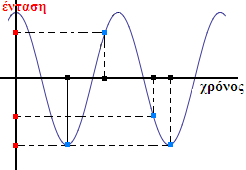
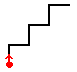
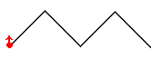

{2024..}-σημειώσεις-πληροφορικής
σύνδεσμος: https://synagonism.net/dirMcsh/dirEdu/dirHitp/HitpEdu000.last.html

σύνδεσμος: https://synagonism.net/dirMcsh/dirEdu/dirHitp/HitpEdu000.last.html

Σημειώσεις: Πληροφορική Α' Β' Γ' Γυμνασίου {2007-σήμερα}:
· η παρούσα ιστοσελίδα|ιστοεφαρμογή περιέχει τις ΣΗΜΕΙΩΣΕΙΣ μου με τις ΕΝΝΟΙΕΣ (το-εννοιακό-μοντέλο) του βιβλίου "Πληροφορική Γυμνασίου" που εκδόθηκε για πρώτη φορά το {2007}.
· από το-σχολικό-έτος {2020-2021} καταγράφω και την-διδασκαλία των-μαθημάτων όπως γίνεται στην τάξη (ενότητα ΑΣΥΓΧΡΟΝΟ-ΤΗΛΕΜΑΘΗΜΑ), έτσι ώστε αν κάποιος μαθητής χάσει ένα-μάθημα να μπορεί να το παρακολουθήσει από το-σπίτι του.
· η ιστοσελίδα είναι γραμμένη με τη μέθοδο html5.id.toc.preview.
· προσπαθώ να ΕΧΩ-ΟΡΙΣΕΙ την-πλειοψηφία των-ονομάτων που χρησιμοποιώ στις προτάσεις του-κειμένου μου.
· επίσης περιέχει ελληνικό και αγγλικό ΕΥΡΕΤΗΡΙΟ των-εννοιών.
· Ctrl+F ή F3: ψάχνει ονόματα εννοιών σε ολόκληρη την ιστοσελίδα, χρησιμοποιώντας το-πρόθεμα 'ενν.' ή 'McsEngl.'
· πατώντας στην ΠΡΑΣΙΝΗ-ΜΠΑΡΑ με τα-εικονίδια σε οποιαδήποτε ιστοσελίδα στον-ιστότοπό μου ψάχνει τα ονόματα των εννοιών του βιβλίου 'Πληροφορική Γυμνασίου' χρησιμοποιώντας το πρόθεμα 'μπγ7' ή 'cig7'.
· μπορείτε να βρείτε εύκολα τη-διεύθυνση της-παρούσας-ιστοσελίδας, αν πάτε στον ιστότοπο "synagonism.net" κάνετε αναζήτηση το "σημειώσεις πληροφορικής" (αφού επιλέξετε Ελληνική-γλώσσα Ctrl+F2).
name::
* ενν.μάθημα.πληροφορική.γυμνάσιο.2007!⇒μπγ7,
* ενν.μπγ7!=μάθημα.πληροφορική.γυμνάσιο.2007, {2019-03-08},
* ενν.πληροφορική-γυμνασίου-2007!⇒μπγ7,
* ενν.σημειώσεις-πληροφορικής-γυμνασίου-2007!⇒μπγ7,
* McsEngl.cig7!=courseInformaticsGymnasium2007, {2019-03-08},
* McsEngl.cig7!~HitpEdu000.9,
* McsEngl.HitpEdu000.last.html!⇒cig7,
* McsEngl.course.informatics.gymnasium.2007!⇒cig7,
Online (ebooks.edu.gr) παρουσίαση του βιβλίου.

περιγραφή::
ΕΦΑΡΜΟΓΕΣ (applications): 
Οι βασικές ΕΦΑΡΜΟΓΕΣ/ΔΟΥΛΕΙΕΣ που κάνουμε με τον υπολογιστή είναι:
1. Επικοινωνούμε (τάξη Α).
2. Παίζουμε - Ψυχαγωγούμαστε.
3. Γράφουμε (τάξη Α).
4. Ζωγραφίζουμε - επεξεργαζόμαστε εικόνες (τάξη Α).
5. Υπολογίζουμε (τάξη Β).
6. Καταχωρούμε πληροφορίες από καρτέλες ή πίνακες.
7. Μαθαίνουμε και εκπαιδευόμαστε.
Ξέρουμε κομπιούτερ, άν ξέρουμε να κάνουμε τις παραπάνω δουλειές.
name::
* ενν.μπγ7/εφαρμογές,
* ενν.εφαρμογές@μπγ7,
name::
* McsEngl.cig7/Applications,
* McsEngl.applications@cig7,
περιγραφή::
ΥΠΟΛΟΓΙΣΤΗΣ (computer): 
Υπολογιστής είναι ένα μηχάνημα με το οποίο επεξεργαζόμαστε σύμβολα, εικόνες και ήχους (πληροφορία).
Προφανώς το ΟΝΟΜΑ, 'υπολογιστής', ΔΕΝ είναι ένα σωστό όνομα γιαυτό το μηχάνημα, επειδή δεν κάνει ΜΟΝΟ υπολογισμούς. Έχει αυτό το όνομα επειδή ο πρώτος υπολογιστής έκανε μόνο υπολογισμούς. Είναι αυτό που λέμε 'καλύτερα να σου βγει το μάτι, παρά το όνομα'!!
name::
* ενν.μπγ7/υπολογιστής,
* ενν.υπολογιστής@μπγ7,
* McsEngl.cig7/Computer,
* McsEngl.computer@cig7,
περιγραφή::
ΔΕΔΟΜΕΝΑ (data): 
Δεδομένα είναι τα σύμβολα, οι εικόνες και οι ήχοι που ΔΙΝΟΥΜΕ στον υπολογιστή να επεξεργαστεί.
name::
* ενν.μπγ7/δεδομένα,
* ενν.δεδομένα@μπγ7,
* McsEngl.cig7/Data,
* McsEngl.data@cig7,
περιγραφή::
ΠΛΗΡΟΦΟΡΙΑ (information): 
Πληροφορία είναι τα σύμβολα, οι εικόνες και οι ήχοι που ΠΑΙΡΝΟΥΜΕ από τον υπολογιστή μετά την επεξεργασία τους.
ΠΡΟΣΟΧΗ: πολλές φορές στα κείμενα και τα σύμβολα, εικόνες και ήχους που ΔΙΝΟΥΜΕ στον υπολογιστή (δεδομένα) τα λένε και πληροφορία.
name::
* ενν.μπγ7/πληροφορία,
* ενν.πληροφορία@μπγ7,
* McsEngl.cig7/Information,
* McsEngl.information@cig7,
περιγραφή::
ΠΛΗΡΟΦΟΡΙΚΗ (informatics):
Πληροφορική είναι η επιστήμη με αντικείμενο τους υπολογιστές ΚΑΙ την επεξεργασία πληροφορίας.
name::
* ενν.μπγ7/πληροφορική,
* ενν.πληροφορική@μπγ7,
* McsEngl.cig7/Informatics,
* McsEngl.informatics@cig7,
περιγραφή::
ΜΠΙΤ (bit): 
bit λέγονται οι ΔΥΟ μορφές στις οποίες ΜΕΤΑΤΡΕΠΟΝΤΑΙ τα σύμβολα οι εικόνες και οι ήχοι μέσα στον υπολογιστή, συμβολικά τα λέμε 0, 1.
Στο σκληρό-δίσκο έχουν τη μορφή μαγνητισμένης ή μη περιοχής.
Στο CD-DVD είναι καμμένη ή μη περιοχή.
Στα τσιπάκια είναι τρανζίστορ (συσκευές με 2 καταστάσεις).
Στα καλώδια μεταφέρονται με 2 τάσεις ρεύματος.
Ασύρματα μεταφέρονται με 2 ηλεκτρομαγνητικές συχνότητες.
Γιαυτό λοιπόν άν κάνουμε 'βίδες' έναν υπολογιστή, δεν θα βρούμε πουθενά μέσα του σύμβολα, εικόνες και ήχους. Μόνο μπιτ υπάρχουν.
Η λέξη bit δημιουργήθηκε από το όνομα 'BInary digiT' που σημαίνει 'δυαδικό ψηφίο'. Αυτός είναι και ο λόγος που η πληροφορία των υπολογιστών λέγεται και ψηφιακή|digital και δυαδική|binary.
name::
* ενν.μπγ7/μπιτ,
* ενν.μπιτ@μπγ7,
* McsEngl.cig7/Bit,
* McsEngl.bit@cig7,
περιγραφή::
ΜΠΑΪΤ (byte): 
byte είναι 8 bit.
name::
* ενν.μπγ7/μπάιτ,
* ενν.μπάιτ@μπγ7,
* McsEngl.cig7/Byte,
* McsEngl.byte@cig7,
περιγραφή:: 
είναι ονόματα συγκεκριμένων ΑΡΙΘΜΩΝ που όπως όλοι οι αριθμοί χρησιμοποιούνται όταν μετράμε μεγέθη (bit, byte, pixel, ...):
K (kilo) = 1.0001 (103 = χίλια),
M (mega) = 1.0002 (106 = εκατομμύριο),
G (giga) = 1.0003 (109 = δισεκατομμύριο),
T (tera) = 1.0004 (1012 = τρισεκατομμύριο),
P (peta) = 1.0005 (1015),
E (exa) = 1.0006 (1018),
Z (zetta) = 1.0007 (1021),
Y (yotta) = 1.0008 (1024),
Το 1998, η "International Electrotechnical Commission" (IEC) καθιέρωσε και τους ΠΑΡΟΜΟΙΟΥΣ αριθμούς που είναι πολλαπλάσια του 2 (210=1024) και όχι του 10, που χρησιμοποιούμε στην ψηφιακή-πληροφορία:
Ki (kibi) = 1.0241 (210 = 1.024),
Mi (mebi) = 1.0242 (220 = 1.048.576),
Gi (gibi) = 1.0243 (230 ≆ 1 δις),
Ti (tebi) = 1.0244 (240 ≆ 1 τρις),
Pi (pebi) = 1.0245 (250),
Ei (exbi) = 1.0246 (260),
Zi (zebi) = 1.0247 (270),
Yi (yobi) = 1.0248 (280).
name::
* ενν.μπγ7/πολλαπλάσιοα-μονάδων,
* ενν.πολλαπλάσιοα-μονάδων@μπγ7,
* McsEngl.cig7/unit-multiples,
* McsEngl.unit-multiples@cig7,
* McsEngl.Kilo@cig7,
* McsEngl.Mega@cig7,
* McsEngl.Giga@cig7,
* McsEngl.Tera@cig7,
* McsEngl.Peta@cig7,
* McsEngl.Exa@cig7,
* McsEngl.Zetta@cig7,
* McsEngl.Yotta@cig7,
περιγραφή::
ΑΓΟΡΑ-ΥΠΟΛΟΓΙΣΤΗ (computer-buying):
Αγοράζουμε υπολογιστή ΜΟΝΟ όταν πραγματικά τον χρειαζόμαστε γιατί χάνουν γρήγορα τη αξία τους. Αγοράζουμε ακριβή οθόνη, φτηνή κεντρική-μονάδα.
name::
* ενν.μπγ7/αγορά-υπολογιστή,
* ενν.αγορά-υπολογιστή@μπγ7,
* McsEngl.cig7/Computer-buying,
* McsEngl.computer-buying@cig7,
περιγραφή::
ΓΙΑΤΙ ΝΑ ΜΑΘΟΥΜΕ ΥΠΟΛΟΓΙΣΤΗ (Why learn computer): 
Γιατί έχει γίνει ΑΠΑΡΑΙΤΗΤΟΣ στην καθημερινότητά μας και στη δουλειά μας. Επίσης είναι η τεχνολογία που μας δίνει τη ΔΥΝΑΤΟΤΗΤΑ να φτιάξουμε μια καλύτερη κοινωνία σε σχέση με τη σημερινή (και φυσικά και χειρότερη αν χρησιμοποιηθεί από άπληστους ανθρώπους).
name::
* ενν.μπγ7/γιατί-να-μάθουμε-υπολογιστή,
* ενν.γιατί-να-μάθουμε-υπολογιστή@μπγ7,
* McsEngl.cig7/Why-learn-computer,
* McsEngl.why-learn-computer@cig7,
περιγραφή::
ΥΛΙΚΟ (Hardware): 
Hardware είναι οι συσκευές του υπολογιστή.
name::
* ενν.μπγ7/υλικό,
* ενν.υλικό@μπγ7,
* McsEngl.cig7/Hardware,
* McsEngl.hardware@cig7,
περιγραφή::
ΛΟΓΙΣΜΙΚΟ (Software): 
Software είναι ότι ΔΕΝ είναι συσκευές, δηλαδή σύμβολα, εικόνες και ήχοι που επεξεργάζεται και παράγει.
Επομένως τα 2 βασικά μέρη ενός υπολογιστή είναι το υλικό και το λογισμικό.
name::
* ενν.μπγ7/λογισμικό,
* ενν.λογισμικό@μπγ7,
* McsEngl.cig7/Software,
* McsEngl.software@cig7,
περιγραφή::
ΚΕΝΤΡΙΚΗ-ΜΟΝΑΔΑ (base-unit): 
Κεντρική Μονάδα λέγεται το βασικό κουτί του υπολογιστή.
name::
* ενν.μπγ7/κεντρική-μονάδα,
* ενν.κεντρική-μονάδα@μπγ7,
* McsEngl.cig7/Base-unit,
* McsEngl.base-unit@cig7,
περιγραφή::
ΠΕΡΙΦΕΡΕΙΑΚΕΣ-ΜΟΝΑΔΕΣ (peripherals): 
Περιφερειακές Μονάδες ονομάζουν όλες τις άλλες συσκευές του υπολογιστή που συνδέονται στην κεντρική-μονάδα.
name::
* ενν.μπγ7/περιφερειακές-μονάδες,
* ενν.περιφερειακές-μονάδες@μπγ7,
* McsEngl.cig7/Peripherals,
* McsEngl.peripherals@cig7,
περιγραφή::
ΕΠΕΞΕΡΓΑΣΤΗΣ (processor-CPU): 
Επεξεργαστής (ΚΜΕ) είναι η ΜΗΧΑΝΗ του υπολογιστή, η συσκευή που επεξεργάζεται σύμβολα, εικόνες και ήχους.
name::
* ενν.μπγ7/επεξεργαστής,
* ενν.επεξεργαστής@μπγ7,
* McsEngl.cig7/CPU-Processor,
* McsEngl.cig7/Processor-CPU,
* McsEngl.processor-CPU@cig7,
περιγραφή::
ΑΠΟΘΗΚΕΣ (storage): 
Αποθήκες είναι οι συσκευές που κρατάνε μόνιμα την πληροφορία.
Σκληρός-δίσκος-HDD (5 TB, εξωτερικός),
Σκληρός-δίσκος-SSD (500GB για το λειτουργικό),
USB (4, 8, 16, ... GB),
DVD (5, 8 GB),
CD (μικρότερη από 1 GB),
name::
* ενν.μπγ7/αποθήκες,
* ενν.αποθήκες@μπγ7,
* McsEngl.cig7/Storage,
* McsEngl.storage@cig7,
περιγραφή::
ΜΝΗΜΗ-ΡΑΜ (RAM): 
Μνήμη RAM είναι η συσκευή που κρατάει προσωρινά τις πληροφορίες που επεξεργάζεται ΚΑΙ τις οδηγίες επεξεργασίας για να γίνει η επεξεργασία πιο ΓΡΗΓΟΡΑ. Όταν κλείνει ο υπολογιστής το περιεχόμενό της ΧΑΝΕΤΑΙ, δηλαδή ΔΕΝ είναι αποθήκη. Δυστυχώς ακούμε συχνά να ονομάζουν "μνήμη" και τη μνήμη-ram και τις αποθήκες ενός υπολογιστή, ειδικά στα smartphones.
Οι 3 πιο σημαντικές συσκευές του υπολογιστή είναι: ο επεξεργαστής, οι αποθήκες και η RAM.
name::
* ενν.μπγ7/μνήμη-Ραμ,
* ενν.μνήμη-Ραμ@μπγ7,
* McsEngl.cig7/RAM,
* McsEngl.RAM@cig7,
περιγραφή::
ΣΥΣΚΕΥΕΣ-ΕΙΣΟΔΟΥ (input-devices): 
Συσκευές εισόδου είναι οι περιφερειακές συσκευές που εισάγουν πληροφορία: πληκτρολόγιο, ποντίκι, μικρόφωνο, ...
name::
* ενν.μπγ7/συσκευές-εισόδου,
* ενν.συσκευές-εισόδου@μπγ7,
* McsEngl.cig7/Input-devices,
* McsEngl.input-devices@cig7,
περιγραφή::
ΣΥΣΚΕΥΕΣ-ΕΞΟΔΟΥ (output-devices): 
Συσκευές εξόδου είναι οι περιφερειακές συσκευές που εξάγουν πληροφορία: οθόνη, εκτυπωτής, ηχεία, ...
name::
* ενν.μπγ7/συσκευές-εξόδου,
* ενν.συσκευές-εξόδου@μπγ7,
* McsEngl.cig7/Output-devices,
* McsEngl.output-devices@cig7,
περιγραφή::
ΕΙΔΗ-ΥΠΟΛΟΓΙΣΤΩΝ (specific-computer): 
Τα είδη Υπολογιστών με βάση το μέγεθός τους είναι:
α) οι ΜΕΓΑΛΟΙ (υπερυπολογιστές)
β) οι ΕΠΙΤΡΑΠΕΖΙΟΙ (προσωπικοί υπολογιστές)
γ) οι ΜΙΚΡΟΙ (φορητοί, τσέπης, portable, notebook, laptop, mobile, netbook, tablet, fablet, smartphone, ...)
name::
* ενν.μπγ7/είδη-υπολογιστών,
* ενν.είδη-υπολογιστών@μπγ7,
* McsEngl.cig7/Specific-computer,
* McsEngl.specific-computer@cig7,
περιγραφή::
ΕΡΓΟΝΟΜΙΑ (ergonomics): 
Εργονομία είναι η επιστήμη που ασχολείται με τη σωστή χρήση των εργαλείων και μηχανημάτων που έφτιαξε ο άνθρωπος έτσι ώστε να μην ταλαιπωρούν το σώμα μας.
name::
* ενν.μπγ7/εργονομία,
* ενν.εργονομία@μπγ7,
* McsEngl.cig7/Ergonomics,
* McsEngl.ergonomics@cig7,
περιγραφή::
ΣΩΣΤΗ-ΣΤΑΣΗ-ΕΡΓΑΣΙΑΣ (Ergonomic-work-position):
το δείχνει η εικόνα του βιβλιου σελ. 21.
name::
* ενν.μπγ7/σωστή-στάση-εργασίας,
* ενν.σωστή-στάση-εργασίας@μπγ7,
* McsEngl.cig7/Ergonomic-work-position,
* McsEngl.ergonomic-work-position@cig7,
περιγραφή::
Εικονοστοιχείο (Pixel):
pixel είναι τα μικρά κουτάκια με τα οποία φτιάχνουν τις εικόνες οι οθόνες (σαν τα ψηφιδωτά).
name::
* ενν.μπγ7/εικονοστοιχείο,
* ενν.εικονοστοιχείο@μπγ7,
* McsEngl.cig7/Pixel,
* McsEngl.pixel@cig7,
περιγραφή::
ΑΝΑΛΥΣΗ-ΟΘΟΝΗΣ (display-resolution):
Ανάλυση οθόνης είναι η ποσότητα των pixel της οθόνης.
name::
* ενν.μπγ7/ανάλυση-οθόνης,
* ενν.ανάλυση-οθόνης@μπγ7,
* McsEngl.cig7/Display-resolution,
* McsEngl.display-resolution@cig7,
περιγραφή::
ΜΕΓΕΘΟΣ-ΟΘΟΝΗΣ (dislpay-size):
Μέγεθος οθόνης είναι το μέγεθος σε ίνσες της διαγωνίου της οθόνης. Η ίνσα έχει μήκος ΠΕΡΙΠΟΥ όσο 2 δάκτυλα ενώ τα εκατοστά όσο 1 δάκτυλο.
name::
* ενν.μπγ7/μέγεθος-οθόνης,
* ενν.μέγεθος-οθόνης@μπγ7,
* McsEngl.cig7/Dislpay-size,
* McsEngl.dislpay-size@cig7,
περιγραφή::
ΧΡΟΝΟΣ-ΚΑΤΑΣΚΕΥΗΣ-ΥΠΟΛΟΓΙΣΤΗ (Time-of-computer-construction): 
περίπου 1945.
name::
* ενν.μπγ7/χρόνος-κατασκευής-υπολογιστή,
* ενν.χρόνος-κατασκευής-υπολογιστή@μπγ7,
* McsEngl.cig7/Time-of-computer-construction,
* McsEngl.time-of-computer-construction@cig7,
περιγραφή::
ΗΛΕΚΤΡΟΝΙΚΗ-ΛΥΧΝΙΑ (electron-tube):
Ηλεκτρονικές λυχνίες είναι μικρές λάμπες με τις οποίες παράσταιναν τα bit στους πρώτους υπολογιστές.
name::
* ενν.μπγ7/ηλεκτρονική-λυχνία,
* ενν.ηλεκτρονική-λυχνία@μπγ7,
* McsEngl.cig7/Electron-tube,
* McsEngl.electron-tube@cig7,
περιγραφή::
ΤΡΑΝΖΙΣΤΟΡ (transistor):
Τα τρανζίστορ αντικατέστησαν τις ηλεκτρονικές λυχνίες, είναι μικρά και δεν καίγονται.
name::
* ενν.μπγ7/τρανζίστορ,
* ενν.τρανζίστορ@μπγ7,
* McsEngl.cig7/Transistor,
* McsEngl.transistor@cig7,
περιγραφή::
ΟΛΟΚΛΗΡΩΜΕΝΟ-ΚΥΚΛΩΜΑ (chip-or-integrated-circuit):
Τα ολοκληρωμένα κυκλώματα (τσιπ) περιέχουν μεγάλες ποσότητες τραντζίστορ και μείωσαν το μέγεθος και το κόστος των υπολογιστών.
name::
* ενν.μπγ7/ολοκληρωμένο-κύκλωμα,
* ενν.ολοκληρωμένο-κύκλωμα@μπγ7,
* McsEngl.cig7/Chip-or-integrated-circuit,
* McsEngl.chip-or-integrated-circuit@cig7,
περιγραφή::
ΑΡΧΕΙΟ (file): 
Αρχεία είναι σύμβολα, εικόνες και ήχοι στις αποθήκες με όνομα.
name::
* ενν.μπγ7/αρχείο,
* ενν.αρχείο@μπγ7,
* McsEngl.cig7/File,
* McsEngl.file@cig7,
περιγραφή::
ΦΑΚΕΛΟΣ (folder-or-Directory): 
Φάκελος είναι κομμάτι αποθηκών. Περιέχει αρχεία και άλλους φακέλους.
name::
* ενν.μπγ7/φάκελος,
* ενν.φάκελος@μπγ7,
* McsEngl.cig7/Folder-or-Directory,
* McsEngl.folder-or-Directory@cig7,
περιγραφή::
ΠΡΟΓΡΑΜΜΑ (program): 
Πρόγραμμα είναι αρχείο|αρχεία με οδηγίες.
ΠΡΟΣΟΧΗ, τα προγράμματα τα ονομάζουν ΚΑΙ λογισμικό/software.
name::
* ενν.μπγ7/πρόγραμμα-(Α-γυμν),
* ενν.πρόγραμμα-(Α-γυμν)@μπγ7,
* McsEngl.cig7/program,
* McsEngl.program@cig7,
περιγραφή::
ΠΡΟΓΡΑΜΜΑ-ΕΦΑΡΜΟΓΩΝ (application-program): 
Προγράμματα/λογισμικό-εφαρμογών είναι τα προγράμματα που χρησιμοποιεί ο χρήστης να κάνει τις εφαρμογές που κάνουμε με τον υπολογιστή.
name::
* ενν.μπγ7/πρόγραμμα-εφαρμογών,
* ενν.πρόγραμμα-εφαρμογών@μπγ7,
* McsEngl.cig7/Application-program,
* McsEngl.application-program@cig7,
περιγραφή::
ΠΡΟΓΡΑΜΜΑ-ΣΥΣΤΗΜΑΤΟΣ (system-program): 
Προγράμματα/λογισμικό-συστήματος είναι τα προγράμματα που χρησιμοποιεί αποκλειστικά ο υπολογιστής για να δουλέψει πχ οδηγοί συσκευών.
name::
* ενν.μπγ7/πρόγραμμα-συστήματος,
* ενν.πρόγραμμα-συστήματος@μπγ7,
* McsEngl.cig7/System-program,
* McsEngl.system-program@cig7,
περιγραφή::
ΛΕΙΤΟΥΡΓΙΚΟ-ΣΥΣΤΗΜΑ (operating-system): 
είναι το ΠΡΟΓΡΑΜΜΑ που α) είναι το σημαντικότερο γιατί χωρίς αυτό ΔΕΝ 'λειτουργεί' ο υπολογιστής και β) εκτελείται με το άνοιγμα του υπολογιστή.
Υπάρχουν 4 σημαντικά: Linux, Windows, iOS (Mac), Android.
Με το λειτουργικό
α) εκτελούμε τα προγράμματα-εφαρμογών,
β) βλέπουμε τα αρχεία και τους φακέλους,
γ) αλλάζουμε τις παραμέτρους.
name::
* ενν.μπγ7/λειτουργικό-σύστημα,
* ενν.λειτουργικό-σύστημα@μπγ7,
* McsEngl.cig7/Operating-system,
* McsEngl.operating-system@cig7,
περιγραφή::
ΠΕΡΙΒΑΛΛΟΝ-ΓΡΑΦΙΚΟ (graphical-user-interface): 
είναι ο σημερινός τρόπος επικοινωνίας του χρήστη με τον υπολογιστή που χρησιμοποιεί ποντίκι, μικρές εικόνες και μενού εντολών.
name::
* ενν.μπγ7/περιβάλλον-γραφικό,
* ενν.περιβάλλον-γραφικό@μπγ7,
* McsEngl.cig7/Graphical-user-interface,
* McsEngl.graphical-user-interface@cig7,
περιγραφή::
ΠΕΡΙΒΑΛΛΟΝ-ΕΝΤΟΛΩΝ-ΓΡΑΜΜΗΣ (command-line-interface):
είναι ο πρώτος τρόπος επικοινωνίας του χρήστη με τον υπολογιστή όπου ο χρήστης έπρεπε να γράφει ειδικές εντολές για να κάνει οποιαδήποτε εργασία στον υπολογιστή.
name::
* ενν.μπγ7/περιβάλλον-εντολών-γραμμής,
* ενν.περιβάλλον-εντολών-γραμμής@μπγ7,
* McsEngl.cig7/Command-line-interface,
* McsEngl.command-line-interface@cig7,
περιγραφή::
ΕΙΚΟΝΙΔΙΟ (icon):
είναι οι μικρές εικόνες που χρησιμοποιούν τα γραφικά-περιβάλλοντα-επικοινωνίας.
name::
* ενν.μπγ7/εικονίδιο,
* ενν.εικονίδιο@μπγ7,
* McsEngl.cig7/Icon,
* McsEngl.icon@cig7,
περιγραφή::
ΠΑΡΑΘΥΡΟ (window):
είναι το ορθογώνιο σχήμα με το μενού-εντολών και τα εικονίδιά του (γραμμή-εργαλείων) μέσα στα οποία κάνουμε τις διάφορες δουλειές μας.
name::
* ενν.μπγ7/παράθυρο,
* ενν.παράθυρο@μπγ7,
* McsEngl.cig7/Window,
* McsEngl.window@cig7,
περιγραφή::
ΕΠΙΦΑΝΕΙΑ-ΕΡΓΑΣΙΑΣ (desktop):
είναι η πρώτη επιφάνεια που βλέπουμε όταν ανοίγουμε τον υπολογιστή.
name::
* ενν.μπγ7/επιφάνεια-εργασίας,
* ενν.επιφάνεια-εργασίας@μπγ7,
* McsEngl.cig7/Desktop,
* McsEngl.desktop@cig7,
περιγραφή::
ΓΡΑΜΜΗ-ΕΡΓΑΣΙΩΝ (taskbar):
είναι η μπάρα πάνω στην οποία φαίνονται τα παράθυρα που έχουμε ανοίξει για να κάνουμε τις δουλειές μας.
name::
* ενν.μπγ7/γραμμή-εργασιών,
* ενν.γραμμή-εργασιών@μπγ7,
* McsEngl.cig7/Taskbar,
* McsEngl.taskbar@cig7,
περιγραφή::
ΠΡΟΓΡΑΜΜΑ-ΙΟΣ (computer-virus): 
είναι το πρόγραμμα που προσπαθεί να καταστρέψει ή να κλέψει πληροφορία από τους υπολογιστές μας.
name::
* ενν.μπγ7/ιός-υπολογιστή,
* ενν.μπγ7/πρόγραμμα-ιός,
* ενν.πρόγραμμα-ιός@μπγ7,
* McsEngl.cig7/Computer-virus,
* McsEngl.computer-virus@cig7,
περιγραφή::
ΑΝΤΙΙΙΚΟ-ΠΡΟΓΡΑΜΜΑ (antivirus): 
είναι το πρόγραμμα που προσπαθεί να μας προστατέψει από τους ιούς.
name::
* ενν.μπγ7/αντιικό-πρόγραμμα,
* ενν.αντιικό-πρόγραμμα@μπγ7,
* McsEngl.cig7/Antivirus,
* McsEngl.antivirus@cig7,
περιγραφή::
ΑΝΤΙΓΡΑΦΑ-ΑΣΦΑΛΕΙΑΣ (backup):
είναι αντίγραφα των αρχείων μας που πρέπει να κρατάμε και σε άλλες αποθήκες έξω απο το κομπιούτερ μας σε περίπτωση που καταστραφούν τα πρωτότυπα.
name::
* ενν.μπγ7/αντίγραφο-ασφαλείας,
* ενν.αντίγραφο-ασφαλείας@μπγ7,
* McsEngl.cig7/Backup,
* McsEngl.backup@cig7,
περιγραφή::
ΧΑΚΕΡ (hacker): 
είναι άνθρωποι που προσπαθούν να σπάσουν τα συστήματα ασφαλείας των υπολογιστών.
name::
* ενν.μπγ7/χάκερ,
* ενν.χάκερ@μπγ7,
* McsEngl.cig7/Hacker,
* McsEngl.hacker@cig7,
περιγραφή::
ΠΕΙΡΑΤΕΙΑ-ΠΡΟΓΡΑΜΜΑΤΩΝ (software-piracy): 
είναι η χρήση προγραμμάτων πέραν της χρήσης που επιτρέπει ο κατασκευαστής.
name::
* ενν.μπγ7/πειρατεία-προγραμμάτων,
* ενν.πειρατεία-προγραμμάτων@μπγ7,
* McsEngl.cig7/Software-piracy,
* McsEngl.software-piracy@cig7,
περιγραφή::
ΠΙΣΤΟΠΟΙΗΤΙΚΟ-ΑΥΘΕΝΤΙΚΟΤΗΤΑΣ (certificate-of-authenticity):
οτιδήποτε αποδεικνύει ότι χρησιμοποιούμε γνήσιο πρόγραμμα, συνήθως ειδική ταινία ασφαλείας.
Η απόδειξη ότι είμαστε οι αγοραστές προγράμματος γίνεται μέσω κωδικών.
name::
* ενν.μπγ7/πιστοποιητικό-αυθεντικότητας,
* ενν.πιστοποιητικό-αυθεντικότητας@μπγ7,
* McsEngl.cig7/Certificate-of-authenticity,
* McsEngl.certificate-of-authenticity@cig7,
περιγραφή::
ΑΔΕΙΑ-ΧΡΗΣΗΣ (license):
είναι το ΕΓΓΡΑΦΟ που περιγράφει τους όρους που πρέπει να τηρήσει ο αγοραστής ή χρήστης προγράμματος.
ΠΟΣΟΤΗΤΑ ΑΔΕΙΩΝ ΧΡΗΣΗΣ:
είναι η ποσότητα των υπολογιστών στους οποίους μπορούμε να χρησιμοποιήσουμε ένα πρόγραμμα ή η ποσότητα των χρηστών που μπορούν να χρησιμοποιήσουν ένα πρόγραμμα.
name::
* ενν.μπγ7/άδεια-χρήσης,
* ενν.άδεια-χρήσης@μπγ7,
* McsEngl.cig7/License,
* McsEngl.license@cig7,
περιγραφή::
ΔΩΡΕΑΝ-ΠΡΟΓΡΑΜΜΑ (free-program):
είναι πρόγραμμα που μπορούμε να χρησιμοποιήσουμε χωρίς να πληρώσουμε.
name::
* ενν.μπγ7/δωρεάν-πρόγραμμα,
* ενν.μπγ7/πρόγραμμα-δωρεάν,
* ενν.δωρεάν-πρόγραμμα@μπγ7,
* McsEngl.cig7/Free-program,
* McsEngl.free-program@cig7,
περιγραφή::
ΠΡΟΓΡΑΜΜΑ-ΑΝΟΙΚΤΟΥ-ΚΩΔΙΚΑ (open-source-program):
είναι δωρεάν πρόγραμμα που εκτός από τον κώδικα σε μορφή bit μας δίνεται και ο κώδικας σε μορφή με λέξεις όπως τον έγραψε ο προγραμματιστής έτσι ώστε, άν ξέρουμε από προγραμματισμό, να μπορούμε να τον τροποποιήσουμε.
name::
* ενν.μπγ7/πρόγραμμα-ανοικτού-κώδικα,
* ενν.ΠΡΟΓΡΑΜΜΑ-ΑΝΟΙΚΤΟΥ-ΚΩΔΙΚΑ@μπγ7,
* McsEngl.cig7/Open-source-program,
* McsEngl.open-source-program@cig7,

· https://jspaint.app/: ιστοεφαρμογή με το κλασσικό πρόγραμμα ζωγραφικής των windows.
description::
· βιβλίο σελίδα 60.
περιγραφή::
ΕΠΕΞΕΡΓΑΣΤΗΣ-ΚΕΙΜΕΝΟΥ (word-processor): 
είναι ένα πρόγραμμα με το οποίο γράφουμε κείμενα. Εμείς στο εργαστήριο χρησιμοποιούμε τον επεξεργαστή-κειμένου του LibreOffice επειδή είναι ΕΛΕΥΘΕΡΟ πρόγραμμα.
name::
* ενν.μπγ7/επεξεργαστής-κειμένου,
* ενν.επεξεργαστής-κειμένου@μπγ7,
* McsEngl.cig7/Word-processor,
* McsEngl.word-processor@cig7,
περιγραφή::
ΔΡΟΜΕΑΣ (cursor): 
είναι η γραμμή που αναβοσβήνει και μας δείχνει σε ποιο σημείο της οθόνης εμφανίζονται τα σύμβολα που πληκτρολογούμε.
name::
* ενν.μπγ7/δρομέας,
* ενν.δρομέας@μπγ7,
* McsEngl.cig7/Cursor,
* McsEngl.cursor@cig7,
περιγραφή::
ΑΛΛΑΓΗ-ΓΛΩΣΣΑΣ (language):
ονομάζουμε την αλλαγή της γλώσσας του πληκτρολογίου (ελληνικά / αγγλικά):
- alt + shift μαζί, δηλαδή α) συνέχεια πατημένο το alt, β) μια φορά το shift, γ) αφήνουμε το alt.
name::
* ενν.μπγ7/αλλαγή-γλώσσας,
* ενν.αλλαγή-γλώσσας@μπγ7,
* McsEngl.cig7/Language-change-of--word-processor,
* McsEngl.language-change-of--word-processor@cig7,
περιγραφή::
ΚΕΦΑΛΑΙΑ-ΓΡΑΜΜΑΤΑ (capitals):
με το caps lock γράφουμε συνέχεια κεφαλαία, ενώ με το shift μόνο ένα.
name::
* ενν.μπγ7/κεφαλαία-γράμματα,
* ενν.κεφαλαία-γράμματα@μπγ7,
* McsEngl.cig7/Capitals,
* McsEngl.capitals@cig7,
περιγραφή::
ΛΕΞΗ-ΠΑΡΑΓΡΑΦΟ (word-paragraph):
ΛΕΞΗ για το κομπιούτερ είναι μια σειρά γραμμάτων μεταξύ κενών και
ΠΑΡΑΓΡΑΦΟ για το κομπιούτερ είναι κείμενο μεταξύ enter.
Το κείμενο αλλάζει γραμμή μόνο του, με enter αλλάζει παράγραφο.
name::
* ενν.μπγ7/λέξη-παράγραφο,
* ενν.λέξη-παράγραφο@μπγ7,
* McsEngl.cig7/Word-paragraph,
* McsEngl.word-paragraph@cig7,
περιγραφή::
ΤΟΝΟΣ (Accent-mark):
α) ελληνικό ερωτηματικό (πλήκτρο τόνου) και μετά β) αντίστοιχο φωνήεν.
- Διαλυτικά: α) shift+(;) β) φωνήεν.
- Διαλυτικά και τόνος: α) shift+ (;) β) (;) γ) φωνήεν
- ΕΙΔΙΚΟΙ ΧΑΡΑΚΤΗΡΕΣ είναι τα σύμβολα που δεν υπάρχουν στο πληκτρολόγιο: α) δρομέας β) εισαγωγή / ειδικός χαρακτήρας ή σύμβολο.
- Όταν το πληκτρολόγιο γράφει ελληνικά το (;) έχει μεταφερθεί στο πλήκρο Q.
name::
* ενν.μπγ7/τόνος,
* ενν.τόνος@μπγ7,
* McsEngl.cig7/Accent-mark,
* McsEngl.accent-mark@cig7,
περιγραφή::
ΣΒΗΣΙΜΟ-ΧΑΡΑΚΤΗΡΩΝ (Char-delete):
το backspace σβήνει ένα σύμβολο ΠΙΣΩ από το ΔΡΟΜΕΑ ενώ το delete μπροστά.
name::
* ενν.μπγ7/σβήσιμο-χαρακτήρων,
* ενν.σβήσιμο-χαρακτήρων@μπγ7,
* McsEngl.cig7/Char-delete,
* McsEngl.char-delete@cig7,
περιγραφή::
ΜΕΤΑΚΙΝΗΣΗ-ΔΡΟΜΕΑ (Cursor-movement):
- το ποντίκι (οποιοδήποτε σημείο, πιο γρήγορο μακριά)
- τα πλήκτρα με τα τέσσερα βελάκια (οποιοδήποτε σημείο, πιο γρήγορο μακριά)
- τα πλήκτρα home /end (αρχή /τέλος γραμμής)
- τα πλήκτρα ctrl + home /end (αρχή /τέλος κειμένου)
- τα πλήκτρα pageup /pagedown (αρχή /τέλος οθόνης)
name::
* ενν.μπγ7/μετακίνηση-δρομέα,
* ενν.μετακίνηση-δρομέα@μπγ7,
* McsEngl.cig7/Cursor-movement,
* McsEngl.cursor-movement@cig7,
περιγραφή::
ΑΠΟΘΗΚΕΥΣΗ-ΑΝΑΚΤΗΣΗ (save-open):
ΑΠΟΘΗΚΕΥΣΗ είναι η διαδικασία μεταφοράς του κειμένου από την μνήμη ram στις αποθήκες: αρχείο / αποθήκευση.
ΑΝΑΚΤΗΣΗ είναι η διαδικασία μεταφοράς του κειμένου από τις αποθήκες στη μνήμη ram: αρχείο / άνοιγμα.
name::
* ενν.μπγ7/αποθήκευση-ανάκτηση,
* ενν.αποθήκευση-ανάκτηση@μπγ7,
* McsEngl.cig7/Save-open,
* McsEngl.save-open@cig7,
περιγραφή::
ΔΙΟΡΘΩΣΗ-ΛΑΘΩΝ (error-correction):
λέμε τη διαδικασία με την οποία το κομπιούτερ βρίσκει λάθη στο κείμενό μας.
- πατάμε το εικονίδιο ABC ή ΑΒΓ.
name::
* ενν.μπγ7/διόρθωση-λαθών,
* ενν.διόρθωση-λαθών@μπγ7,
* McsEngl.cig7/Error-correction,
* McsEngl.error-correction@cig7,
περιγραφή::
ΜΟΡΦΟΠΟΙΗΣΗ-ΚΕΙΜΕΝΟΥ (text-format):
λέμε τη διαδικασία αλλαγής μορφής του κειμένου: χρώμα, στοίχιση, υπογράμμιση, …
name::
* ενν.μπγ7/μορφοποίηση-κειμένου,
* ενν.μορφοποίηση-κειμένου@μπγ7,
* McsEngl.cig7/Text-format,
* McsEngl.text-format@cig7,
περιγραφή::
ΕΠΙΛΟΓΗ-ΚΕΙΜΕΝΟΥ (text-selection):
είναι το "μαύρισμα" του κειμένου με την οποία δείχνουμε στο μηχάνημα ποιο κομμάτι κειμένου θέλουμε να μορφοποιήσουμε.
- λέξη: διπλό κλικ,
- παράγραφο: τριπλό κλικ,
- τυχαίο κείμενο: σέρνουμε το ποντίκι από το πρώτο γράμμα μέχρι το τελευταίο ΚΑΙ δεν το αφήνουμε πριν φτάσουμε στο τελευταίο γιατί αλλιώς πρέπει να δοκιμάσουμε πάλι από την αρχή.
name::
* ενν.μπγ7/επιλογή-κειμένου,
* ενν.επιλογή-κειμένου@μπγ7,
* McsEngl.cig7/Text-selection,
* McsEngl.text-selection@cig7,
περιγραφή::
ΓΡΑΜΜΑΤΟΣΕΙΡΑ (font):
είναι η ΜΟΡΦΗ των συμβόλων που χρησιμοποιεί το κομπιούτερ.
α) επιλογή κειμένου και β) επιλογή γραμματοσειράς από τη λίστα των γραμματοσειρών πχ Times New Roman.
name::
* ενν.μπγ7/γραμματοσειρά,
* ενν.γραμματοσειρά@μπγ7,
* McsEngl.cig7/Font,
* McsEngl.font@cig7,
περιγραφή::
ΜΕΓΕΘΟΣ-ΧΑΡΑΚΤΗΡΩΝ (character-size):
λέμε το πόσο μεγάλα είναι τα γράμματα και δεν πρέπει να συγχέεται με το ζουμ και τα κεφαλαία.
α) επιλογή κειμένου β) επιλογή μεγέθους από τη λίστα των μεγεθών, τα νούμερα δεξιά από τις γραμματοσειρές.
name::
* ενν.μπγ7/μέγεθος-χαρακτήρων,
* ενν.μέγεθος-χαρακτήρων@μπγ7,
* McsEngl.cig7/Character-size,
* McsEngl.character-size@cig7,
περιγραφή::
ΕΝΤΟΝΑ-ΠΛΑΓΙΑ-ΥΠΟΓΡΑΜΜΙΣΜΕΝΑ (Bold-Italics-Underline):
α) επιλογή κειμένου
β) τα εικονίδια με τα 3 Α ή B/I/U.
name::
* ενν.μπγ7/έντονα-πλάγια-υπογραμμισμένα,
* ενν.έντονα-πλάγια-υπογραμμισμένα@μπγ7,
* McsEngl.cig7/Bold-Italics-Underline,
* McsEngl.bold-Italics-Underline@cig7,
περιγραφή::
ΣΤΟΙΧΙΣΗ-ΚΕΙΜΕΝΟΥ (text-alignment):
ονομάζουμε την ευθεία στην οποία είναι στοιχισμένες οι ΓΡΑΜΜΕΣ του κειμένου.
α) επιλέγουμε το κείμενο β) εικονίδια "στοίχιση αριστερά" "κέντρο" "δεξιά" "πλήρη στοίχιση".
name::
* ενν.μπγ7/στοίχιση-κειμένου,
* ενν.στοίχιση-κειμένου@μπγ7,
* McsEngl.cig7/Text-alignment,
* McsEngl.text-alignment@cig7,
περιγραφή::
ΧΡΩΜΑ (color):
α) χρώμα γραμμάτων με το εικονίδιο "χρώμα γραμματοσειράς"
β) χρώμα φόντου (πίσω από τα γράμματα) με τα εικονίδια "επισήμανση" (φόντο στην επιλογή) και "χρώμα φόντου" (φόντο στην παράγραφο)
name::
* ενν.μπγ7/χρώμα,
* ενν.χρώμα@μπγ7,
* McsEngl.cig7/Color,
* McsEngl.color@cig7,
περιγραφή::
ΕΙΣΑΓΩΓΗ-ΕΙΚΟΝΑΣ (image-insertion):
α) δρομέας β) εισαγωγή / εικόνα.
name::
* ενν.μπγ7/εισαγωγή-εικόνας,
* ενν.εισαγωγή-εικόνας@μπγ7,
* McsEngl.cig7/Image-insertion,
* McsEngl.image-insertion@cig7,
περιγραφή::
ΑΝΤΙΓΡΑΦΗ-ΜΕΤΑΦΟΡΑ (copy-cut):
Με την αντιγραφή το κείμενο υπάρχει και στην παλιά και στην καινούργια ΘΕΣΗ, με τη μεταφορά μόνο στην καινούργια.
α) αντιγραφή: επιλογή / αντιγραφή / δρομέας /επικόλληση.
β) μεταφορά: επιλογή /αποκοπή / δρομέας / επικόλληση.
name::
* ενν.μπγ7/αντιγραφή-μεταφορά,
* ενν.αντιγραφή-μεταφορά@μπγ7,
* McsEngl.cig7/Copy-cut,
* McsEngl.copy-cut@cig7,
περιγραφή::
ΔΙΑΔΙΚΤΥΟ (Internet): 
είναι δίκτυο-υπολογιστών που α) είναι παγκόσμιο και β) είναι το μεγαλύτερο.
name::
* ενν.μπγ7/Διαδίκτυο,
* ενν.μπγ7/Ιντερνετ,
* ενν.μπγ7/Ίντερνετ,
* ενν.Διαδίκτυο@μπγ7,
* ενν.Ιντερνετ@μπγ7,
* McsEngl.cig7/Internet,
* McsEngl.Internet@cig7,
περιγραφή::
ΥΠΗΡΕΣΙΕΣ-ΔΙΑΔΙΚΤΥΟΥ (Internet-services): 
είναι οι δουλειές επικοινωνίας πληροφορίας που κάνουμε στο διαδίκτυο όπως:
- εύρεση πληροφοριών,
- ψυχαγωγία,
- κοινωνική δικτύωση (facebook, twitter),
- ηλεκτρονικό-ταχυδρομείο, chat, ομάδες-συζητήσεων,
- βιντεοκλήση (τηλεδιάσκεψη),
- αγορές,
- μεταφορά-αρχείων,
- τηλεμαθήματα,
- παγκόσμιος ιστός.
name::
* ενν.μπγ7/υπηρεσίες-διαδικτύου,
* ενν.υπηρεσίες-διαδικτύου@μπγ7,
* McsEngl.cig7/Internet-services,
* McsEngl.Internet-services@cig7,
περιγραφή::
ΠΡΩΤΟΚΟΛΛΟ-ΕΠΙΚΟΙΝΩΝΙΑΣ (communication-protocol): 
είναι οι κοινοί κανόνες (η κοινή γλώσσα) που χρησιμοποιούν τα κομπιούτερ για να επικοινωνούν, πχ http.
name::
* ενν.μπγ7/πρωτόκολλο-επικοινωνίας,
* ενν.πρωτόκολλο-επικοινωνίας@μπγ7,
* McsEngl.cig7/Communication-protocol,
* McsEngl.communication-protocol@cig7,
περιγραφή::
· ΠΑΓΚΟΣΜΙΟΣ-ΙΣΤΟΣ (world-wide-web) είναι υπηρεσία του ίντερνετ, η πιο σημαντική, που χρησιμοποιεί το πρωτόκολλο επικοινωνίας http, που γνωρίζουν οι browsers.
· σήμερα, η συντριπτική πλειοψηφία των υπηρεσιών-ίντερνετ γίνονται μέσα από τον παγκόσμιο ιστό.
· αυτός είναι και ο λόγος για τον οποίον πολλοί άνθρωποι μπερδεύουν τον παγκόσμιο-ιστό (δημιουργήθηκε περίπου το 1990) με το ίντερνετ (δημιουργήθηκε περίπου το 1970).
· καταλαβαίνουμε ότι είμαστε στον παγκόσμιο-ιστό όταν χρησιμοποιούμε φυλλομετρητή (αυτός ξέρει το-πρωτόκολλο-http, όχι εμείς).
name::
* ενν.μπγ7/παγκόσμιος-ιστός,
* ενν.παγκόσμιος-ιστός@μπγ7,
* McsEngl.cig7/WWW=world-wide-web,
* McsEngl.world-wide-web@cig7,
περιγραφή::
ΣΥΝΔΕΣΗ-ΔΙΑΔΙΚΤΥΟΥ (Internet-connection):
Στο ίντερνετ συνδεόμαστε μέσω των εταιριών παροχής υπηρεσιών ίντερνετ (ISP).
Αγοράζουμε ένα πακέτο-σύνδεσης α) για σταθερό-τηλέφωνο, β) για το δίκτυο-κινητής-τηλεφωνίας, γ) για δορυφορικό-δίκτυο.
name::
* ενν.μπγ7/σύνδεση-Διαδικτύου,
* ενν.σύνδεση-Διαδικτύου@μπγ7,
* McsEngl.cig7/Internet-connection,
* McsEngl.Internet-connection@cig7,
περιγραφή::
BPS (bit per second):
είναι η μονάδα μέτρησης της ταχύτητας σύνδεσης του ίντερνετ.
περιγραφή::
ΚΙΝΔΥΝΟΙ-ΔΙΑΔΙΚΤΥΟΥ (Internet-dangers): 
α) δεν εμπιστευόμαστε ΑΓΝΩΣΤΟΥΣ.

β) προσέχουμε τις ΠΡΟΣΩΠΟΜΙΜΗΣΕΙΣ|impersonations.

γ) ελέγχουμε αν οι-πληροφορίες είναι ΑΛΗΘΕΙΣ|ΛΑΘΟΣ-ΨΕΜΑ:
- κριτήριο για την αλήθεια πληροφορίας έχουμε την ΠΗΓΗ της.Ανώνυμες πληροφορίες έχουν μικρή έως καθόλου αξία!!!
- όλοι κάνουμε λάθη, γι αυτό δεχόμαστε τις διαφορετικές απόψεις, ΔΕΝ συγχωρούμε όμως τους ΨΕΥΤΕΣ (= λένε επίτηδες αναληθείς-πληροφορίες για να κερδίσουν κάτι).

δ) ΙΟΥΣ.

ε) ΕΘΙΣΜΟ στο διαδίκτυο ("πᾶν μέτρον ἄριστον").

στ) εξοικείωση με ΠΟΛΕΜΟΥΣ μέσα από ρεαλιστικά βιντεοπαιγνίδια (PUBG, CS:GO).


name::
* ενν.μπγ7/κίνδυνοι-Διαδικτύου,
* ενν.κίνδυνοι-Διαδικτύου@μπγ7,
* McsEngl.cig7/Internet-dangers,
* McsEngl.Internet-dangers@cig7,
addressWpg::
* https://saferinternet4kids.gr/: Ελληνικό Κέντρο Ασφαλούς Διαδικτύου,
* http://www.help-line.gr/: συμβουλευτική γραμμή βοήθειας,
* http://www.safeline.gr/: Ανοιχτής Γραμμής Καταγγελιών,
περιγραφή::
ΦΥΛΛΟΜΕΤΡΗΤΗΣ-ή-ΠΕΡΙΗΓΗΤΗΣ (web-browser): 
είναι το πρόγραμμα με το οποίο μπαίνουμε στον παγκόσμιο ιστό, πχ: Google-Chrome, Mozilla-Firefox, Brave, Microsoft-Edge, Safari, Opera, κλπ.
name::
* ενν.μπγ7/φυλλομετρητής|περιηγητής,
* ενν.φυλλομετρητής|περιηγητής@μπγ7,
* McsEngl.cig7/Web-browser,
* McsEngl.web-browser@cig7,
περιγραφή::
· ΙΣΤΟΣΕΛΙΔΑ (webpage) είναι ΕΓΓΡΑΦΟ γραμμένο στη γλώσσα-υπολογιστών HTML, που βλέπουμε στον παγκόσμιο-ιστό.
name::
* ενν.μπγ7/ιστοσελίδα,
* ενν.ιστοσελίδα@μπγ7,
* McsEngl.cig7/webpage,
* McsEngl.webpage@cig7,
περιγραφή::
· ΔΙΕΥΘΥΝΣΗ-ΙΣΤΟΣΕΛΙΔΑΣ (webpage-address) είναι το μοναδικό όνομά της που αποτελείται
α) από το όνομα του κομπιούτερ,
β) των φακέλων και
γ) του αρχείου που βλέπουμε,
πχ gym-eleous.ioa.sch.gr/2018/dirSwp/c3a03-zwodoxos.html.
· δεν πρέπει να μπερδεύουμε τη διεύθυνση-ιστοσελίδας (το όνομά της) με την ίδια την ιστοσελίδα. Η-μηχανή-αναζήτησης της-google μας βρίσκει διευθύνσεις-ιστοσελίδων και όχι ιστοσελίδες!
name::
* ενν.μπγ7/διεύθυνση-ιστοσελίδας,
* ενν.διεύθυνση-ιστοσελίδας@μπγ7,
* McsEngl.cig7/webpage-address,
* McsEngl.webpage-address@cig7,
περιγραφή::
· ΙΣΤΟΤΟΠΟΣ (website) είναι ένα σύνολο ιστοσελίδων στο ίδιο κομπιούτερ (= με κοινό μέρος το ΠΡΩΤΟ κομμάτι της διεύθυνσής τους).
name::
* ενν.μπγ7/ιστότοπος,
* ενν.μπγ7/σάιτ,
* ενν.ιστότοπος@μπγ7,
* ενν.σάιτ@μπγ7,
* McsEngl.cig7/website,
* McsEngl.website@cig7,
περιγραφή::
ΠΛΟΗΓΗΣΗ-ΠΕΡΙΗΓΗΣΗ-ΣΕΡΦΑΡΙΣΜΑ (web-navigation): 
λέμε την περιπλάνησή μας από ιστοσελίδα σε ιστοσελίδα.
περιγραφή::
· ιστοεφαρμογή είναι μια-ιστοσελίδα ή ένας-ιστότοπος που συγχρόνως είναι και πρόγραμμα-εφαρμογών.
· η-επεξεργασία της-πληροφορίας μπορεί να γίνεται τοπικά ή απομακρυσμένα.
· για να την εκτελέσουμε αρκεί να ξέρουμε τη-διεύθυνσή της.
name::
* ενν.μπγ7/ιστοεφαρμογή,
* ενν.ιστοεφαρμογή@μπγ7,
* McsEngl.cig7/webapp,
* McsEngl.webapp@cig7,
περιγραφή::
ΥΠΕΡΚΕΙΜΕΝΟ (hypertext):
είναι κείμενο που δεν είναι σε σειρά, όπως ένα χάρτινο βιβλίο, με συνδέσεις ανάμεσα στα κομμάτια του.
name::
* ενν.μπγ7/υπερκείμενο,
* ενν.υπερκείμενο@μπγ7,
* McsEngl.cig7/Hypertext,
* McsEngl.hypertext@cig7,
περιγραφή::
ΥΠΕΡΣΥΝΔΕΣΜΟ (hyperlink):
λέμε τη σύνδεση που υπάρχει ανάμεσα στα κομμάτια του υπερκειμένου.
name::
* ενν.μπγ7/υπερσύνδεσμος,
* ενν.υπερσύνδεσμος@μπγ7,
* McsEngl.cig7/Hyperlink,
* McsEngl.hyperlink@cig7,
περιγραφή::
ΘΕΡΜΗ-ΛΕΞΗ (link-label):
ονομάζουμε το κείμενο που έχει σύνδεσμο προς άλλη θέση του υπερκειμένου. Το ποντίκι γίνεται 'χεράκι' πάνω του.
name::
* ενν.μπγ7/θερμή-λέξη,
* ενν.θερμή-λέξη@μπγ7,
* McsEngl.cig7/Link-label,
* McsEngl.link-label@cig7,
περιγραφή::
ΚΟΜΒΟΣ (node):
λέγεται κάθε κομμάτι του υπερκειμένου.
name::
* ενν.μπγ7/κόμβος-υπερκειμένου,
* ενν.κόμβος-υπερκειμένου@μπγ7,
* McsEngl.cig7/Node,
* McsEngl.node@cig7,
περιγραφή::
ΜΗΧΑΝΗ-ΑΝΑΖΗΤΗΣΗΣ (search-engine): 
είναι ιστοεφαρμογή με ένα κουτάκι στο οποίο γράφουμε λέξεις-κλειδιά και μας βρίσκει ΔΙΕΥΘΥΝΣΕΙΣ ιστοσελίδων που τις περιέχουν πχ google.com, bing.com.
name::
* ενν.μπγ7/μηχανή-αναζήτησης,
* ενν.μηχανή-αναζήτησης@μπγ7,
* McsEngl.cig7/search-engine,
* McsEngl.search-engine@cig7,
περιγραφή::
Chatbot-τεχνητής-νοημοσύνης
είναι ιστοεφαρμογή που απαντάει στις ερωτήσεις μας.
* chat.openai.com,
* bard.google.com,
* copilot.microsoft.com,
περιγραφή::
ΘΕΜΑΤΙΚΟΣ-ΚΑΤΑΛΟΓΟΣ (web-directory):
είναι ειδική ιστοσελίδα με καταλόγους με διευθύνσεις ιστοσελίδων ανά θέμα.
name::
* ενν.μπγ7/θεματικός-κατάλογος,
* ενν.θεματικός-κατάλογος@μπγ7,
* McsEngl.cig7/Web-directory,
* McsEngl.web-directory@cig7,
περιγραφή::
ΗΛΕΚΤΡΟΝΙΚΟ-ΤΑΧΥΔΡΟΜΕΙΟ (Email): 
είναι η υπηρεσία ανταλλαγής γραπτών μηνυμάτων offline.
name::
* ενν.μπγ7/ΗΤ'(ηλεκτρονικό-ταχυδρομείο),
* ενν.μπγ7/ηλεκτρονικό-ταχυδρομείο,
* ενν.ηλεκτρονικό-ταχυδρομείο@μπγ7,
* McsEngl.cig7/email,
* McsEngl.email@cig7,
περιγραφή::
ΔΙΕΥΘΥΝΣΗ-ΗΛ-ΤΑΧΥΔΡΟΜΕΙΟΥ (email-address):
είναι κείμενο που δηλώνει μοναδικά τον-παραλήπτη μηνύματος.
είναι της-μορφής 'όνομα-χρήστη@εταιρία-υπηρεσίας'
στη μέση περιέχει το σύμβολο @ και δεν πρέπει να τη συγχέουμε με τη-διεύθυνση-ιστοσελίδας.
name::
* ενν.μπγ7/διεύθυνση-ΗΤ,
* ενν.διεύθυνση-ΗΤ@μπγ7,
* McsEngl.cig7/email-address,
* McsEngl.email-address@cig7,
περιγραφή::
ΛΟΓΑΡΙΑΜΟ-ΗΛ-ΤΑΧ (email-account) λέμε 2 πράγματα που μας χρειάζονται για να στείλουμε και να πάρουμε email:
α) το όνομα-του-χρήστη (username) και
β) ο κρυφός-κωδικός (password).
name::
* ενν.μπγ7/λογαριασμός-ΗΤ,
* ενν.λογαριασμός-ΗΤ@μπγ7,
* McsEngl.cig7/email-account,
* McsEngl.email-account@cig7,
περιγραφή::
ΕΙΔΗ-ΗΛ-ΤΑΧΥΔΡΟΜΕΙΟΥ (email-specific):
* Smtp email,
* Http email (webmail),
name::
* ενν.μπγ7/είδη-ΗΤ,
* ενν.είδη-ΗΤ@μπγ7,
* McsEngl.cig7/Email-specific,
* McsEngl.email-specific@cig7,
Online (ebooks.edu.gr) παρουσίαση του βιβλίου.

περιγραφή::
ΨΗΦΙΑΚΗ-ΠΛΗΡΟΦΟΡΙΑ (digital-information):
είναι πληροφορία που έχει μετατραπεί σε bit.
Λέγεται και δυαδική | binary, που είναι και πιο σωστό όνομα.
name::
* ενν.μπγ7/ψηφιακή-πληροφορία,
* ενν.ψηφιακή-πληροφορία@μπγ7,
* McsEngl.cig7/Digital-information,
* McsEngl.digital-information@cig7,
περιγραφή::
ΨΗΦΙΑΚΟ-ΜΗΧΑΝΗΜΑ (digital-machine):
είναι μηχάνημα που χρησιμοποιεί ψηφιακή πληροφορία.
name::
* ενν.μπγ7/ψηφιακό-μηχάνημα,
* ενν.ψηφιακό-μηχάνημα@μπγ7,
* McsEngl.cig7/Digital-machine,
* McsEngl.digital-machine@cig7,
περιγραφή::
ΔΥΑΔΙΚΟ-ΣΥΣΤΗΜΑ-ΑΡΙΘΜΗΣΗΣ (binary-numeral-system):
είναι η μέθοδος γραφής αριθμών με 2 μόνο ψηφία. Οι αριθμοί δεν γράφονται μόνο με τον τρόπο που ξέρετε με τα 10 ψηφία (δεκαδικό σύστημα). Οι αρχαίοι Έλληνες και Ρωμαίοι πχ έγραφαν αλλιώς τους αριθμούς. Τον αριθμό 6 τον έγραφαν στ και VI αντίστοιχα.
Φυσικά τα κομπιούτερ χρησιμοποίησαν το "δυαδικό σύστημα αρίθμησης" για να παραστήσουν τους αριθμούς με bit.
name::
* ενν.μπγ7/δυαδικό-σύστημα-αρίθμησης,
* ενν.δυαδικό-σύστημα-αρίθμησης@μπγ7,
* McsEngl.cig7/Binary-numeral-system,
* McsEngl.binary-numeral-system@cig7,
περιγραφή::
ΣΥΝΔΥΑΣΜΟΙ-BIT (Bit-permutations):
Οι δυνατοί συνδυασμοί με bit που δημιουργούνται παίρνοντας ν ομάδες bit, βρίσκονται από το μαθηματικό τύπο 2ν, πχ:
οι δυνατές δυάδες είναι 22=4 δηλ. 00, 01, 10, 11
οι δυνατές τριάδες είναι 23=8 δηλ. 000, 001, 010, ... 111
οι δυνατές οχτάδες είναι 28=256
οι δυνατές δεκαεξάδες είναι 216= περίπου 65.000.
ΓΕΝΙΚΑ: χρησιμοποιούμε κώδικες με συνδυασμούς-bit για να παραστήσουμε|ψηφιοποιήσουμε την πληροφορία μέσα στον υπολογιστή.
name::
* ενν.μπγ7/συνδυασμοί-μπιτ,
* ενν.συνδυασμοί-μπιτ@μπγ7,
* McsEngl.cig7/Bit-permutations,
* McsEngl.bit-permutations@cig7,
περιγραφή::
ΨΗΦΙΟΠΟΙΗΣΗ-ΣΥΜΒΟΛΩΝ (character-digitizing):
• ΣΥΝΟΛΟ ΧΑΡΑΚΤΗΡΩΝ (character-set) είναι ένα σύνολο με στοιχεία τους χαρακτήρες|σύμβολα που ψηφιοποιούνται σε έναν υπολογιστή ή πρόγραμα-υπολογιστή.
• ΚΩΔΙΚΑΣ ΧΑΡΑΚΤΗΡΩΝ (character-encoding) είναι κώδικας-με-bit ο οποίος παρασταίνει|ψηφιοποιεί ένα σύνολο-χαρακτήρων. Όπως πάντα, η ποσότητα των bit που χρησιμοποιεί καθορίζει την ποσότητα των συμβόλων που θα παραστήσει|ψηφιοποιήσει.
• EXTENDED-ASCII είναι ο πρώτος κώδικας-χαρακτήρων που χρησιμοποιήθηκε. Χρησιμοποιεί 8 bit, άρα μπορεί να παραστήσει μόνο 256 σύμβολα (Ξεκίνησε με 7-bit (128 σύμβολα) και επεκτάθηκε στα 256 (8-bit) για διεθνή χρήση). Με αυτόν είχαμε σύγκρουση συμβόλων στις διάφορες γλώσσες γιατί στην ίδια οχτάδα κάθε γλώσσα αντιστοιχούσε δικό της σύμβολο.
• UNICODE είναι ένα στάνταρντ-χαρακτήρων με διάφορα σύνολα-χαρακτήρων και κώδικες-χαρακτήρων που χρησιμοποιούν τα περισσότερα κομπιούτερ σήμερα, που έχει μοναδικό κώδικα για κάθε σύμβολο κάθε γλώσσας. Ο unicode κώδικας-χαρακτήρων που χρησιμοποιείται περισσότερο σήμερα στον παγκόσμιο-ιστό είναι ο UTF-8.
name::
* ενν.μπγ7/ψηφιοποίηση-συμβόλων,
* ενν.ψηφιοποίηση-συμβόλων@μπγ7,
* McsEngl.cig7/Character-digitizing,
* McsEngl.character-digitizing@cig7,
περιγραφή::
ΨΗΦΙΟΠΟΙΗΣΗ-ΕΙΚΟΝΑΣ (image-digitizing):
Η ψηφιοποίηση εικόνας απαιτεί 2 χαρακτηριστικά:
α) ανάλυση εικόνας: η εικονα δημιουργείται όπως τα ψηφιδωτά, χωρίζεται σε κουτάκια, pixel. Η ποσότητα των pixel λέγεται ανάλυση εικόνας.
β) βάθος χρώματος: στα pixel βάζουμε χρώματα. Για να παραστήσουμε τα χρώματα φιάχνουμε κώδικες με ομάδες bit που αντιστοιχούμε χρώματα. Αν φτιάξουμε κώδικα με 8 μπιτ, οι δυνατές οχτάδες είναι 256, άρα μπορούμε να αντιστοιχίσουμε 256 χρώματα με 00000000 πχ το μαύρο χρώμα και 11111111 το άσπρο. Αν χρησιμοποιήσουμε 16 μπιτ, αντιστοιχούμε περίπου 65000 χρώματα. Για να έχουμε ΦΥΣΙΚΗ ΕΙΚΟΝΑ πρέπει να χρησιμοποιήσουμε 24 bit δηλαδή περίπου 16 εκατ. χρώματα. Βάθος χρώματος ονομάζουν ή τον αριθμό των μπιτ που χρησιμοποιεί ο κώδικας ή τον αριθμό των χρωμάτων που αντιστοιχούνται.
name::
* ενν.μπγ7/ψηφιοποίηση-εικόνας,
* ενν.ψηφιοποίηση-εικόνας@μπγ7,
* McsEngl.cig7/Image-digitizing,
* McsEngl.image-digitizing@cig7,
περιγραφή::
ΚΟΥΤΙ-ΥΠΟΛΟΓΙΣΤΗ (computer-case): 
το κύριο κουτί που περικλείει τις βασικές συσκευές του υπολογιστή (επεξεργαστή, αποθήκες, RAM).
name::
* ενν.μπγ7/κουτί-υπολογιστή,
* ενν.ΚΟΥΤΙ-ΥΠΟΛΟΓΙΣΤΗ@μπγ7,
* McsEngl.cig7/Computer-case,
* McsEngl.computer-case@cig7,
περιγραφή::
ΜΗΤΡΙΚΗ (motherboard):
η πιο μεγάλη κάρτα πάνω στην οποία βρίσκεται ο επεξεργαστής και η RAM. Η επιλογή της καθορίζει και τί υπόλοιπες συσκευές μπορούμε να αγοράσουμε που να συνεργάζονται με αυτή.
name::
* ενν.μπγ7/μητρική,
* ενν.μητρική@μπγ7,
* McsEngl.cig7/Motherboard,
* McsEngl.motherboard@cig7,
περιγραφή::
ΣΚΛΗΡΟΣ-ΔΙΣΚΟΣ (hard-disk):
η βασική αποθήκη του υπολογιστή μας.
Η καινούργια τεχνολογία στους δίσκους είναι οι SSD-δίσκοι που είναι πιο γρήγοροι και αθόρυβοι. Σ'αυτούς βάζουμε το λειτουργικό.
name::
* ενν.μπγ7/σκληρός-δίσκος,
* ενν.σκληρός-δίσκος@μπγ7,
* McsEngl.cig7/Hard-disk,
* McsEngl.hard-disk@cig7,
περιγραφή::
ΟΠΤΙΚΟΙ-ΟΔΗΓΟΙ (optical-drive):
CD, DVD, Blu-ray αποθήκες.
name::
* ενν.μπγ7/οπτικός-οδηγός,
* ενν.οπτικός-οδηγός@μπγ7,
* McsEngl.cig7/Optical-drive,
* McsEngl.optical-drive@cig7,
περιγραφή::
ΚΑΡΤΑ-ΓΡΑΦΙΚΩΝ (graphics-card):
Είναι η κάρτα υπεύθυνη για τη λειτουργία της οθόνης. Μπορεί να είναι ενσωματωμένη στη μητρική για δουλειές μη επεξεργασίας εικόνας.
name::
* ενν.μπγ7/κάρτα-γραφικών,
* ενν.κάρτα-γραφικών@μπγ7,
* McsEngl.cig7/Graphics-card,
* McsEngl.graphics-card@cig7,
περιγραφή::
ΠΛΗΚΡΟΛΟΓΙΟ (keyboard):
name::
* ενν.μπγ7/πληκτρολόγιο,
* ενν.πληκτρολόγιο@μπγ7,
* McsEngl.cig7/Keyboard,
* McsEngl.keyboard@cig7,
name::
* ενν.μπγ7/ποντίκι,
* ενν.ποντίκι@μπγ7,
* McsEngl.cig7/Mouse,
* McsEngl.mouse@cig7,
περιγραφή::
Αγοράζουμε ακριβή οθόνη, φτηνή κεντρική-μονάδα.
* Μέγεθος,
* Ανάλυση,
* Τηλεόραση,
* Ηχεία,
name::
* ενν.μπγ7/οθόνη,
* ενν.οθόνη@μπγ7,
* McsEngl.cig7/monitor,
* McsEngl.monitor@cig7,
περιγραφή::
ΕΚΤΥΠΩΤΗΣ (printer):
σήμερα οι εταιρίες κατασκευής εκτυπωτών πουλάνε αρκετά φτηνά τους εκτυπωτές (κράχτες!!!), αλλά έχουν πολύ ακριβά τα μελάνια που χρειαζόμαστε για να εκτυπώσουμε.
name::
* ενν.μπγ7/εκτυπωτής,
* ενν.εκτυπωτής@μπγ7,
* McsEngl.cig7/Printer,
* McsEngl.printer@cig7,
περιγραφή::
ΤΡΟΦΟΔΟΤΙΚΟ (power-supply):
συνήθως το αγοράζουμε μαζί με το κουτί. Ελέγχουμε πόσα watt σηκώνει.
name::
* ενν.μπγ7/τροφοδοτικό,
* ενν.τροφοδοτικό@μπγ7,
* McsEngl.cig7/Power-supply,
* McsEngl.power-supply@cig7,
περιγραφή::
ΚΑΡΤΑ-ΗΧΟΥ (sound-card):
συνήθως είναι ενσωματωμένη στην μητρική.
name::
* ενν.μπγ7/κάρτα-ήχου,
* ενν.κάρτα-ήχου@μπγ7,
* McsEngl.cig7/Sound-card,
* McsEngl.sound-card@cig7,
περιγραφή::
ΚΑΡΤΑ-ΔΙΚΤΥΟΥ (network-card):
συνήθως είναι ενσωματωμένη στην μητρική. Ελέγχουμε την ταχύτητά της.
name::
* ενν.μπγ7/κάρτα-δικτύου,
* ενν.κάρτα-δικτύου@μπγ7,
* McsEngl.cig7/Network-card,
* McsEngl.network-card@cig7,
περιγραφή::
ΘΥΡΕΣ (ports):
είναι τα εξαρτήματα μέσω των οποίων συνδέουμε άλλες συσκευές στον υπολογιστή, κάτι σαν 'μπρίζες'. Βρίσκονται πάνω στη μητρική και στο κουτί. Ελέγχουμε κυρίως πόσες USB υπάρχουν για να μπορούμε να συνδέουμε πολλές συσκευές στον υπολογιστή.
name::
* ενν.μπγ7/θύρες,
* ενν.θύρες@μπγ7,
* McsEngl.cig7/Ports,
* McsEngl.ports@cig7,
περιγραφή::
Εφαρμογή-πολυμέσων (multimedia-application): 
είναι πρόγραμμα που χρησιμοποιεί όλα τα είδη πληροφορίας και όχι μόνο σύμβολα, δηλαδή και ήχο και εικόνα.
Παλιά, μιλάγαμε και για "υπολογιστές πολυμέσων" όταν το μηχάνημα μπορούσε να επεξεργαστεί ήχο και βίντεο. Σήμερα όλα τα κομπιούτερ είναι πολυμεσικά.
name::
* ενν.μπγ7/εφαρμογή-πολυμέσων,
* ενν.εφαρμογή-πολυμέσων@μπγ7,
* McsEngl.cig7/Multimedia-application,
* McsEngl.multimedia-application@cig7,
περιγραφή::
Αλληλεπιδραστικότητα (interactivity): 
λέμε το χαρακτηριστικό των πολυμεσικών-εφαρμογών στις οποίες ο χρήστης μπορεί να επιλέγει αυτός τι θέλει να δεί και όποτε το θέλει σε αντίθεση με άλλες εφαρμογές που αυτές ΜΟΝΟ επιλέγουν τι πληροφορία θα παρουσιάσουν.
name::
* ενν.μπγ7/αλληλεπιδραστικότητα,
* ενν.αλληλεπιδραστικότητα@μπγ7,
* McsEngl.cig7/Interactivity,
* McsEngl.interactivity@cig7,
περιγραφή::
Διανυσματική-ψηφιακή-εικόνα (vector-digital-image):
Εκτός από τις ψηφιακές εικόνες με pixel, υπάρχει και άλλη μορφή ψηφιακής εικόνας που σχηματίζεται από απλά γεωμετρικά σχήματα και μαθηματικές σχέσεις. Λέγονται ΔΙΑΝΥΣΜΑΤΙΚΕΣ. Έχουν δε δύο σημαντικά χαρακτηριστικά: α) μικρή χωρητικότητα και β) μεγεθύνονται χωρίς να αλλοιώνονται.
name::
* ενν.μπγ7/διανυσματική-ψηφιακή-εικόνα,
* ενν.διανυσματική-ψηφιακή-εικόνα@μπγ7,
* McsEngl.cig7/Vector-digital-image,
* McsEngl.vector-digital-image@cig7,
περιγραφή::
Ψηφιοποίηση-ήχου (sound-digitizing):

name::
* ενν.μπγ7/ψηφιοποίηση-ήχου,
* ενν.ψηφιοποίηση-ήχου@μπγ7,
* McsEngl.cig7/Sound-digitizing,
* McsEngl.sound-digitizing@cig7,
περιγραφή::
Χρήσεις-πολυμέσων (multimedia-uses):
• εκπαίδευση
• ψυχαγωγία
• τουρισμός
• διαφήμιση
• ...
name::
* ενν.μπγ7/χρήσεις-πολυμέσων,
* ενν.χρήσεις-πολυμέσων@μπγ7,
* McsEngl.cig7/Multimedia-uses,
* McsEngl.multimedia-uses@cig7,
περιγραφή::
Δίκτυο-υπολογιστών (computer-network): 
είναι κομπιούτερ συνδεδεμένα μεταξύ τους.
name::
* ενν.μπγ7/δίκτυο-υπολογιστών,
* ενν.δίκτυο-υπολογιστών@μπγ7,
* McsEngl.cig7/Computer-network,
* McsEngl.computer-network@cig7,
περιγραφή::
Σύνδεση-υπολογιστών (computer-connection):
α) ενσύρματη: όταν χρησιμοποιούμε καλώδια.
β) ασύρματη: όταν ΔΕΝ χρησιμοποιούμε καλώδια.
name::
* ενν.μπγ7/σύνδεση-υπολογιστών,
* ενν.σύνδεση-υπολογιστών@μπγ7,
* McsEngl.cig7/Computer-connection,
* McsEngl.computer-connection@cig7,
περιγραφή::
Πλεονεκτήματα-μειονεκτήματα-δικτύων (network-pros-and-cons):
Πλεονεκτήματα: επικοινωνία, κοινή χρήση εξοπλισμού, εξοικονόμιση χρημάτων, αξιοπιστία.
Μειονεκτήματα: ασφάλεια.
name::
* ενν.μπγ7/πλεονεκτήματα-μειονεκτήματα-δικτύων,
* ενν.πλεονεκτήματα-μειονεκτήματα-δικτύων@μπγ7,
* McsEngl.cig7/Network-pros-and-cons,
* McsEngl.network-pros-and-cons@cig7,
περιγραφή::
Είδη-δικτύων (specific-network):
Με κριτήριο ταξινόμησης τη γεωγραφική έκταση που καλύπτει:
α) τοπικό δίκτυο - κτίριο (LAN)
β) μητροπολιτικό δίκτυο - πόλη (LAN)
γ) δίκτυο ευρείας περιοχής - χώρα|χώρες (WAN)
Με κριτήριο ταξινόμησης το μέσο σύνδεσης:
α) ενσύρματο δίκτυο
β) ασύρματο δίκτυο.
name::
* ενν.μπγ7/είδη-δικτύων,
* ενν.είδη-δικτύων@μπγ7,
* McsEngl.cig7/Specific-network,
* McsEngl.specific-network@cig7,
περιγραφή::
Εξυπηρετητής-πελάτης (server-client): 
Η μέθοδος λειτουργίας πολλών δικτύων όπου ένας υπολογιστής ή πρόγραμμα (εξυπηρετητής) είναι υπεύθυνος για την προσφορά της πληροφορίας σε άλλους υπολογιστές ή προγράμματα (πελάτες). Παράδειγμα οι φυλλομετρητές είναι πελάτες προγραμμάτων εξυπηρετητών που βρίσκονται σε κομπιούτερ μόνιμα συνδεδεμένα στο ίντερνετ.
name::
* ενν.μπγ7/εξυπηρετητής-πελάτης,
* ενν.εξυπηρετητής-πελάτης@μπγ7,
* McsEngl.cig7/Server-client,
* McsEngl.server-client@cig7,
περιγραφή::
Διαχειριστής-αρχείων (file-manager):
Είναι το πρόγραμμα με το οποίο βλέπουμε, ταξινομούμε, αντιγράφουμε, σβήνουμε, ... αρχεία.
name::
* ενν.μπγ7/διαχειριστής-αρχείων,
* ενν.διαχειριστής-αρχείων@μπγ7,
* McsEngl.cig7/File-manager,
* McsEngl.file-manager@cig7,
περιγραφή::
Τύπος-αρχείου (file-type):
είναι το είδος του αρχείου. Ως προς το ΠΕΡΙΕΧΟΜΕΝΟ τους ταξινομούνται ως:
1) προγράμματα: περιέχουν εντολές, επέκταση .exe, .js, .bat, ...
2) εικόνες: επέκταση .png, .jpg, .bmp, ...
3) ήχοι: επέκταση .mp3, .wav, ...
4) κείμενα: επέκταση .txt, .doc, odt, ...
...
Μπορούμε να τα ταξινομήσουμε και με άλλα κριτήρια πχ το μέγεθός τους, το πρόγραμμα κατασκευής τους, ποιος τα χρησιμοποιεί κλπ.
name::
* ενν.μπγ7/τύπος-αρχείου,
* ενν.τύπος-αρχείου@μπγ7,
* McsEngl.cig7/File-type,
* McsEngl.file-type@cig7,
περιγραφή::
Βοήθεια (help):
Είναι ηλεκτρονικό-βιβλίο με θέμα τη ΧΡΗΣΗ ενός προγράμματος, συνήθως γραμμένο με τη μέθοδο του υπερκειμένου.
name::
* ενν.μπγ7/βοήθεια,
* ενν.βοήθεια@μπγ7,
* McsEngl.cig7/Help,
* McsEngl.help@cig7,
περιγραφή::
Ευρετήριο (index):
Είναι λίστα με τα ονόματα των εννοιών της βοήθειας, αλφαβητικά.
name::
* ενν.μπγ7/ευρετήριο,
* ενν.ευρετήριο@μπγ7,
* McsEngl.cig7/Index,
* McsEngl.index@cig7,
περιγραφή::
Λέξη-κλειδί (keyword):
Είναι σημαντικά ονόματα που χρησιμοποιούμε στην υπηρεσία 'αναζήτησης' της βοήθειας, για να μας βρεί κομμάτια κειμένων που τα περιέχουν.
name::
* ενν.μπγ7/λέξη-κλειδί,
* ενν.λέξη-κλειδί@μπγ7,
* McsEngl.cig7/Keyword,
* McsEngl.keyword@cig7,
περιγραφή::
Υπηρεσία-αναζήτησης (search-service):
Είναι η λειτουργία αναζήτησης πληροφορίας που παρέχουν κάποιες ιστοσελίδες.
name::
* ενν.μπγ7/υπηρεσία-αναζήτησης,
* ενν.υπηρεσία-αναζήτησης@μπγ7,
* McsEngl.cig7/Search-service,
* McsEngl.search-service@cig7,
περιγραφή::
Λέξη-κλειδί-ιστού (web-keyword):
Είναι σημαντικές λέξεις που χρησιμοποιούμε στις μηχανές-αναζήτησης για να βρούμε ιστοσελίδες που τις περιέχουν.
name::
* ενν.μπγ7/λέξη-κλειδί-ιστού,
* ενν.λέξη-κλειδί-ιστού@μπγ7,
* McsEngl.cig7/Web-keyword,
* McsEngl.web-keyword@cig7,
περιγραφή::
Υπολογιστικό-φύλλο (spreadsheet):
Είναι ένα πρόγραμμα που αποτελείται από ένα μεγάλο πίνακα με γραμμές και στήλες με το οποίο κάνουμε βασικά υπολογισμούς αλλά και πίνακες και γραφήματα.
name::
* ενν.μπγ7/ΥΦ-(υπολογιστικό-φύλλο),
* ενν.μπγ7/υπολογιστικό-φύλλο,
* ενν.υπολογιστικό-φύλλο@μπγ7,
* ενν.ΥΦ-(Υπολογιστικό-Φύλλο)@μπγ7,
* McsEngl.cig7/Spreadsheet,
* McsEngl.spreadsheet@cig7,
περιγραφή::
Κελί (cell):
Λέγεται κάθε κουτάκι του πίνακα του υπολογιστικού-φύλλου.
name::
* ενν.μπγ7/κελί-ΥΦ,
* ενν.κελί-ΥΦ@μπγ7,
* McsEngl.cig7/Cell-Spreadsheet,
* McsEngl.cell-Spreadsheet@cig7,
περιγραφή::
Διεύθυνση-κελιού (cell-address):
Είναι το όνομα του κελιού και αποτελείται από τη γραμμή και τη στήλη που ανήκει, πχ a1, b9 και όχι 1a, 9b.
name::
* ενν.μπγ7/διεύθυνση-κελιού-ΥΦ,
* ενν.διεύθυνση-κελιού-ΥΦ@μπγ7,
* McsEngl.cig7/Cell-address-Spreadsheet,
* McsEngl.cell-address-Spreadsheet@cig7,
περιγραφή::
Περιοχή-κελιών (range-of-cells):
Είναι συνεχόμενα κελιά είτε σε γραμμή, είτε σε στήλη, είτε σε ορθογώνιο σχήμα.
Τη δηλώνουμε (ονομάζουμε) με το πρώτο κελί, (:) και το τελευταίο κελί, πχ a1:a9 ή a1:c9.
name::
* ενν.μπγ7/περιοχή-κελιών-ΥΦ,
* ενν.περιοχή-κελιών-ΥΦ@μπγ7,
* McsEngl.cig7/Range-of-cells-Spreadsheet,
* McsEngl.range-of-cells-Spreadsheet@cig7,
περιγραφή::
Ενεργό-κελί (active-cell):
Είναι το κελί στο οποίο βρισκόμαστε (είναι επιλεγμένο).
name::
* ενν.μπγ7/ενεργό-κελί-ΥΦ,
* ενν.ενεργό-κελί-ΥΦ@μπγ7,
* McsEngl.cig7/Active-cell-Spreadsheet,
* McsEngl.active-cell-Spreadsheet@cig7,
περιγραφή::
Τύποι (formula):
Είναι ειδικές παραστάσεις που γράφουμε στα κελιά με τις οποίες κάνουμε πράξεις. Ξεκινάνε ΠΑΝΤΑ με το (=) και περιέχουν αριθμούς, διευθύνσεις-κελιών, τα σύμβολα των μαθηματικών-πράξεων +, -, /, *, ^(=δύναμη) και συναρτήσεις.
name::
* ενν.μπγ7/τύποι-ΥΦ,
* ενν.τύποι-ΥΦ@μπγ7,
* McsEngl.cig7/Formula-Spreadsheet,
* McsEngl.formula-Spreadsheet@cig7,
περιγραφή::
Γραμμή-τύπων (formula-bar):
Είναι η γραμμή πάνω από τον πίνακα που εμφανίζει τον τύπο του ενεργού-κελιού. Το ενεργό-κελί εμφανίζει το αποτέλεσμα των πράξεων του τύπου.
name::
* ενν.μπγ7/γραμμή-τύπων-ΥΦ,
* ενν.γραμμή-τύπων-ΥΦ@μπγ7,
* McsEngl.cig7/Formula-bar-Spreadsheet,
* McsEngl.formula-bar-Spreadsheet@cig7,
περιγραφή::
Είδη-δεδομένων (data-types):
α) αριθμοί, στοιχίζονται δεξιά.
β) κείμενο, στοιχίζεται αριστερά.
γ) τύποι, στοιχίζονται δεξιά.
name::
* ενν.μπγ7/είδη-δεδομένων-ΥΦ,
* ενν.είδη-δεδομένων-ΥΦ@μπγ7,
* McsEngl.cig7/Data-types-Spreadsheet,
* McsEngl.data-types-Spreadsheet@cig7,
περιγραφή::
Συνάρτηση (function):
Είναι ειδικές-λέξεις που βάζουμε μέσα στους τύπους που έχουν ειδική σύνταξη και κάνουν συγκεκριμένες πράξεις, πχ:
sum(e3:e16): βρίσκει το άθροισμα των αριθμών στην περιοχή-κελιών e3:e16.
average(e3:e9): βρίσκει τον μέσο-όρο των αριθμών στην περιοχή-κελιών e3:e9.
countif(e3:e39;"Καλλιτεχνικά"): βρίσκει πόσα κελια περιέχουν το όνομα "Καλλιτεχνικά" στην περιοχή-κελιών e3:e39.
name::
* ενν.μπγ7/συνάρτηση-ΥΦ,
* ενν.συνάρτηση-ΥΦ@μπγ7,
* McsEngl.cig7/Function-Spreadsheet,
* McsEngl.function-Spreadsheet@cig7,
περιγραφή::
Ταξινόμηση (sorting):
Είναι η τοποθέτηση σε σειρά αλβαφητικά ή αριθμητικά δεδομένων του υπολογιστικού-φύλλου που έχουμε επιλέξει.
name::
* ενν.μπγ7/ταξινόμηση-ΥΦ,
* ενν.ταξινόμηση-ΥΦ@μπγ7,
* McsEngl.cig7/Sorting-Spreadsheet,
* McsEngl.sorting-Spreadsheet@cig7,
περιγραφή::
Γράφημα (chart-or-graph):
είναι εικόνα που φτιάχνουμε με τα υπολογιστικά-φύλλα και παρουσιάζει ΠΟΣΟΤΗΤΕΣ με μορφή σχημάτων.
name::
* ενν.μπγ7/γράφημα,
* ενν.γράφημα@μπγ7,
* ενν.ΓΡΑΦΗΜΑ@μπγ7,
* ενν.γράφημα@μπγ7,
* ενν.ΔΙΑΓΡΑΜΜΑ@μπγ7,
* ενν.διάγραμμα@μπγ7,
* McsEngl.cig7/Chart-or-graph,
* McsEngl.chart-or-graph@cig7,
περιγραφή::
Παρουσίαση (presentation):
είναι πρόγραμμα στο οποίο καταχωρούμε πληροφορίες σε μορφή ΚΑΡΤΑΣ (οθόνης) για να τις παρουσιάσουμε σε ακροατήριο.
Με το ίδιο όνομα εννοούν και το ΑΡΧΕΙΟ που φτιάχνουμε με αυτά τα προγράμματα.
name::
* ενν.μπγ7/παρουσίαση,
* ενν.παρουσίαση@μπγ7,
* McsEngl.cig7/Presentation,
* McsEngl.presentation@cig7,
Online (ebooks.edu.gr) παρουσίαση του βιβλίου.

περιγραφή::
ΠΡΟΓΡΑΜΜΑΤΙΣΜΟΣ (programming): 
είναι η διαδικασία γραφής προγράμματος.
· η γνώση του σας βοηθά να γίνετε καλύτεροι χρήστες των υπολογιστών, στο Λύκειο και στις Πανελλαδικές-εξετάσεις.
name::
* ενν.μπγ7/προγραμματισμός,
* ενν.προγραμματισμός@μπγ7,
* McsEngl.cig7/programming,
* McsEngl.programming@cig7,
περιγραφή::
ΠΡΟΓΡΑΜΜΑ (program):
είναι ΑΡΧΕΙΟ ή αρχεία που περιέχουν ένα ΕΓΓΡΑΦΟ με ΟΔΗΓΙΕΣ (εντολές) γραμμένες σε ειδική γλώσσα που
α) καταλαβαίνει ένα κομπιούτερ και
β) με τις οποίες ο ΕΠΕΞΕΡΓΑΣΤΗΣ επεξεργάζεται ΠΛΗΡΟΦΟΡΙΕΣ (κείμενα, εικόνες και ήχους).
· ΦΤΙΑΧΝΟΥΜΕ προγράμματα γιατί τα κομπιούτερ είναι μηχανήματα που λειτουργούν με ρεύμα, χωρίς μυαλό και χρειάζονται οδηγίες για να δουλέψουν.
name::
* ενν.μπγ7/πρόγραμμα-Γ'-γυμνασίου,
* ενν.πρόγραμμα-Γ'-γυμνασίου@μπγ7,
* McsEngl.cig7/program,
* McsEngl.program@cig7,
περιγραφή::
ΠΡΟΓΡΑΜΜΑΤΙΣΤΗΣ-ΧΡΗΣΤΗΣ (programer-user): 
Προγραμματιστής είναι ο άνθρωπος που φτιάχνει το πρόγραμμα.
Χρήστης είναι ο άνθρωπος που το εκτελεί.
name::
* ενν.μπγ7/προγραμματιστής-χρήστης,
* ενν.προγραμματιστής-χρήστης@μπγ7,
* McsEngl.cig7/Programer-user,
* McsEngl.programer-user@cig7,
περιγραφή::
· ΓΛΩΣΣΑ-ΠΡΟΓΡΑΜΜΑΤΙΣΜΟΥ (programming-language) είναι η γλώσσα που καταλαβαίνει ο υπολογιστής και με την οποία γράφουμε τις οδηγίες των προγραμμάτων. Σήμερα ΔΕΝ είναι φυσική γλώσσα.
Η βασική διαφορά των γλωσσών-προγραμματισμού με τις φυσικές-γλώσσες είναι η ΑΚΡΙΒΕΙΑ. Επειδή έχουμε να κάνουμε με μηχάνημα (ηλεκτρικό ρεύμα), οι γλώσσες-προγραμματισμού είναι ΑΠΟΛΥΤΑ ακριβείς, 100%.
Σε ένα πρόγραμμα με 1.000.000 σωστές εντολές, αν λείπει μια τελεία, ΔΕΝ δουλεύει.
Επίσης τα κείμενα των γλωσσών-προγραμματισμού είναι ΜΟΝΟΣΗΜΑΝΤΑ (= έχουν ΜΙΑ ερμηνεία), σε αντίθεση με τα κείμενα των ανθρώπινων-γλωσσών. Αυτό συμβαίνει επειδή ΟΛΑ τα ΟΝΟΜΑΤΑ των γλωσσών προγραμματισμού πρέπει να έχουν ορισμό. Αν βρεθεί έστω και ένα χωρίς ορισμό, ΔΕΝ δουλεύει το πρόγραμμα.
name::
* ενν.μπγ7/γλώσσα-προγραμματισμού,
* ενν.γλώσσα-προγραμματισμού@μπγ7,
* McsEngl.cig7/programming-language,
* McsEngl.programming-language@cig7,
περιγραφή::
ΑΛΓΟΡΙΘΜΟΣ (υπολογιστή | προγραμματισμού) είναι ΕΓΓΡΑΦΟ που περιγράφει μια ΔΙΑΔΙΚΑΣΙΑ ΕΠΕΞΕΡΓΑΣΙΑΣ ΠΛΗΡΟΦΟΡΙΑΣ όπως την εκτελεί ένας ΥΠΟΛΟΓΙΣΤΗΣ.
(α) όπως μια-συνταγή-μαγειρικής (έγγραφο) και η εκτέλεση (διαδικασία, το μαγείρεμα) αυτής της συνταγής, είναι διαφορετικά πράγματα, ΕΤΣΙ και ο αλγόριθμος είναι έγγραφο που περιγράφει μια διαδικασία επεξεργασίας πληροφορίας που θέλουμε να εκτελέσει ένας υπολογιστής και όχι η διαδικασία.
· ο προγραμματιστής, στο μυαλό του, σκέφτεται τον αλγόριθμο στη μητρική του γλώσσα και τον ΜΕΤΑΦΡΑΖΕΙ σε μια γλώσσα-προγραμματισμού, δηλαδή σε πρόγραμμα.
(β) Επίσης, επειδή οι υπολογιστές δεν κάνουν καφέδες, γιαυτό ο αλγόριθμος περιγράφει μια διαδικασία επεξεργασίας πληροφορίας (= επεξεργασία συμβόλων, εικόνων και ήχων) και όχι μια οποιαδήποτε διαδικασία.
(γ) Τέλος αν τη διαδικασία αυτή επεξεργασίας πληροφορίας ΔΕΝ ΜΠΟΡΕΙ να την εκτελέσει ένας υπολογιστής, τότε ΔΕΝ είναι αλγόριθμος-προγραμματισμού.
name::
* ενν.μπγ7/αλγόριθμος,
* ενν.αλγόριθμος@μπγ7,
* McsEngl.cig7/algorithm,
* McsEngl.algorithm@cig7,
περιγραφή::
ΠΡΟΒΛΗΜΑ (problem):
Για το πρόβλημα γενικά, είναι ΔΥΣΚΟΛΟ να δώσουμε ορισμό, ούτε μας ενδιαφέρει εδώ.
Πρόβλημα-στον-προγραμματισμό είναι ΕΓΓΡΑΦΟ που περιγράφει μια διαδικασία επεξεργασίας πληροφορίας[1] όπως την κάνουν οι ΑΝΘΡΩΠΟΙ και θέλουμε να βρούμε πως και άν την κάνει ένας υπολογιστής.
· αλγόριθμος είναι έγγραφο που περιγράφει αυτή[1] τη διαδικασία επεξεργασίας πληροφορίας όπως την κάνει ένα κομπιούτερ.
· ο-αλγόριθμος είναι η λύση ενός προβλήματος.
· πρόγραμα είναι το ΕΓΓΡΑΦΟ που περιγράφει αυτή[1] τη διαδικασία επεξεργασίας πληροφορίας, γραμμένη σε μια γλώσσα-προγραματισμού που καταλαβαίνει ένα κομπιούτερ.
name::
* ενν.μπγ7/πρόβλημα,
* ενν.πρόβλημα@μπγ7,
* McsEngl.cig7/problem,
* McsEngl.problem@cig7,
περιγραφή::
ΙΔΙΟΤΗΤΕΣ-ΑΛΓΟΡΙΘΜΟΥ (algorithm-properties):
α) να είναι σωστός και ακριβής.
β) να είναι περατός, δηλαδή να έχει τέλος.
name::
* ενν.μπγ7/ιδιότητες-αλγορίθμου,
* ενν.ιδιότητες-αλγορίθμου@μπγ7,
* McsEngl.cig7/algorithm-properties,
* McsEngl.algorithm-properties@cig7,
περιγραφή::
ΧΑΡΑΚΤΗΡΙΣΤΙΚΑ-ΓΛΩΣΣΩΝ (programming-language attributes):
Αλφάβητο, λεξιλόγιο, συντακτικό.
name::
* ενν.μπγ7/χαρακτηριστικά-γλωσσών-προγραμματισμού,
* ενν.χαρακτηριστικά-γλωσσών-προγραμματισμού@μπγ7,
* McsEngl.cig7/programming-language-attributes,
* McsEngl.programming-language-attributes@cig7,
περιγραφή::
ΓΛΩΣΣΑ-ΜΗΧΑΝΗΣ (machine-language):
Η γλώσσα-προγραμματισμού που καταλαβαίνει ΑΜΕΣΑ το μηχάνημα, οι εντολές της γράφονται με 0 και 1.
name::
* ενν.μπγ7/γλώσσα-μηχανής,
* ενν.γλώσσα-μηχανής@μπγ7,
* McsEngl.cig7/machine-language,
* McsEngl.machine-language@cig7,
περιγραφή::
ΓΛΩΣΣΑ-ΥΨΗΛΟΥ-ΕΠΙΠΕΔΟΥ (high-level-language):
Είναι η γλώσσα-προγραμματισμού που έχει τις εντολές της με λέξεις από τις φυσικές-γλώσσες. Σε αυτές γράφονται τα προγράμματα.
name::
* ενν.μπγ7/γλώσσα-υψηλού-επιπέδου,
* ενν.γλώσσα-υψηλού-επιπέδου@μπγ7,
* McsEngl.cig7/high-level-language,
* McsEngl.high-level-language@cig7,
περιγραφή::
ΜΕΤΑΦΡΑΣΤΗΣ (translator):
Είναι το ΠΡΟΓΡΑΜΜΑ που μεταφράζει το πρόγραμμα από γλώσσα-υψηλού-επιπέδου σε γλώσσα-μηχανής.
Μεταγλωτιστής (compiler) λέγεται ο μεταφραστής που μεταφράζει ολόκληρα προγράμματα.
Διερμηνέας (interpreter) λέγεται ο μεταφραστής που μεταφράζει εντολή εντολή.
name::
* ενν.μπγ7/μεταφραστής,
* ενν.μεταφραστής@μπγ7,
* McsEngl.cig7/translator,
* McsEngl.translator@cig7,
περιγραφή::
ΟΛΟΚΛΗΡΩΜΕΝΟ-ΠΡΟΓΡΑΜΜΑΤΙΣΤΙΚΟ-ΠΕΡΙΒΑΛΛΟΝ (IDE):
Είναι το πρόγραμμα (σύνολο προγραμμμάτων) με το οποίο οι προγραμματιστές φτιάχνουν προγράμματα. Περιέχει editor, μεταφραστή και εκσφαλματωτή(debugger).
name::
* ενν.μπγ7/ολοκληρωμένο-προγραμματιστικό-περιβάλλον,
* ενν.ολοκληρωμένο-προγραμματιστικό-περιβάλλον@μπγ7,
* McsEngl.cig7/IDE,
* McsEngl.IDE@cig7,
περιγραφή::
ΛΑΘΟΣ-ΠΡΟΓΡΑΜΑΤΙΣΜΟΥ (Programing-error):
Τα συντακτικά μπορεί να τα βρεί το ΟΠΠ τα λογικά όχι.
name::
* ενν.μπγ7/λάθος-προγραμματισμού,
* ενν.λάθος-προγραμματισμού@μπγ7,
* McsEngl.cig7/programing-error,
* McsEngl.programing-error@cig7,
περιγραφή::
ΣΤΑΔΙΑ-ΕΚΤΕΛΕΣΗΣ-ΑΛΓΟΡΙΘΜΟΥ (Algorithm-stages):
είναι ΟΛΗ η διαδικασία δημιουργίας και εκτέλεσης προγράμματος.
1) ΠΡΟΒΛΗΜΑ:
Ο-προγραμματιστής ξεκινάει από το-μυαλό του και σκέφτεται μια-διαδικασία-επεξεργασίας-συμβόλων-εικόνων-ήχων όπως την κάνουν οι-άνθρωποι.
Ο-προγραμματιστής πρέπει να λύσει αυτό το-πρόβλημα, δηλαδή να βρεί πως αυτή τη-διαδικασία την κάνουν τα-μηχανήματα.
2) ΑΛΓΟΡΙΘΜΟΣ:
Ο-προγραμματιστής άν βρει, στη μητρική του γλώσσα, πως την προηγούμενη διαδικασία την κάνει ένας-υπολογιστής, τότε έχει βρεί τον-αλγόριθμο.
3) ΠΡΟΓΡΑΜΜΑ:
O προγραμματιστής γράφει στο-ΟΠΠ το-πρόγραμμα, δηλαδή 'μεταφράζει' τον-αλγόριθμο από τη-μητρική του γλώσσα σε μια-γλώσσα-προγραμματισμού, που καταλαβαίνει το-μηχάνημα.
4) ΜΕΤΑΦΡΑΣΗ:
Ο-μεταφραστής μεταφράζει το-ΠΡΟΓΡΑΜΜΑ που έγραψε ο-προγραμματιστής με λέξεις, σε πρόγραμμα με 0 και 1.
5) ΕΚΤΕΛΕΣΗ από ΚΜΕ:
Ο-επεξεργαστής εκτελεί το τελικό πρόγραμμα.
name::
* ενν.μπγ7/στάδια-εκτέλεσης-αλγορίθμου,
* ενν.στάδια-εκτέλεσης-αλγορίθμου@μπγ7,
* McsEngl.cig7/algorithm-execution-stages,
* McsEngl.algorithm-execution-stages@cig7,
περιγραφή::
ΟΠΠ-MicroWorlds-Pro (MicroWorlds-Pro-IDE): 
το παράθυρο του προγράμματος αποτελείται από:
α) την επιφάνεια-εργασίας, όπου βλέπουμε τις κινήσεις της χελώνας.
β) το κέντρο-εντολών, το γκρι κομμάτι κάτω από την επιφάνεια εργασίας όπου γράφουμε τις εντολές που θέλουμε να εκτελέσουμε.
γ) την περιοχή-καρτελών, δεξιά μας με 4 καρτέλες: Διαδικασίες, Εργασία, Διεργασίες, Γραφικά.
name::
* ενν.μπγ7/ΟΠΠ-MicroWorlds-Pro,
* ενν.ΟΠΠ-MicroWorlds-Pro@μπγ7,
* McsEngl.cig7/MicroWorlds-Pro-IDE,
* McsEngl.MicroWorlds-Pro-IDE@cig7,
περιγραφή::
Λόγκο-ΕΝΤΟΛΗ (lagLogo-command):
Εντολές είναι οι οδηγίες που καταλαβαίνει ο υπολογιστής, έχουν:
α) όνομα.
β) κάνουν μια δουλειά. Αν δεν εκφράσουμε ΠΟΙΟΣ την κάνει, ο υπολογιστής, ο προγραμματιστής ή ο χρήστης, αυτό που λέμε είναι ασαφές.
γ) ακολουθούν μοναδική σύνταξη.
· οι-εντολές είναι το αντίστοιχο των-προτάσεων των-φυσικών-γλωσσών.
name::
* ενν.μπγ7/Λόγκο-εντολή,
* ενν.εντολή-Λόγκο@μπγ7,
* ενν.Λόγκο-εντολή@μπγ7,
* McsEngl.cig7/lagLogo-command,
* McsEngl.lagLogo-command@cig7,
περιγραφή::
Λόγκο-ΕΝΤΟΛΗ-ΔΕΙΞΕ (lagLogo-show):
α) όνομα: δειξε
β) ενέργεια: Ο υπολογιστής εμφανίζει πληροφορία στο κέντρο εντολών
γ) σύνταξη:
1. δειξε 5 + 7
2. δειξε "λέξη
3. δείξε [πολλές λέξεις]
4. δείξε (φρ [μήνυμα] 2 * 3 "λέξη)
name::
* ενν.μπγ7/Λόγκο-ΕΝΤΟΛΗ-ΔΕΙΞΕ,
* ενν.Λόγκο-ΕΝΤΟΛΗ-ΔΕΙΞΕ@μπγ7,
* McsEngl.cig7/lagLogo-show,
* McsEngl.lagLogo-show@cig7,
περιγραφή::
Λόγκο-ΕΝΤΟΛΗ-ΑΝΑΚΟΙΝΩΣΗ (lagLogo-announce):
α) όνομα: ανακοινωση
β) ενέργεια: Το κομπιούτερ εμφανίζει πληροφορία σε παράθυρο.
γ) σύνταξη:
1. ανακοινωση 5 + 7
2. ανακοινωση "λέξη
3. ανακοινωση [πολλές λέξεις]
4. ανακοινωση (φρ [μήνυμα] 2 * 3 "λέξη)
name::
* ενν.μπγ7/Λόγκο-ΕΝΤΟΛΗ-ΑΝΑΚΟΙΝΩΣΗ,
* ενν.Λόγκο-ΕΝΤΟΛΗ-ΑΝΑΚΟΙΝΩΣΗ@μπγ7,
* McsEngl.cig7/lagLogo-announce,
* McsEngl.lagLogo-announce@cig7,
περιγραφή::
Λόγκο-ΕΝΤΟΛΗ-ΕΡΩΤΗΣΗ (lagLogo-question):
α) όνομα: ερωτηση
β) ενέργεια: Ο χρήστης δίνει πληροφορία στο κομπιούτερ που την κρατάει στη RAM στη θέση 'απαντηση'.
γ) σύνταξη: ερωτηση [μήνυμα που θα δει ο χρηστης για να δώσει πληροφορια]
name::
* ενν.μπγ7/Λόγκο-ΕΝΤΟΛΗ-ΕΡΩΤΗΣΗ,
* ενν.Λόγκο-ΕΝΤΟΛΗ-ΕΡΩΤΗΣΗ@μπγ7,
* McsEngl.cig7/lagLogo-question,
* McsEngl.lagLogo-question@cig7,
περιγραφή::
Λόγκο-ΕΝΤΟΛΕΣ-ΧΕΛΩΝΑΣ (lagLogo-turtle-commands): 
α) όνομα: μπ, πι, αρ, δε, σβγ, στκ, στα, κεντρο
β) ενέργεια: Μετακινούν τη χελώνα και έτσι δημιουργούμε σχήματα.
γ) σύνταξη: μπ 100, δε 90,
name::
* ενν.μπγ7/Λόγκο-ΕΝΤΟΛΕΣ-ΧΕΛΩΝΑΣ,
* ενν.Λόγκο-ΕΝΤΟΛΕΣ-ΧΕΛΩΝΑΣ@μπγ7,
* McsEngl.cig7/lagLogo-turtle-commands,
* McsEngl.lagLogo-turtle-commands@cig7,
περιγραφή::
Λόγκο-ΕΝΤΟΛΗ-ΕΠΑΝΑΛΑΒΕ (lagLogo-repeat):
α) όνομα: επαναλαβε
β) ενέργεια: Εκτελεί πολλές φορές ένα σύνολο εντολών
γ) σύνταξη: επαναλαβε 7[ εντολες ]
name::
* ενν.μπγ7/Λόγκο-ΕΝΤΟΛΗ-ΕΠΑΝΑΛΑΒΕ,
* ενν.Λόγκο-ΕΝΤΟΛΗ-ΕΠΑΝΑΛΑΒΕ@μπγ7,
* McsEngl.cig7/lagLogo-repeat,
* McsEngl.lagLogo-repeat@cig7,
περιγραφή::
Λόγκο-ΕΝΤΟΛΗ-ΓΙΑ (lagLogo-to):
α) όνομα: για
β) ενέργεια: δημιουργεί καινούργες εντολές (= προγράμματα) που λέγονται ΔΙΑΔΙΚΑΣΙΕΣ. Ο προγραμματιστής τις ΦΤΙΑΧΝΕΙ στην ΚΑΡΤΕΛΑ 'διαδικασιες'. Τις ΕΚΤΕΛΕΙ ο χρήστης στο κέντρο-εντολών γράφοντας το όνομά τους.
γ) σύνταξη:
για όνομα
εντολη
εντολη
τέλος
name::
* ενν.μπγ7/Λόγκο-ΕΝΤΟΛΗ-ΓΙΑ,
* ενν.Λόγκο-ΕΝΤΟΛΗ-ΓΙΑ@μπγ7,
* McsEngl.cig7/lagLogo-to,
* McsEngl.lagLogo-to@cig7,
περιγραφή::
Λόγκο-ΔΙΑΔΙΚΑΣΙΑ (lagLogo-procedure):
α) Διαδικασίες είναι τα ΠΡΟΓΡΑΜΜΑΤΑ (= καινούργιες εντολές) που κατασκευάζει ο προγραμματιστής.
β) Ο προγραμματιστής τις ΔΗΜΙΟΥΡΓΕΙ στην καρτέλα "Διαδικασίες" με την εντολή 'για'.
γ) Ο χρήστης τις ΕΚΤΕΛΕΙ στο κέντρο-εντολών γράφοντας το όνομά τους, αφού έχει ανοίξει το αρχείο που τις περιέχει.
name::
* ενν.μπγ7/Λόγκο-ΔΙΑΔΙΚΑΣΙΑ,
* ενν.Λόγκο-ΔΙΑΔΙΚΑΣΙΑ@μπγ7,
* McsEngl.cig7/lagLogo-procedure,
* McsEngl.lagLogo-procedure@cig7,
περιγραφή::
Λόγκο-ΜΕΤΑΒΛΗΤΗ (lagLogo-variable):
α) Στο πρόγραμμα είναι ένα ζευγάρι-ονόματος-τιμής (name-value-pair).
'Τιμή' είναι διαφορετικές πληροφορίες ίδιου τύπου που εκχωρούνται (συσχετίζονται) στο αντίστοιχο 'όνομα'.
Το 'όνομα', η γενική πληροφορία, η logo στις διαδικασίες το συμβολίζει με ':λέξη', στην εντολή ερωτηση με 'απαντηση'.
β) Εσωτερικά στο κομπιούτερ είναι ΘΕΣΗ της μνήμης RAM, όπου το κομπιούτερ κρατά διαφορετικές πληροφορίες ίδιου τύπου, που επεξεργάζεται και παράγει.
name::
* ενν.μπγ7/Λόγκο-ΜΕΤΑΒΛΗΤΗ,
* ενν.Λόγκο-ΜΕΤΑΒΛΗΤΗ@μπγ7,
* McsEngl.cig7/lagLogo-variable,
* McsEngl.lagLogo-variable@cig7,
Λόγκο-ΣΥΝΔΕΣΜΟΙ (lagLogo-links):
• online lagLogo:
- https://www.calormen.com/jslogo/
- http://logo.twentygototen.org/
• Top-10 Ελληνικά links για το Microworlds Pro, του Ιωάννη Σαρημπαλίδη.
name::
* ενν.μπγ7/Λόγκο-ΣΥΝΔΕΣΜΟΙ,
* ενν.Λόγκο-ΣΥΝΔΕΣΜΟΙ@μπγ7,
* McsEngl.cig7/lagLogo-links,
* McsEngl.lagLogo-links@cig7,
ΛΥΣΗ:
Η χελώνα κάνει μια περιστροφή γύρω από τον ευατό της 360 μοίρες.
ΛΥΣΗ:
κύκλο.
παρατήρηση: μπορείτε να βάλετε διάφορα νούμερα στο "μπ 1 δε 1" και να φτιάξει ωραία σχήματα. Πχ "μπ 200 δε 200" φτιάχνει ένα αστέρι.


ΛΥΣΗ:
στκ
δε 45
μπ 100
δε 90
μπ 100
αρ 90
μπ 100
δε 90
μπ 100
ΛΥΣΗ:
για πεντάγωνο
στκ
επαναλαβε 5 [μπ 100 δε 360 / 5]
τέλος
ΛΥΣΗ:
| Πρόβλημα (Αλγόριθμος-ανθρώπου) |
Αλγόριθμος-υπολογιστή | |
| στην Ελληνική γλώσσα | στη lagLogo (ΔΙΑΔΙΚΑΣΙΑ) | |
| 1) Ένας άνθρωπος πολλαπλασιάζει τα ευρώ με το 340,75. |
1) Το κομπιούτερ ΖΗΤΑΕΙ από το χρήστη πόσα ευρώ θέλει να μετατρέψει. |
για εσδ
ερωτηση [Δώσε τα ευρώ που θέλεις να μετατρέψεις] |
| 2) Το κομπιούτερ ΠΟΛΛΑΠΛΑΣΙΑΖΕΙ τα ευρώ που έδωσε ο χρήστης με το 340,75. |
ανακοινωση (φρ [Οι δραχμές είναι: ] απαντηση * 340,75)
τέλος |
|
| 3) Το κομπιούτερ ΕΜΦΑΝΙΖΕΙ στον χρήστη τις δραχμές. |
||
ΛΥΣΗ:
| ΑΛΓΟΡΙΘΜΟΣ (στην Ελληνική γλώσσα) | ΔΙΑΔΙΚΑΣΙΑ (αλγόριθμος στη lagLogo) |
| 1) Το κομπιούτερ ΖΗΤΑΕΙ
από το χρήστη τον αριθμό που θέλει να υψώσει στο τετράγωνο. |
για δυναμη2
ερωτηση [Δώσε τον αριθμό που θέλεις να υψώσεις στο τετράγωνο:] |
| 2) Το κομπιούτερ ΠΟΛΛΑΠΛΑΣΙΑΖΕΙ
τον αριθμό που έδωσε ο χρήστης με τον ευατό του. |
ανακοινωση (φρ [Το τετράγωνο του αριθμού ] απαντηση [ είναι το: ] απαντηση * απαντηση)
τέλος |
| 3) Το κομπιούτερ ΕΜΦΑΝΙΖΕΙ
στον χρήστη το τετράγωνο του αριθμού. |
ΛΥΣΗ:
για πολυγωνο :π
στκ
επαναλαβε :π [μπ 100 δε 360 / :π]
τέλος
Στο κέντρο-εντολών όταν εκτελούμε "πολυγωνο 7" φτιάχνει εφτάγωνο, "πολυγωνο 6" φτιάχνει εξάγωνο, ...
ΠΑΡΑΤΗΡΗΣΕΙΣ ΣΤΙΣ ΑΣΚΗΣΕΙΣ:
1) Οι ασκήσεις με ΣΧΗΜΑΤΑ είναι δύο ειδών:
α. δίνεται το σχήμα και ζητούνται οι εντολές που το κατασκευάζουν και
β. δίνονται οι εντολές και ζητείται το σχήμα που φτιάχνουν.
"Στρίβω δεξιά" σημαίνει ότι κινούμαι όπως οι δείκτες το ρολογιού. Τη χελώνα στο χαρτί τη συμβολίζουμε με μία τελεία για τη θέση της και ένα βελάκι για το πού κοιτάει.
2) Οι ασκήσεις με ΔΙΕΡΓΑΣΙΕΣ μπορεί να ζητούν να δημιουργήσετε σχήματα ή να κάνετε υπολογισμούς. Όταν ζητούν εκτέλεση υπολογισμών, ΔΕΝ χρησιμοποιούμε εντολές χελώνας όπως στκ, σβγ, μπ, δε ...!!!
3) Κάνοντας κλικ πάνω στην εκφώνηση στις παραπάνω ασκήσεις, βλέπετε τη λύση τους.
περιγραφή::
· εδώ είναι καταχωρημένη η-ΠΑΡΑΔΟΣΗ των-μαθημάτων, όπως γίνεται στην τάξη.
· έτσι όποιος χάνει ένα μάθημα θα το βρίσκει εδώ.
· η-επικοινωνία, οι-ασκήσεις και ότι άλλο χρειάζεται γίνεται μέσα από το: https://eclass.sch.gr/.
name::
* McsEngl.cigt!=course.informatics.gymnasium.tele,
* ενν.τπγ,
* ενν.τπγ!=τηλεμάθημα.πληροφορική.γυμνάσιο!⇒τπγ,
* ενν.τηλεμάθημα.πληροφορική.γυμνάσιο!⇒τπγ,
περιγραφή::
· eclass: https://eclass02.sch.gr/courses/G1071128/,
· θα ξεκινήσουμε από το-μηδέν.
· επειδή κάποιοι ξέρουν αρκετά, ΔΕΝ πρέπει να έχετε άγχος αν άλλος δεν ξέρει, γιατί θα ξεκινήσουμε το-μάθημα ΧΩΡΙΣ προαπαιτούμενα.
· αλλά και αυτοί που ξέρουν (πιάνουν το-πληκτρολόγιο και του αλλάζουν τα-φώτα!), έχουν να κερδίσουν από το-μάθημα, γιατί από την-πείρα μου (διδάσκω το-μάθημα από το-{1993}) ξέρω ότι έχουν ημιμάθεια σε πολλά πράγματα.
περιγραφή::
· όταν κάποιος πάει να μάθει αυτοκίνητο, στο πρώτο μάθημα δεν του λέει ο-δάσκαλος οδήγα το-αμάξι, αλλά του εξηγεί τα-μέρη του-αυτοκινήτου και τη-λειτουργία τους και μετά τον βάζει να οδηγήσει.
· έτσι και μεις θα ξεκινήσουμε με τις λειτουργίες και τα-μέρη του-υπολογιστή.
· δηλαδή, η-πρώτη-ενότητα είναι ΘΕΩΡΗΤΙΚΗ, θα εξηγήσουμε τι είναι ο-υπολογιστής, τι κάνει, τι σημαίνει μαθαίνω υπολογιστή.
· ξέρω εσείς θέλετε αμέσως να πάτε στο εργαστήριο να ανοίξετε τον υπολογιστή και να αρχίσετε ΠΡΑΚΤΙΚΑ να μαθαίνετε πράγματα.
· εμείς όμως θα ξεκινήσουμε με τις βασικές έννοιες που είναι απαραίτητες για να δουλεύετε σε έναν υπολογιστή και θα τον ανοίξουμε πρώτα με κατσαβίδι!!!
· είπα 'ΕΝΝΟΙΕΣ', και αυτός είναι και ο-τίτλος του πρώτου μαθήματος στο βιβλίο "βασικές έννοιες πληροφορικής", τί είναι οι-έννοιες;
· η-λέξη έννοια είναι αρχαιοελληνική και προέρχεται το εν-νου.
· δηλαδή οτιδήποτε βάζουμε στο μυαλό μας, ότι δηλαδή μαθαίνουμε.
· το αγγλικό όνομα είναι 'cóncept' από το ρήμα 'concépt' που σημαίνει συλλαμβάνω.
· κάθε έννοια είναι ένα μοντέλο των πραγμάτων του περιβάλλοντός μας και είναι υποκειμενικές.
· αντικειμενικό είναι ότι υπάρχει έξω από μυαλό μας, το πρωτότυπο της έννοιας.
· κάθε έννοια έχει ΟΝΟΜΑ για να μπορούμε να επικοινωνούμε μεταξύ μας.
· είναι πολύ σημαντικό να καταλάβετε ότι τα-ονόματα των-εννοιών αποτελούνται από μία ή παραπάνω ΛΕΞΕΙΣ, πχ το-όνομα του-σχολείου μας αποτελείται από δύο λέξεις 'Γυμνάσιο Ελεούσας'.
· τα-κείμενα των-μαθημάτων αποτελούνται απο προτάσεις και οι-προτάσεις από ονόματα εννοιών.
· για να καταλάβετε το νόημα οποιασδήποτε πρότασης πρώτα πρέπει να βρείτε τα-ονόματα των-εννοιών που περιέχουν και να ξέρετε τη-σημασία τους.
· πάντα υπάρχει μια δυσκολία στα πολυλεκτικά-ονόματα.
· αυτός είναι και ο-λόγος που στο site μου εγώ βάζω παύλες(-) ανάμεσα στις λέξεις των-πολυλεκτικών-ονομάτων για να φαίνονται στο μάτι ποιο εύκολα!
· σε κάθε μάθημα λοιπόν θα-μαθαίνετε καινούργιες έννοιες.
· τα-ΟΝΟΜΑΤΑ τους θέλω να τα γράφετε στο αντίστοιχο μάθημα στο βιβλίο σας για να ξέρετε ποιο είναι το πιο σημαντικό που πρέπει να ξέρετε και να μη μαθαίνετε παπαγαλία το-κείμενο του-βιβλίου.
name::
* ενν.τπγ.α.ε1-εισαγωγή,
περιγραφή::
· εδώ θα-αναπτύξουμε τις πρώτες πρώτες έννοιες που πρέπει να ξέρετε για τους-υπολογιστές.
· χάρτινο-βιβλίο: σελίδα 12, κεφάλαιο 1: Βασικές Έννοιες της Πληροφορικής.
name::
* ενν.τπγ.α.ε1.μ1-βασικές-έννοιες,
ποιο είναι λοιπόν το πρώτο πράγμα, η πρώτη έννοια, που πρέπει να μάθετε για τον-υπολογιστή;
· πως τον ανοίγουμε, πόσο κοστίζει, ...
· όταν δείτε ένα καινούργιο μηχάνημα, τι ρωτάτε;
· πόσο κοστίζει, ή τι κάνει;
· άρα το πρώτο που πρέπει να μάθουμε είναι τι δουλειές κάνει αυτό το-μηχάνημα και άν μας χρειάζεται και έχουμε λεφτά το αγοράζουμε.
· συνηθίζουμε τις-δουλειές αυτές να τις λέμε ΕΦΑΡΜΟΓΕΣ.
· τι κάνουμε σήμερα ποιο πολύ με έναν υπολογιστή;
· 1) επικοινωνούμε.
· σήμερα, στην εποχή του-διαδικτύου, η-επικοινωνία είναι αυτό που κάνουμε περισσότερο με τον-υπολογιστή.
· να φανταστείτε ότι όταν πρωτοδίδαξα το-μάθημα, η-επικοινωνία ήταν τελευταία από τις-εφαρμογές.
· η-επικοινωνία είναι η-επανάσταση (πολύ μεγάλη θετική αλλαγή) που έφεραν τα-κομπιούτερ στη ζωή μας.
· 2) παίζουμε - ψυχαγωγούμαστε.
· το ξέρετε όλοι.
· το-θέμα είναι να μή το παρακάνετε, και να μήν αγοράζετε υπολογιστή μόνο για να παίζετε!
· 3) γράφουμε.
· παλιά αυτός ήταν ο-λόγος που αγοράζαμε υπολογιστή στο σπίτι.
· το πρώτο πλεονέκτημα που έχουμε όταν γράφουμε στον υπολογιστή είναι ότι μας βρίσκει ορθογραφικά-λάθη.
· 4) ζωγραφίζουμε.
· η-επεξεργασία-εικόνας και βίντεο είναι ποια σχετικά εύκολη υπόθεση.
· 5) υπολογίζουμε.
· προφανώς με τους-υπολογιστές, υπολογίζουμε.
· γιατί όμως τους λέμε υπολογιστές, αφού επίσης ζωγραφίζουμε, γράφουμε, ...
· γιατί ο πρώτος υπολογιστής, τη-δεκαετία του-{1940}, έκανε μόνο υπολογισμούς, και του έμεινε το-όνομα, που προφανώς σήμερα δεν είναι σωστό.
· 6) καταχωρούμε πληροφορίες από πίνακες ή καρτέλες.
· είναι εφαρμογή που κάνουν συνήθως οι-επιχειρήσεις που έχουν πχ εκατομμύρια συνδρομητές ή προϊόντα και τα-καταχωρούμε στον υπολογιστή και τα επεξεργαζόμαστε εύκολα.
· παλιά που κράταγαν τέτοιες πληροφορίες σε χιλιάδες, εκατομμύρια καρτέλες, φανταστείτε πόσο δύσκολο ήταν να τις βρουν και να τις επεξεργαστούν.
· 7) μαθαίνουμε και εκπαιδευόμαστε.
· είναι μια-εφαρμογή που θα-αυξάνει η-χρήση της.
· πχ από το-{2020} που ξεκίνησαν τα-τηλεμαθήματα το βλέπουμε καθαρά.
· φυσικά υπάρχουν χιλιάδες ειδικές εφαρμογές που κάνουμε με τα-κομπιούτερ αλλά οι-προηγούμενες είναι οι-βασικές, οι-γενικές.
· τώρα, ΜΑΘΑΙΝΩ ΥΠΟΛΟΓΙΣΤΗ, σημαίνει βασικά μαθαίνω να κάνω τις-εφαρμογές του.
· και αυτός είναι ο-στόχος μας.
· όμως η-ενότητα-1, που περιλαμβάνει 17 βασικές σημαντικές έννοιες, είναι προϋπόθεση για να μάθετε υπολογιστή.
· αν ξέρω πολύ καλά αυτές τις 17 έννοιες, ξέρω υπολογιστή;
· όχι φυσικά, ξέρω υπολογιστή αν ξέρω να κάνω τις-εφαρμογές του.
· οι ΔΥΟ βασικές εφαρμογές που θα-μάθουμε φέτος είναι να επικοινωνούμε και να γράφουμε.
· e-βιβλίο.
τώρα που εξηγήσαμε τι κάνουμε με έναν-υπολογιστή, μπορούμε να δώσουμε τον-ορισμό του-υπολογιστή.
· τι είναι όμως ΟΡΙΣΜΟΣ έννοιας;
· το-ουσιαστικό 'ορισμός' προέρχεται από το-ρήμα 'ορίζω' που σημαίνει βάζω όρια, ξεχωρίζω ένα πράγμα από τα-άλλα.
· ορισμός είναι μία ή παραπάνω προτάσεις που ξεχωρίζουν ΜΟΝΑΔΙΚΑ μία-έννοια από τις-άλλες.
· αν δεν την ξεχωρίζει μοναδικά, δεν είναι ορισμός.
· καθημερινά, όταν λέμε ή μαθαίνουμε τι είναι ένα-πράγμα, λέμε τον-ορισμό του.
· πως φτιάχνουμε τώρα έναν-ορισμό.
· ξεκινάμε με το-όνομα της-έννοιας: "υπολογιστής ..."
· μετά βάζουμε το-ρήμα 'είναι', 'ονομάζουμε', 'λέμε': "υπολογιστής είναι ..."
· μετά ΠΟΤΕ ΔΕΝ ΒΑΖΟΥΜΕ τις-αντωνυμίες 'αυτό', 'εκείνο', 'το τέτοιο' που μας έρχονται πρώτα στο νου μας.
· τα-πάντα είναι αυτό, τέτοιο, εκείνο!!!
· πρέπει να βρούμε το σωστό όνομα.
· άν δεν το βρούμε, απλά δεν ξέρουμε τον-ορισμό, λοιπόν: "υπολογιστής είναι ένα μηχάνημα".
· βρήκαμε τη σωστή λέξη.
· είναι η παραπάνω πρόταση ορισμός;
· όχι, γιατί και το-ψυγείο, το-αυτοκίνητο, ... είναι μηχανήματα.
· πρέπει να συμπληρώσουμε την πρόταση με τα-χαρακτηριστικά που ξεχωρίζουν τον-υπολογιστή από τα άλλα μηχανήματα.
· "υπολογιστής είναι ένα μηχάνημα που υπολογίζει."
· λάθος, αφού συγχρόνως γράφει, ζωγραφίζει, επικοινωνεί, ...
· "υπολογιστής είναι ένα μηχάνημα που κάνει πολλά πράγματα."
· λάθος, και τα-πολυμηχανήματα (εκτυπωτής, σκάνερ, φωτοτυπικό) κάνουν πολλά πράγματα!
· πρέπει να βρούμε τι κοινό έχουν όλες οι δουλειές που κάνει ο-υπολογιστής και τον ξεχωρίζει από τα άλλα μηχανήματα.
· τρία πράγματα επεξεργάζεται ο-υπολογιστής σε οτιδήποτε κάνει.
· όταν παίζουμε μπάλα στον υπολογιστή, δεν έχουμε πραγματική μπάλα αλλά ΕΙΚΟΝΕΣ.
· όταν γράφουμε έχουμε ΣΥΜΒΟΛΑ (γράμματα, αριθμούς).
· όταν επικοινωνούμε συνήθως εκτός από εικόνες και σύμβολα χρησιμοποιούμε και ΗΧΟ.
· αυτά είναι τα τρία πράγματα που επεξεργάζεται και παράγει μόνο ο-υπολογιστής, που συνήθως τα λέμε ΠΛΗΡΟΦΟΡΙΑ.
· τώρα μπορούμε να δώσουμε τον-ορισμό του-υπολογιστή.
· ΥΠΟΛΟΓΙΣΤΗΣ είναι ένα μηχάνημα που επεξεργάζεται πληροφορία (= σύμβολα, εικόνα και ήχο).
· και ένα πιο σωστό όνομά του θα ήταν 'πληροφοριακή-μηχανή' και όχι 'υπολογιστής' που ήταν το πρώτο πράγμα που έκανε.
· e-βιβλίο.
δεδομένα-(data) και πληροφορία-(information) είναι δυο ονόματα που ακούμε πολύ συχνά στην πληροφορική και πρέπει να τα εξηγήσουμε.
· τον-υπολογιστή μπορούμε να τον φανταστούμε σαν ένα κουτί που:
* του ΔΙΝΟΥΜΕ σύμβολα, εικόνες και ήχους να επεξεργαστεί και
* ΠΑΙΡΝΟΥΜΕ σύμβολα, εικόνες και ήχους μετά την επεξεργασία τους.
· συνηθίζεται λοιπόν να ονομάζουμε ότι του δίνουμε ΔΕΔΟΜΕΝΑ και ότι παίρνουμε ΠΛΗΡΟΦΟΡΙΑ.

· όμως, πολύ συχνά επίσης συνηθίζεται και ότι του δίνουμε να το λέμε και αυτό πληροφορία.
· e-βιβλίο.
εξηγήσαμε ότι ο-υπολογιστής επεξεργάζεται ΜΟΝΟ σύμβολα, εικόνες και ήχους.
· αν πάρουμε τώρα ένα κατσαβίδι και τον ανοίξουμε, ξεβιδώσουμε και μια αποθήκη του, πάρουμε και ένα μικροσκόπιο να βλέπουμε όσο γίνεται μέσα του, θα ΔΟΥΜΕ πουθενά, οπουδήποτε, αυτά τα σύμβολα, εικόνες και ήχους;

· σίγουρα υπάρχουν γιατί τα βλέπουμε στην οθόνη του και τα ακούμε στα ηχεία του.
· τι λέτε;
· ΟΧΙ, ότι και να κάνουμε.
· γιατί;
· επειδή απλά είναι σε άλλη ΜΟΡΦΗ μέσα στον υπολογιστή (αυτή είναι η-ψηφιακή-πληροφορία).
· πως είναι λοιπόν η-πληροφορία μέσα στον υπολογιστή;
· η-πληροφορία έχει μετατραπεί σε ΔΥΟ ΚΑΤΑΣΤΑΣΕΙΣ που λέγονται BIT.
· συνηθίζεται να λέμε ότι έχει μετατραπεί σε 0 και 1.
· φυσικά ΔΕΝ υπάρχουν 0 και 1 πουθενά.
· τα πρώτα κομπιούτερ είχαν λάμπες|λυχνίες (ανοιχτές|κλειστές) για να παραστήσουν τα-bit.
· γιαυτό ήταν τεράστια, έβγαζαν πολύ θερμοκρασία και όταν καίγονταν ήταν δύσκολο να αντικατασταθούν.
· μετά ανακαλύφτηκαν τα-τρανζίστορ (κάτι σαν διακόπτες ανοιχτοί|κλειστοί) που δεν καίγονται και είναι πολύ μικρά.
· μετά ανακαλύφτηκαν τα-τσιπάκια|ολοκληρωμένα-κυκλώματα που μέσα χωράνε εκατομμύρια τρανζίστορ και έτσι ο-υπολογιστής έγινε πολύ μικρός που σήμερα χωράει στην τσέπη μας.
· στο σκληρό-δίσκο τα-bit έχουν τη μορφή μαγνητισμένης ή μη περιοχής.
· στο CD-DVD είναι καμμένη ή μη περιοχή.
· στα καλώδια, στο Internet, μεταφέρονται με 2 τάσεις ρεύματος.
· στο κινητό μεταφέρονται ασύρματα με ηλεκτρομαγνητικά-κύματα με 2 διαφορετικές συχνότητες.
· ΑΡΑ, αν κάνουμε βίδες έναν υπολογιστή, πουθενά δεν βλέπουμε σύμβολα, εικόνες και ήχους παρά μόνο BIT.
· e-βιβλίο.
byte-(μπάιτ) είναι απλά 8 bit.
· είπαμε ότι η-πληροφορία μέσα στον υπολογιστή είναι με μορφή bit.
· πολλές φορές όμως συνηθίζουμε την-ποσότητά της να τη μετράμε σε byte και όχι σε bit.
· στα πρώτα κομπιούτερ με ένα byte αποθήκευαν ένα σύμβολο.
· επομένως αν μια αποθήκη μπορούσε να αποθηκεύσει 8.000.000 bit = 1.000.000 byte, μπορούσε να αποθηκεύσει 1.000.000 γράμματα πχ.
· αυτό δεν ισχύει σήμερα γιατί ένα σύμβολο μπορεί να αποθηκευτεί με περισσότερα byte.
· e-βιβλίο.
συχνά ακούμε να μιλάνε για MEGAbyte, MEGAbit, MEGApixel, GIGAbyte, TERAbyte, ...
· τι είναι, τι σημαίνουν αυτές οι-λέξεις kilo, mega, giga, tera;
· πολύ απλά είναι ΟΝΟΜΑΤΑ ΑΡΙΘΜΩΝ.
· το kilo είναι το χίλια.
· το mega είναι το εκατομμύριο.
· το giga είναι το δισεκατομμύριο.
· το tera είναι το τρισεκατομμύριο.
· ως αριθμοί χρησιμοποιούνται να μετρήσουμε οποιαδήποτε ποσότητα και όχι μόνο ποσότητες στα κομπιούτερ.
· e-βιβλίο.
πότε αγοράζουμε υπολογιστή;
· μόνο όταν πρέπει να δουλέψουμε σε αυτόν και ΟΧΙ όταν έχουμε λεφτά.
· γιατί;
· επειδή χάνουν γρήγορα την αξία τους.
· άν αγοράσουμε έναν φέτος και τον χρησιμοποιήσουμε σε ένα χρόνο, με τα ίδια λεφτά σε ένα χρόνο παίρνουμε καλύτερο υπολογιστή.
· αυτό φαίνεται τώρα πολύ καλά στα κινητά.
· τι υπολογιστή να πάρουμε ακριβό ή φτηνό;
· εξαρτάται από τι δουλειά θέλουμε να κάνουμε.
· τα περισσότερα μπορούμε να τα κάνουμε με έναν φτηνό υπολογιστή.
· η-δουλειά που απαιτεί ακριβό υπολογιστή είναι η-επεξεργασία-βίντεο (πχ παιγνίδια με ρεαλιστικά γραφικά).
· παράδειγμα τα online μαθήματα μπορεί να γίνουν με τον πιο φτηνό υπολογιστή, ακόμα και από το-κινητό αλλά έχει πάρα πολύ μικρή οθόνη.
· e-βιβλίο.
η τελευταία έννοια αυτού του πρώτου εισαγωγικού μαθήματος είναι και η πιο σημαντική.
· ΓΙΑΤΙ ΠΡΕΠΕΙ ΝΑ ΜΑΘΟΥΜΕ ΥΠΟΛΟΓΙΣΤΗ;
· για να μάθουμε κάτι πρέπει να θέλουμε.
· χωρίς θέληση δεν γίνεται τίποτα.
· και όταν καταλάβετε μια έννοια, χωρίς θέληση θα την ξεχάσετε πολύ γρήγορα.
· για να έχουμε θέληση, πρέπει να έχουμε κάποιο λόγο, μια ανάγκη.
· έχετε κανένα λόγο να μάθετε υπολογιστή;
· πάρα πολλούς και με τα χρόνια θα αυξάνονται.
· η-εποχή-του-κορονοϊού ανέδειξε την ανάγκη των-online-μαθημάτων.
· να παίζετε|ψυχαγωγείστε.
· να επικοινωνείτε (σήμερα έχουμε ένα γνωστό σε ξένη χώρα και μπορούμε να μιλάμε και να τον βλέπουμε χωρίς να πληρώνουμε, πράγμα αδιανόητο πριν από λίγα χρόνια).
· να κάνετε αγορές.
· να βρίσκετε πληροφορίες για τα-μαθήματά σας και για οτιδήποτε άλλο θέλετε (σήμερα έχουμε τις βιβλιοθήκες του κόσμου στο σπίτι μας).
· όταν μεγαλώσετε ότι δουλειά και να κάνετε θα πρέπει να ξέρετε υπολογιστή.
· η-επικοινωνία με τις-τράπεζες, το-κράτος, τις-επιχειρήσεις σήμερα γίνονται μέσω υπολογιστή.
· και φυσικά η-χρήση του-υπολογιστή θα αυξάνεται.
· αν λοιπόν καταλάβετε όλα αυτά ΔΕΝ θα προσπαθώ εγώ να σας μάθω υπολογιστή αλλά εσείς θα με πιέζετε να σας μάθω περισσότερα!!!
· e-βιβλίο.
περιγραφή::
· στο μάθημα αυτό θα περιγράψουμε τις βασικές συσκευές που περιέχει ένας-υπολογιστής.
· χάρτινο-βιβλίο: σελίδα 16, κεφάλαιο 2: Το Υλικό του Υπολογιστή.
name::
* ενν.τπγ.α.ε1.μ2-υλικό,
αυτά είναι δυο ονόματα που συναντάμε συχνά στην πληροφορική.
· είναι τα δύο μέρη του-υπολογιστή.
· ο-υπολογιστής είπαμε είναι μηχάνημα, άρα έχει συσκευές, καλώδια.
· όλα αυτά που μπορούμε να αγγίξουμε τα λέμε HARDWARE|ΥΛΙΚΟ.
· όμως ο-υπολογιστής έχει και κάτι άλλο που δεν είναι συσκευές, καλώδια και το λέμε SOFTWARE|ΛΟΓΙΣΜΙΚΟ.
· τι είναι αυτό;
· είναι οι-πληροφορίες (σύμβολα, εικόνες και ήχοι) που επεξεργάζεται και παράγει.
· έτσι λοιπόν όταν λέμε πχ ότι έχουμε πρόβλημα-hardware στον υπολογιστή σημαίνει ότι κάποια συσκευή έχει πρόβλημα, ενώ πρόβλημα-software σημαίνει κάτι πάει στραβά με τις-πληροφορίες του.
· e-βιβλίο.
επεξεργαστής είναι η πιο σημαντική συσκευή του-υπολογιστή, είναι η-μηχανή του, αυτή που επεξεργάζεται τις πληροφορίες.
· αν δεν ξέρετε τι επεξεργαστή έχει το-κομπιούτερ σας είναι να μην ξέρετε τι μηχανή έχει το αυτοκίνητό σας και άρα τι δυνατότητες έχει.
· θέλετε καλό μηχάνημα;
· θα πάρετε καινούργιο και γρήγορο επεξεργαστή.
· το επιστημονικό του όνομα είναι "κεντρική-μονάδα-επεξεργασίας-CPU".
· δύο εταιρίες βασικά φτιάχνουν επεξεργαστές, η-Intel και η-AMD.

· e-βιβλίο.
οι-αποθήκες είναι η δεύτερη σημαντική συσκευή που πρέπει να ξέρετε στον υπολογιστή σας.
· είναι η-συσκευή που κρατεί τις πληροφορίες.
· ο-επεξεργαστής τις επεξεργάζεται, οι-αποθήκες τις αποθηκεύουν.
· μια αποθήκη είναι καλή αν έχει μεγάλη χωρητικότητα και είναι γρήγορη.
· η πιο μεγάλη αποθήκη είναι ο-σκληρός-δίσκος-(HDD) με χωρητικότητα TERABYTE.
· σήμερα υπάρχουν και οι-σκληροί-δίσκοι-SSD που είναι αθόρυβοι και γρήγοροι, ιδανικοί για laptop, έχουν όμως μικρότερη χωρητικότητα από τους HDD.
· η επόμενη αποθήκη είναι το-USB|στικάκι|φλασάκι.
· χωράει 8|16|32|64|128 gigabyte-GB (πολλαπλάσια του 8|byte).
· άλλες αποθήκες CD (<1GB), DVD (≅ 5|10|15 GB) πάνε προς κατάργηση.
· e-βιβλίο.
μνήμη-RAM είναι η-τρίτη σημαντική συσκευή που πρέπει να ξέρει ένας ΧΡΗΣΤΗΣ του-υπολογιστή.
· σ' αυτή ο-υπολογιστής βάζει ΠΡΟΣΩΡΙΝΑ τις πληροφορίες που επεξεργάζεται και παράγει.
· ο-λόγος ύπαρξής της είναι ότι από εκεί η-επεξεργασία (που την κάνει ο-επεξεργαστής) γίνεται πιο γρήγορα παρά από τις-αποθήκες.
· η-αποθήκευση των-bit και τα καλώδια σύνδεσης είναι αλλιώς στις αποθήκες και αλλιώς στη RAM.
· ο κάθε χρήστης όμως πρέπει να ξέρει ότι όταν πέσει το-ρεύμα ή κλείσουμε τον-υπολογιστή ότι έχει μέσα η-RAM χάνονται.
· η-μνήμη-RAM δηλαδή ΔΕΝ ΕΙΝΑΙ ΑΠΟΘΗΚΗ.
· όταν λοιπόν ο-καιρός είναι βροχερός και υπάρχει πιθανότητα να κοπεί το ρεύμα πρέπει να στέλνουμε στις αποθήκες κάθε πληροφορία με την οποία δουλεύουμε εκείνη τη-στιγμή γιατί βρίσκεται στη-RAM.
· από την πλευρά του-χρήστη αυτός λοιπόν είναι ο-υπολογιστής:

· σήμερα όλοι μπορούν να συναρμολογήσουν έναν υπολογιστή, και εσείς, πρέπει όμως να μάθουν περισσότερες συσκευές του-υπολογιστή και πιο σημαντικό να διαβάσουν τα-εγχειρίδια-χρήσης των συγκεκριμένων συσκευών που θα αγοράσουν για το πως συνδυάζονται.
· τέλος πρέπει να προσέξετε, ειδικά στα κινητά, που ονομάζουν ΜΝΗΜΕΣ και τις-αποθήκες και τη-RAM του-υπολογιστή και από αυτό το-όνομα ΔΕΝ φαίνονται οι διαφορετικές λειτουργίες των-αποθηκών (που αποθηκεύουν) και της RAM (που δεν είναι αποθήκη).
· e-βιβλίο.
ένας υπολογιστής βασικά αποτελείται απο ένα κουτί που έχει τις βασικές συσκευές που είπαμε και λέγεται ΚΕΝΤΡΙΚΗ-ΜΟΝΑΔΑ και άλλες συσκευές που συνδέονται στην κεντρική-μονάδα (οθόνη, πληκτρολόγιο, ποντίκι κλπ) και λέγονται περιφερειακές-συσκευές|μονάδες.
· e-βιβλίο.
περιγραφή::
· στο τρίτο και τελευταίο εισαγωγικό μάθημα θα περιγράψουμε τις βασικές έννοιες των-πληροφοριών|software του-υπολογιστή.
· χάρτινο-βιβλίο: σελίδα 34, κεφάλαιο 5: Γνωριμία με το Λογισμικό του Υπολογιστή.
name::
* ενν.τπγ.α.ε1.μ3-λογισμικό,
μέσα στις αποθήκες οι-πληροφορίες δεν είναι σκόρπιες.
· έχουν ένα βασικό χαρακτηριστικό που μας βοηθάει να τις βρούμε.
· πιο είναι αυτό;
· έχουν όνομα.
· αυτά είναι τα-αρχεία: οι-πληροφορίες μέσα στις αποθήκες με όνομα.
· τώρα αν δούμε μια λίστα με αρχεία καταλαβαίνουμε αν μέσα έχουν ήχο, εικόνες, βίντεο, κείμενο;
· αν το-όνομά τους το έχει γράψει κάποιος άγνωστος;
· ναι, μερικές φορές και εμείς και ο-υπολογιστής.
· απο το τελευταίο μέρος του-ονόματος που αποτελείται απο μια τελεία και 3 ή 4 γράμματα και λέγεται ΕΠΕΚΤΑΣΗ.
* αν τελειώνει σε .jpg, .png, .gif, .bmp, ... περιέχει εικόνα.
* αν τελειώνει σε .mp3, .wav, ... περιέχει ήχο.
* αν τελειώνει σε .mp4, .m2ts, .avi, .mov ... περιέχει βίντεο.
...
· e-βιβλίο.
μια αποθήκη μπορεί να έχει και ένα εκατομμύριο αρχεία.
· γιαυτό έχουμε πρόβλημα να βρούμε τα-αρχεία.
· τι κάνουμε γιαυτό;
· παίρνουμε την αποθήκη, τη χωρίζουμε σε κομμάτια|δωμάτια, τους δίνουμε όνομα (εικόνες, μουσική, ...) και βάζουμε εκεί μέσα τα-αρχεία και έτσι τα βρίσκουμε.
· τα-κομμάτια των-αποθηκών είναι οι-φάκελοι.
· μη μπερδεύετε μια-αποθήκη με ένα-φάκελο.
· με παρομοίωση, η-αποθήκη είναι το-σπίτι, ο-φάκελος ένα-δωμάτιο του-σπιτιού.
· e-βιβλίο.
ένα-όνομα που ακούμε πολύ συχνά στους υπολογιστές είναι το-πρόγραμμα.
· τι είναι;
· ναι ακούμε να τα λένε και εφαρμογές|apps και λογισμικό|software, αλλά τι είναι;
· αν ξεβιδώσουμε έναν υπολογιστή, υπάρχει πουθενά μυαλό;
· φυσικά και όχι.
· μόνο συσκευές που δουλεύουν με ρεύμα.
· το-ηλεκτρικό-ρεύμα είναι έξυπνο;
· όχι.
· πως μπορεί τότε το-μηχάνημα να κάνει υπολογισμούς, επεξεργασία γενικά πληροφορίας, όπως και το μυαλό μας;
· ελάτε, η-απάντηση είναι απλή.
· μπορεί γιατί του δίνουμε ΟΔΗΓΙΕΣ.
· αν του δώσουμε έξυπνες οδηγίες θα κάνει έξυπνα πράγματα, αν του δώσουμε χαζές οδηγίες θα κάνει χαζά, αν δε του δώσουμε λάθος, δεν θα κάνει τίποτα.
· άρα η-εξυπνάδα του-υπολογιστή βρίσκεται στην εξυπνάδα του-ανθρώπου που του δίνει οδηγίες.
· πως είναι αυτές οι-οδηγίες;
· απλά είναι ΚΕΙΜΕΝΟ γραμμένο σε ειδική γλώσσα που καταλαβαίνουν οι-υπολογιστές, και όχι γλώσσα των-ανθρώπων (Αγγλικά, Ελληνικά, Κινέζικα).
· που είναι αποθηκευμένες.
· όπως και οι-εικόνες, ήχοι κλπ σε αρχεία, στις αποθήκες.
· ΑΡΑ, κάποια αρχεία έχουν μέσα οδηγίες που θέλει ο-υπολογιστής να δουλέψει.
· αυτά τα-αρχεία είναι τα-ΠΡΟΓΡΑΜΜΑΤΑ.
· συνήθως τα-προγράμματα τα αγοράζουμε ή τα κατεβάζουμε από το-Internet.
· στο Γυμνάσιο όμως θα μάθουμε και εμείς να φτιάχνουμε πολύ απλά προγράμματα.
· για να κάνουμε οποιαδήποτε εφαρμογή στον υπολογιστή πρέπει να έχουμε και το αντίστοιχο πρόγραμμα που λέγεται πρόγραμμα-εφαρμογών ή σκέτο εφαρμογή.
· επομένως με το ίδιο όνομα 'εφαρμογή' ονομάζουμε και μια-δουλειά που κάνουμε με τον-υπολογιστή, και το-πρόγραμμα με το-οποίο κάνουμε αυτή τη-δουλειά.
· e-βιβλίο.
η τελευταία σημαντική έννοια που πρέπει να ξέρετε για να μάθετε τις δουλειές που κάνει ένας-υπολογιστής είναι το-λειτουργικό-σύστημα ή απλά λειτουργικό.
· δεν υπάρχουν πολλά λειτουργικά.
· στο εργαστήριο έχουμε Linux.
· στα σπίτια συνήθως οι-υπολογιστές έχουν Windows.
· τα-κινητά έχουν Android, iOS και λίγα Windows-mobile.
· τι είναι λοιπόν το-λειτουργικό.
· είναι το πιο σημαντικό πρόγραμμα που χρειάζεται ο-υπολογιστής για να δουλέψει.
· λέγεται λειτουργικό γιατί χωρίς αυτό ΔΕΝ λειτουργεί ο-υπολογιστής.
· επίσης εκτελείται με το-άνοιγμα του-υπολογιστή.
· είναι σημαντικό να ξέρουμε τι λειτουργικό έχει το-κομπιούτερ μας γιατί δεν δουλεύουν όλα τα-προγράμματα σε όλα τα-λειτουργικά.
· γιατί στο εργαστήριο δεν έχουμε Windows;
· γιατί το-Linux είναι τσάμπα ενώ τα-Windows έχουν πάνω από 100€.
· είναι τα-Windows καλύτερα;
· αυτό δεν μπορούμε να το πούμε.
· το-θέμα είναι να μπορούμε να κάνουμε τη δουλειά μας και αν το-πρόγραμμα με το-οποίο θέλουμε να δουλέψουμε δουλεύει στο λειτουργικό μας.
· το-λειτουργικό ΔΕΝ είναι πρόγραμμα-εφαρμογών αλλά ανήκει στην ομάδα των-προγραμμάτων που χρειάζονται για να λειτουργεί ο-υπολογιστής και λέγονται ΠΡΟΓΡΑΜΜΑΤΑ-ΣΥΣΤΗΜΑΤΟΣ.
· με κάθε λειτουργικό πρέπει να ξέρουμε να κάνουμε 3 βασικά πράγματα:
1) να εκτελούμε τα-προγράμματα,
2) να βλέπουμε τα-αρχεία και τους-φακέλους μας, και
3) να αλλάζουμε διάφορες παραμέτρους λειτουργίας του-συστήματός μας.
· αυτά γίνονται διαφορετικά στα διάφορα λειτουργικά.
· e-βιβλίο.
περιγραφή::
· από το-{2020} ξεκίνησε και η-τηλεκπαίδευση λόγω κορονοϊού.
· έχουμε 2 είδη online|εξ-αποστάσεως-μαθημάτων: σύγχρονα και ασύγχρονα.
· ΣΥΓΧΡΟΝΟ-ΤΗΛΕΜΑΘΗΜΑ είναι αυτό που απαιτεί ο-δάσκαλος και οι-μαθητές να είναι την ίδια στιγμή online|στο-ίντερνετ.
· για σύγχρονη-τηλεκπαίδευση χρησιμοποιούμε τη-webex ιστοεφαρμογή.
· ΑΣΥΓΧΡΟΝΟ-ΤΗΛΕΜΑΘΗΜΑ είναι το-μάθημα που ΔΕΝ απαιτεί ο-δάσκαλος και οι-μαθητές να είναι την ίδια στιγμή online.
· οι-μαθητές συνδέονται όταν επιθυμούν στο-μάθημα το-οποίο είναι πάντα ανεβασμένο στο ίντερνετ.
· εμείς χρησιμοποιούμε την-eclass-ιστοεφαρμογή για ασκήσεις, εργασίες και γενικά επικοινωνία στα ασύγχρονα-τηλεμαθήματα ΚΑΙ την παρούσα ιστοσελίδα|ιστοεφαρμογή για αποθήκευση της παράδοσης των-μαθημάτων.
name::
* McsEngl.cig7/online-course,
* ενν.μπγ7/εξ-αποστάσεως-μάθημα,
* ενν.μπγ7/μάθημα-εξ-αποστάσεως,
* ενν.μπγ7/τηλεκπαίδευση,
* ενν.μπγ7/τηλεμάθημα,
* ενν.τπγ.α.ε1.μ4-τηλεκπαίδευση,
* ενν.εξ-αποστάσεως-μάθημα.τπγ,
* ενν.τηλεκπαίδευση.τπγ,
* ενν.τηλεμάθημα.τπγ,
περιγραφή::
· η-webex είναι μια-ιστοεφαρμογή με την-οποία κάνουμε τα-σύγχρονα-τηλεμαθήματα.
· ο-μαθητής πρέπει να ξέρει την-ώρα του-μαθήματος και να μπει στη διεύθυνση του-μαθήματος μέσα από οποιονδήποτε φυλλομετρητή:
· εμάς είναι: https://minedu-secondary2.webex.com/meet/nikkas
· μπορεί να μπει απο οποιοδήποτε μηχάνημα με σύνδεση στο ίντερνετ.
· και ένα-smartphone μπορεί να κάνει τη-δουλειά μόνο που έχει μικρή οθόνη (πρέπει να κατεβάσουμε την-εφαρμογή: Cisco Webex Meetings).
· ένα-tablet είναι η πιο φτηνή λύση.
· ακόμα και από το-τηλέφωνο μπορεί ο-μαθητής να ΑΚΟΥΣΕΙ το-μάθημα ως εξής:
α) παίρνει τηλέφωνο στο 211-990-2394 ή 211-198-1029
β) δίνει το-meeting-number (εμάς είναι 124 380 7237 #)
γ) πατάει # όπως λένε οι-οδηγίες (στα αγγλικά!)
δ) περιμένει να τον δεχτεί στο μάθημα ο-δάσκαλος.
· για επιτραπέζιο-υπολογιστή αγοράζουμε κάμερα και ακουστικά|μικρόφωνο με σύνδεση USB.
name::
* McsEngl.cig7/webex,
* McsEngl.webex@cig7,
android-(κινητό|tablet)::
· πατάμε στο κουμπί-της-κάμερας, όταν είστε στο μάθημα και βγαίνει το-παράθυρο

· μετά πατάτε 'virtual background' και επιλέγετε φώτο.
· αν δεν-υπάρχει η-εντολή 'virtual background', τότε πατήστε το-κουμπί-της-κάμερας να ανοίξει η-κάμερα και μετά ξαναπατήστε το-κουμπί-της-κάμερας και θα-βγει η-εντολή 'virtual background'.
windows-(επιτραπέζιο|laptop)::
· στο φυλλομετρητή, δεν μπορούμε να το κάνουμε.
· στη webex-εφαρμογή, κάνουμε κλικ στο βελάκι δεξιά από το-'start video'

· και μετά πατάμε 'change virtual background'.
description::
* status: https://status.webex.com/service/status?lang=en_US,
* βοήθεια: https://webex.sch.gr/docs.php,
περιγραφή::
· η-eclass είναι μια-ιστοεφαρμογή με την-οποία κάνουμε (μαζί με την-παρούσα-ιστοεφαρμογή) τα-ασύγχρονα-τηλεμαθήματα.
· η-διεύθυνσή της είναι: https://eclass.sch.gr
· η-είσοδος γίνεται με το-λογαριασμό σας στο Πανελλήνιο-Σχολικό-Δίκτυο.
περιγραφή::
· στην ενότητα-1 ανέπτυξα τις-βασικές-έννοιες που πρέπει να ξέρετε για να μάθετε υπολογιστή.
· υπολογιστή ξέρετε αν ξέρετε ΝΑ ΚΑΝΕΤΕ τις-δουλειές|εφαρμογές που κάνουμε με έναν-υπολογιστή.
· στην ενότητα-2 θα διδάξω την πιο βασική εφαρμογή, ΤΗΝ ΕΠΙΚΟΙΝΩΝΙΑ, με άλλα λόγια το-Διαδίκτυο|Internet.
name::
* ενν.τπγ.α.ε2.επικοινωνία|Διαδίκτυο,
περιγραφή::
· στο πρώτο μάθημα της-ενότητας θα-αναπτύξω τις πρώτες πιο βασικές έννοιες που πρέπει να ξέρετε για το-Διαδίκτυο.
· χάρτινο-βιβλίο: κεφάλαιο-11, σελίδα-74.
name::
* ενν.τπγ.α.ε2.μ1-γνωριμία-με-το-Διαδίκτυο,
ποιο είναι το πρώτο πράγμα που πρέπει να μάθετε για το-Internet;
· πως να μπαίνετε;
· που μας χρειάζεται;
· πως συνομιλούμε με άλλους;
· ΟΧΙ.
· η πρώτη έννοια που πρέπει να μάθετε είναι ΤΙ ΕΙΝΑΙ ΤΟ ΔΙΑΔΙΚΤΥΟ.
· βάζω στοίχημα ότι ΔΕΝ ξέρετε τι είναι ΑΝ ΚΑΙ όλοι δουλεύετε με το Internet.
· το πιο συνηθισμένο λάθος είναι να νομίζετε ότι είναι πρόγραμμα|εφαρμογή.
· πρώτο, το Internet είναι δίκτυο με κομπιούτερ, δηλαδή συνδεδεμένοι υπολογιστές.
· δίκτυα-υπολογιστών υπάρχουν πολλά.
· στο σπίτι σας μπορεί να έχετε ένα.
· στο εργαστήριο έχουμε ένα άλλο, αφού μπορώ να δείχνω την οθόνη του υπολογιστή μου σε όλους τους μαθητές και στον τοίχο βλέπετε τα-καλώδια με τα οποία συνδέονται.
· ποιο λοιπόν δίκτυο-υπολογιστών είναι το-Ίντερνετ;
· δεύτερο, είναι ένα παγκόσμιο δίκτυο-υπολογιστών, δηλαδή οι-υπολογιστές του βρίσκονται σε όλες τις-χώρες του-κόσμου.
· τρίτο, επειδή υπάρχουν πολλά παγκόσμια-δίκτυα-υπολογιστών, το-Ιντερνετ είναι το-μεγαλύτερο που υπάρχει.
· άρα, το-Διαδίκτυο είναι το μεγαλύτερο παγκόσμιο δίκτυο-υπολογιστών.
· επειδή το-Ιντερνετ είναι ένα, το-όνομά του είναι κύριο-όνομα όπως η-Αθήνα, τα-Γιάννενα και γιαυτό το-όνομά του κανονικά γράφετε με το πρώτο γράμμα κεφαλαίο.
· όμως πολλές φορές βλέπουμε να το γράφουν και με μικρό-γράμμα.
· τέλος επειδή έχουμε πολλά είδη δικτύων, ηλεκτρισμού, νερού, ανθρώπων, δεν πρέπει να λέτε ότι το-Ιντερνετ είναι σκέτα δίκτυο, αλλά να λέτε δίκτυο-υπολογιστών.
· e-βιβλίο.
ποιο είναι τώρα το δεύτερο σημαντικό πράγμα που πρέπει να μάθετε για το-Διαδίκτυο;
· μα φυσικά είναι να μάθουμε, πού μας χρειάζεται ή αλλιώς τι δουλειές κάνουμε με αυτό.
· λοιπόν, οι-δουλειές που κάνουμε με το-Διαδίκτυο, λέγονται ΥΠΗΡΕΣΙΕΣ.
· θυμηθείτε ότι οι-δουλειές που κάνουμε με έναν-υπολογιστή, λέγονται εφαρμογές.
· τι κάνουμε ποιο πολύ στο Διαδίκτυο;
· μη μου πείτε ΕΠΙΚΟΙΝΩΝΟΥΜΕ, γιατί αφού το-Διαδίκτυο είναι συνδεδεμένοι υπολογιστές και ένας υπολογιστής έχει μόνο πληροφορίες, αυτό που μπορούμε να κάνουμε στο-Διαδίκτυο είναι να επικοινωνήσουμε πληροφορία μεταξύ των-υπολογιστών του.
· όταν εδώ μιλάμε για δουλειές|υπηρεσίες του-Διαδικτύου, εννοούμε διαφορετικές ΠΕΡΙΠΤΩΣΕΙΣ επικοινωνίας πληροφορίας που κάνουμε στο Διαδίκτυο.
α) βλέπουμε πληροφορίες.
· προφανώς πηγαίνουμε στα εκατομμύρια κομπιούτερ του και βλέπουμε τις πληροφορίες του.
β) ψυχαγωγούμαστε.
· παίζουμε παιγνίδια με άλλους ανθρώπους, βλέπουμε βίντεο, ακούμε τραγούδια κλπ από άλλα κομπιούτερ.
γ) κοινωνική-δικτύωση|social-network.
· με το-Facebook, Instagram, Twitter, ... κάνουμε "κοινωνική-δικτύωση" γιατί συνομιλούμε με δίκτυο από φίλους.
· θα ακούσετε αυτή την-υπηρεσία να τη λένε και κοινωνικά-μέσα|social-media.
· δεν είναι όμως σωστό γιατί κοινωνικό-μέσο είναι κάθε μέσο που χρησιμοποιούν οι-άνθρωποι να επικοινωνούν όπως το-ραδιόφωνο, την-τηλεόραση, τις-εφημερίδες, κλπ.
· στα κοινωνικά-δίκτυα όμως επικοινωνούν μόνο δίκτυα με ανθρώπους|φίλους.
δ) ανταλλαγή γραπτών μηνυμάτων.
· email: ανταλλαγή γραπτών μηνυμάτων offline, δηλαδή δεν απαιτείται ο-παραλήπτης να είναι την ίδια ώρα στο Ίντερνετ.
· chat: online.
· ομάδες συζητήσεων: ανταλλαγή γραπτών μηνυμάτων σε όλα τα μέλη μιας ομάδας ανθρώπων.
ε) βιντεοκλήση|τηλεδιάσκεψη.
· επικοινωνία ζωντανά με βίντεο με άλλους ανθρώπους.
στ) αγορές.
ζ) πληρωμή λογαριασμών και όχι μόνο με τις-τράπεζες.
η) επικοινωνία με το-κράτος.
· τώρα δε χρειάζεται να πάμε στην Εφορία, στο Ληξιαρχείο κλπ, μπορούμε να κάνουμε τις συναλλαγές μας από το-σπίτι.
· στην εποχή δε του-κορονοϊού είναι απαραίτητο.
θ) τηλεμαθήματα.
ι) τηλεργασία.
ια) ανταλλαγή αρχείων με άλλα κομπιούτερ.
ιβ) παγκόσμιος-ιστός|www.
· άφησα τελευταία αυτή την-υπηρεσία γιατί πρέπει να πούμε πολλά πράγματα γι αυτή.
· το-βιβλίο λέει: ο-παγκόσμιος-ιστός είναι η πιο σημαντική υπηρεσία του-Διαδικτύου.
· αυτή η-πρόταση είναι σωστή μεν, αλλά έχει και ένα λάθος.
· ποιο είναι αυτό;
...
· είναι ασαφής, ΔΕΝ μας εξηγεί ποια υπηρεσία είναι όπως το-email, η-βιντεοκλήση κλπ (έτσι μιλάνε οι-πολιτικοί, 'θα κάνουμε τα-πάντα...' και δεν λένε τι).
· για να την-εξηγήσω θα χρειαστώ να εξηγήσω πρώτα την επόμενη έννοια.
· e-βιβλίο.
όλοι έχετε δει ένα πρωτόκολλο-επικοινωνίας.
· είναι το-http|https.
· το βλέπετε στην αρχή της-διεύθυνσης κάθε ιστοσελίδας.

· τώρα, τι είναι ένα-πρωτόκολλο-επικοινωνίας;
· εμείς οι-άνθρωποι, πότε μπορούμε να επικοινωνήσουμε μεταξύ μας;
· αν μιλάμε ΚΟΙΝΗ ΓΛΩΣΣΑ.
· το ίδιο και τα-κομπιούτερ, μόνο αν μιλούν κοινή γλώσσα μπορούν να επικοινωνήσουν.
· και αυτό είναι το-πρωτόκολλο-επικοινωνίας, η κοινή γλώσσα ή αλλιώς οι κοινοί κανόνες που χρησιμοποιούν οι-υπολογιστές για να επικοινωνήσουν.
· τώρα ποια η-διαφορά των-πρωτοκόλλων http και https.
· με το-πρώτο η-πληροφορία μεταδίδεται μεταξύ των-κομπιούτερ ΜΗ κωδικοποιημένη, ενώ με το-https κωδικοποιημένη.
· αυτό είναι πολύ σημαντικό γιατί κάποιος μπορεί με ένα-πρόγραμμα να μπει ανάμεσα στους υπολογιστές και να δει την-πληροφορία μας.
· όταν όμως έχουμε το-πρωτόκολλο-https (s=security) βλέπει μεν την-πληροφορία, αλλά δεν την-καταλαβαίνει.
· γιαυτό όταν γράφουμε ευαίσθητες πληροφορίες (κωδικούς εισόδου, αριθμούς καρτών όταν κάνουμε αγορές κλπ) ΠΑΝΤΑ ελέγχουμε αν δουλεύουμε με το-πρωτόκολλο-https.
· e-βιβλίο.
τώρα μπορούμε να ορίσουμε τι είναι ο-παγκόσμιος-ιστός.
· ο-παγκόσμιος-ιστός είναι η πιο σημαντική υπηρεσία του-Διαδικτύου με κριτήριο όχι τι πληροφορία επικοινωνούμε (email, βιντεοκλήση κλπ) αλλά με κριτήριο τι πρωτόκολλο-επικοινωνίας χρησιμοποιούμε.
· ο-παγκόσμιος-ιστός χρησιμοποιεί το-πρωτόκολλο-επικοινωνίας-http|https.
· ξέρουμε εμείς το-πρωτόκολλο-http;
· όχι φυσικά, το ξέρουν ειδικά προγράμματα που χρησιμοποιούμε, οι-φυλλομετρητές|browsers και αν χρησιμοποιούμε browser καταλαβαίνουμε ότι είμαστε στον-παγκόσμιο-ιστό.
· ο-παγκόσμιος-ιστός δημιουργήθηκε περίπου 20 χρόνια μετά τη-δημιουργία του-Internet.
· το-Internet δημιουργήθηκε το-{1970} ({1969} για την ακρίβεια) και ο-παγκόσμιος-ιστός το-{1990}.
· στην αρχή για να επικοινωνήσουμε στο-Διαδίκτυο έπρεπε να γράφουμε εντολές (όπως τους κωδικούς εισόδου στο email) που αν κάνουμε ένα γράμμα λάθος δεν δουλεύει.
· φανταστείτε μια γιαγιά να γράφει εντολές, πόσο δύσκολο ήταν.
· με τον-παγκόσμιο-ιστό όμως είναι πανεύκολο να χρησιμοποιήσουμε το-Internet.
· γιαυτό όλοι σήμερα χρησιμοποιούν τον-παγκόσμιο-ιστό για να μπουν στο Διαδίκτυο και γιαυτό ο-παγκόσμιος-ιστός είναι η πιο σημαντική υπηρεσία του.
· πως καταλαβαίνουμε ότι είμαστε στο Διαδίκτυο και ΔΕΝ είμαστε στον παγκόσμιο-ιστό;
· όταν χρησιμοποιούμε πρόγραμμα διαφορετικό από τον-φυλλομετρητή που ξέρει άλλο πρωτόκολλο-επικοινωνίας διαφορετικό από το-http.
· εσείς πχ πάντα χρησιμοποιείτε φυλλομετρητή, ενώ εγώ όταν ανεβάζω ιστοσελίδες απο το-κομπιούτερ μου σε κομπιούτερ στο Διαδίκτυο χρησιμοποιώ άλλο πρόγραμμα με το-πρωτόκολλο-ftp.
· τέλος επειδή οι-άνθρωποι χρησιμοποιούν κατά 99% τον-παγκόσμιο-ιστό για να μπουν στο Διαδίκτυο, μπερδεύουν το-Διαδίκτυο (που είναι συνδεδεμένα κομπιούτερ) με τον-παγκόσμιο-ιστό (που είναι υπηρεσία του-Διαδικτύου).
· e-βιβλίο.
όλα τα-σπίτια έχουν σύνδεση στο-Ίντερνετ;
· όχι.
· τι πρέπει να κάνουμε για να αποκτήσουμε σύνδεση;
· να συνδέσουμε το-ρούτερ; όχι.
· να βάλουμε τον-κωδικό WiFi;
· όχι, με WiFi συνδεόμαστε όταν ήδη το-σπίτι μας έχει σύνδεση στο Διαδίκτυο.
· πρέπει να πάμε σε ειδικές εταιρείες που λέγονται 'πάροχοι υπηρεσιών Internet' (Cosmote, Vodafon, ...) και να πληρώσουμε!!!
· αγοράζουμε ένα πακέτο σύνδεσης που μπορεί να έχει και τηλεόραση, ομιλία σε κινητά κλπ και μας δίνουν για πρώτη φορά το-ρούτερ και κωδικούς.
· σήμερα οι-κωδικοί μπαίνουν αυτόματα στο-ρούτερ ενώ παλιότερα έπρεπε να τους γράψουμε εμείς και δεν ήταν εύκολο.
· τα παραπάνω, περιγράφουν τη-σύνδεση μέσω σταθερής-τηλεφωνικής-γραμμής.
· μπορούμε να συνδεθούμε όμως και με 2 άλλους τρόπους: μέσω του-δικτύου της-κινητής-τηλεφωνίας (με δεδομένα) και μέσω δορυφόρων.
· e-βιβλίο.
τι σημαίνει bit per second (bps);
· bit το δευτερόλεπτο.
· θυμάστε τι είναι τα-bit.
· μη μου πείτε 8 byte, το-αντίθετο ισχύει.
· είπαμε ότι την-πληροφορία ΔΕΝ μπορούμε να τη δούμε μέσα στον υπολογιστή γιατί είναι σε άλλη μορφή, και αυτά είναι τα-bit.
· στο Διαδίκτυο η-πληροφορία έρχεται στο σπίτι μας σε bit.
· αν περνάνε πολλά bit το-δευτερόλεπτο, έχουμε γρήγορο Internet, αλλιώς αργό.
· bps-(bit το-δευτερόλεπτο) επομένως είναι η-μονάδα μέτρησης της-ταχύτητας του-Ίντερνετ.
· τι ταχύτητες έχουμε σήμερα στα σπίτια μας;
· η-μικρότερη είναι 24-Mbps (Mega-bps), τι σημαίνει Mega (Kilo, Giga, Tera) είχαμε πει;
· 24 εκατομμύρια bit το-δευτερόλεπτο.
· αυτή είναι η-ονομαστική-ταχύτητα, στην πράξη είναι κάτω από 10-Mbps.
· στην περιοχή μας, καλύτερες ταχύτητες (και πιο ακριβές) είναι 50 και 100 Mbps.
· e-βιβλίο.
το-Διαδίκτυο έφερε ΕΠΑΝΑΣΤΑΣΗ (πολύ μεγάλη θετική αλλαγή) στην επικοινωνία.
· όμως έχει και κινδύνους, όπως όλα τα-πράγματα έχουν θετικά και αρνητικά χαρακτηριστικά.
· τι πρέπει να προσέχουμε στο Ίντερνετ.
α) δεν εμπιστευόμαστε αγνώστους:
· στο Διαδίκτυο θα τύχει να μιλήσουμε με αγνώστους.
· όμως ΔΕΝ ΕΜΠΙΣΤΕΥΟΜΑΣΤΕ αγνώστους τελεία.
· δεν δίνουμε προσωπικά μας στοιχεία και κωδικούς πρόσβασης.
β) προσέχουμε τις προσωπομιμήσεις|impersonations:
· μας έρχεται ένα μήνυμα από γνωστό μας και μας ζητάει προσωπικά στοιχεία, αλλά ΔΕΝ είναι ο-γνωστός μας.
· η-μίμηση άλλων προσώπων είναι συχνό φαινόμενο στο Διαδίκτυο και δεν είναι εύκολο να το καταλάβουμε.
· πρέπει να είμαστε ΠΑΝΤΑ ψιλιασμένοι και να δίνουμε βάση σε μικρές λεπτομέρειες που δείχνουν ότι έχουμε να κάνουμε με απατεώνες.
γ) ξεχωρίζουμε αλήθεια | λάθος-ψέμα:
· βρήκαμε πληροφορία στο Διαδίκτυο;
· δεν σημαίνει τίποτα, γιατί πολύ απλά μπορεί να είναι ΛΑΘΟΣ.
· η-πληροφορία είναι υποκειμενική, αντικειμενικό είναι ότι υπάρχει έξω από το-μυαλό μας.
· αν ρωτήσουμε 5 ανθρώπους γύρω από ένα ατύχημα, θα ακούσουμε 5 διαφορετικές απόψεις.
· πρώτα, πρέπει να ξεχωρίζουμε το-ΨΕΜΑ (επίτηδες λάθος) από το-μη-επίτηδες λάθος.
· όλοι κάνουμε λάθη και κανένας δεν έχει το-αλάθητο στο τσεπάκι του.
· γιαυτό, δεχόμαστε τις διαφορετικές απόψεις, αλλά δεν συγχωρούμε τους ψεύτες.
· η-ΑΛΗΘΕΙΑ μιας πληροφορίας, δεν είναι εύκολο να ελεγχθεί πάντα.
· γενικά έχουμε 3 τρόπους ΚΑΠΟΙΕΣ ΦΟΡΕΣ να την ελέγξουμε:
· 1) η-πράξη: αν πω "το-τάδε φάρμακο γιατρεύει την-τάδε αρρώστια", αυτό δεν σημαίνει τίποτα άν στην πράξη δεν γίνεται αυτό που λέω (πράγμα που δεν είναι εύκολο να το ελέγξει ο-καθένας).
· 2) ο-χρόνος: άν πω "αύριο θα βρέξει" και πράγματι αύριο βρέξει, τότε η-πληροφορία που είπα ήταν σωστή αλλιώς λάθος.
· στο μέλλον μπορεί να δούμε ποιος ήταν σωστός, αλλά στο σήμερα δεν ξέρουμε.
· 3) η-πηγή-της-πληροφορίας: αυτός είναι ένα έμμεσος τρόπος που κάποιες φορές μπορεί η-πληροφορία να είναι σωστή.
· άν ξέρουμε ότι κάποιος λέει αλήθειες 99% των-περιπτώσεων και μας πει κάτι είναι πολύ πιθανό να είναι σωστό, μπορεί όμως να είναι και λάθος.
· αν ξέρουμε ότι κάποιος λέει ψέματα, προφανώς δεν πιστεύουμε αυτά που λέει, και άν τα πιστέψουμε έχουμε πολλές πιθανότητες να είναι λάθος.
· γιαυτό ΑΝΩΝΥΜΕΣ πληροφορίες στο Διαδίκτυο έχουν μικρή έως καθόλου αξία.
· πρέπει να προσέχουμε πολύ ποιους εμπιστευόμαστε σαν αξιόπιστη πηγή πληροφορίας.
· τον-Χίτλερ, που η-ιστορία έδειξε πόσα δεινά έφερε στην ανθρωπότητα, τον πίστεψαν εκατομμύρια συνάνθρωποί μας.
δ) ιοί-υπολογιστών:
· τι είναι οι-ιοί των-υπολογιστών;
· οι-ιοί των-ανθρώπων είναι ίδιοι με τους-ιούς των-κομπιούτερ;
· όχι.
· οι-ιοί των-ανθρώπων, όπως ο-κορονοϊός, είναι μικροοργανισμοί (= οργανισμοί που δεν τους βλέπει το-μάτι μας) και όταν μπουν στον οργανισμό μας κάποιες φορές αρρωσταίνουμε.
· τα-μικρόβια είναι και αυτά μικροοργανισμοί που ζουν και πολλαπλασιάζονται έξω από έναν-οργανισμό, ενώ οι-ιοί πεθαίνουν ύστερα απο κάποιο σύντομο σχετικά χρονικό διάστημα.
· επειδή τους-μικροοργανισμούς δεν τους βλέπουμε γιαυτό πρέπει να έχουμε καθαρά χέρια και μάσκες για να μη τους βάλουμε στον οργανισμό μας.
· υπάρχουν ΑΠΕΙΡΟΙ μικροοργανισμοί γύρω μας και μέσα μας και δεν αρρωσταίνουμε με όλους και να μη φτάνουμε στα άκρα, να φοβόμαστε να πιάσουμε οτιδήποτε ή να μη φοβόμαστε και πχ να τρώμε με χέρια βρώμικα!
· τώρα, οι-ιοί-των-κομπιούτερ είναι προγράμματα που δεν τα βλέπουμε και έχουν κακό σκοπό να κλέψουν ή να καταστρέψουν πληροφορίες από τον-υπολογιστή μας.
· μπορούν να καταστρέψουν τις-ΣΥΣΚΕΥΕΣ (αποθήκες, επεξεργαστή) του-υπολογιστή μας;
· ΟΧΙ.
· γιαυτό άν κρατάμε αντίγραφα όλου του-software του-υπολογιστή μας, μπορούμε να το ξαναβάλουμε.
· όμως εγώ πχ για να ξαναβάλω όλα τα-προγράμματα και τα υπόλοιπα αρχεία στον υπολογιστή μου, θέλω μια βδομάδα, άσε που δεν ξέρω τι ακριβώς έχω μέσα όταν τα-αρχεία μου πλησιάζουν το-εκατομμύριο!
· πως προφυλασσόμαστε από τους-ιούς.
· με αντιικά-προγράμματα.
· είναι επίσης πολύ σημαντικό το-λειτουργικό-μας-σύστημα να αναβαθμίζεται καθημερινά, γιατί βρίσκουν κενά ασφαλείας και τα καλύπτουν.
· συνήθως αυτά τα-κενά-ασφαλείας σε παλιούς υπολογιστές εκμεταλλεύονται οι-ιοί.
ε) εθισμός στο διαδίκτυο:
· εθισμός είναι μια-κατάσταση που δεν την ελέγχουμε εμείς αλλά μας ελέγχει αυτή.
· οι πολλές ώρες ιδίως παίζοντας στο Διαδίκτυο, η μη κοινωνικοποίηση με φίλους έξω από την-οθόνη φέρνει τον εθισμό σε νέους ανθρώπους συνήθως με αρνητικές συνέπειες στην υγεία τους, στη δουλειά τους και στο οικογενειακό τους περιβάλλον.
· γιαυτό να θυμάστε αυτό που έλεγαν οι-πρόγονοί μας: "πᾶν μέτρον ἄριστον", δηλαδή όλα θέλουν ένα μέτρο που άν το ξεπεράσουμε μετατρέπεται από θετικό σε αρνητικό χαρακτηριστικό.
· πχ το-φαγητό, αν δεν φάμε θα πεθάνουμε.
· αλλά και αν τρώμε πάρα πολύ, πάλι θα δημιουργήσουμε προβλήματα στην υγεία μας και μπορεί πάλι να πεθάνουμε από το πολύ φαγητό.
στ) εξοικείωση με πολέμους:
· ο-πόλεμος ΔΕΝ είναι παιγνίδι.
· φέρνει τεράστιες καταστροφές στους πολλούς και πολλά κέρδη σε πολύ λίγους.
· αυτό να το έχετε πάντα υπόψη σας όταν παίζετε βιντεοπαιγνίδια.
· τι θέλει να μας πει αυτή η-εικόνα;
· πίσω από την οθόνη μπορεί να κρύβεται ο-οποιοσδήποτε, ακόμα και ένας σκύλος! και άρα πρέπει να είμαστε προσεκτικοί με ποιον μιλάμε.
· αυτή η-εικόνα;
· πρώτα ότι έχει εξελιχθεί η-τεχνολογία και σε αντίθεση με αυτή και οι-άνθρωποι.
· ο-καθιστικός τρόπος ζωής και εργασίας έχει πολλά αρνητικά στην υγεία μας.
· είναι πολύ σημαντικό να κάνετε χειρωνακτικές εργασίες και αθλητικές-δραστηριότητες.
· να μη βαριέστε να κάνετε δουλειές στο σπίτι αλλά να τις βλέπετε σαν ευκαιρία για άθληση.
· στα τηλεμαθήματα, στα διαλείμματα να σηκώνεστε οπωσδήποτε από την-καρέκλα σας και να κινείστε μέσα στο σπίτι.
· e-βιβλίο.
περιγραφή::
· στο μάθημα αυτό θα πούμε περισσότερα πράγματα για τον-παγκόσμιο-ιστό.
· χάρτινο-βιβλίο: κεφάλαιο-12, σελίδα-78.
name::
* ενν.τπγ.α.ε2.μ2-παγκόσμιος-ιστός,
πως μπαίνουμε στον παγκόσμιο-ιστό;
· χρησιμοποιούμε ειδικά προγράμματα|εφαρμογές όπως: Google-Chrome, Mozilla-Firefox, Brave, Microsoft-Edge, Safari, Opera, κλπ.
· αυτά τα-προγράμματα λέγονται φυλλομετρητές|browser-(web-browser).
· e-βιβλίο.
στον παγκόσμιο-ιστό πλοηγούμαστε από ιστοσελίδα σε ιστοσελίδα χρησιμοποιώντας τους-φυλλομετρητές.
· αυτή τη στιγμή διαβάζεται μια ιστοσελίδα, το-e-βιβλίο του-μαθήματος.
· τι είναι οι-ιστοσελίδες;
· αν πατήσω Ctrl+U στην ιστοσελίδα του-μαθήματος βλέπω αυτό:

· τι είναι αυτό, κινέζικα;
· όχι, είναι απλά ΚΕΙΜΕΝΟ γραμμένο σε μια ειδική γλώσσα που καταλαβαίνουν οι-υπολογιστές και λέγεται Html.
· αυτό είναι οι-ιστοσελίδες.
· τώρα, κάποιες ιστοσελίδες είναι και αρχεία (πληροφορία με όνομα σε μια αποθήκη) και άλλες όχι, γιατί κάποια προγράμματα φτιάχνουν το αντίστοιχο κείμενο και εμείς το βλέπουμε στους φυλλομετρητές και όταν κλείσουμε το-φυλλομετρητή αυτό το-κείμενο χάνεται, δεν αποθηκεύεται πουθενά.
· κάτι άλλο, την-ιστοσελίδα του-μαθήματος εγώ την έφτιαξα στο δικό μου κομπιούτερ στο σπίτι μου, εσείς από πού τη βλέπετε;
· φυσικά τη βλέπετε στον υπολογιστή σας, αλλά από που ήρθε εκεί;
· από τον δικό μου υπολογιστή;
· ΟΧΙ.
· εγώ την έφτιαξα στον υπολογιστή μου, την αποθήκευσα και με ένα πρόγραμμα την ανέβασα σε έναν υπολογιστή του-Διαδικτύου (που είναι όλο το-24ωρο ανοιχτός) και από εκεί την βλέπει όποιος θέλει αν έχει πρόσβαση στον παγκόσμιο-ιστό (δηλαδή έχει πρόσβαση στο-Ίντερνετ και έχει και φυλλομετρητή).
· μπορεί ο-καθένας να ανεβάζει πληροφορίες στους υπολογιστές του-Διαδικτύου;
· όχι φυσικά, οι-υπολογιστές αυτοί έχουν κόστος αγοράς και συντήρησης.
· εγώ πχ πληρώνω 60€ περίπου το-χρόνο και έχω πρόσβαση σε έναν από αυτούς.
· υπάρχουν και άλλοι που δεν πληρώνεις αλλά συνήθως έχουν διαφημίσεις ή ανήκουν σε οργανισμούς που δουλεύουμε.
· e-βιβλίο.
πόσες ιστοσελίδες υπάρχουν;
· πρακτικά ΑΠΕΙΡΕΣ!
· και πως τις βρίσκουμε;
· μα φυσικά με το-ΟΝΟΜΑ τους, που πρέπει να είναι μοναδικό γιατί αλλιώς θα υπήρχε μπέρδεμα.
· το μοναδικό όνομα κάθε ιστοσελίδας λέγεται διεύθυνση και συνήθως βρίσκεται σε ένα κουτάκι στο πάνω μέρος της ιστοσελίδας.

· όπως βλέπετε η-διεύθυνση ΔΕΝ είναι και μικρή.
· το πρώτο κομμάτι της μέχρι την πρώτη κάθετο (/) 'synagonism.net' είναι το μοναδικό όνομα του κομπιούτερ στο Ίντερνετ που είναι αποθηκευμένη.
· αν τα-ονόματα των-υπολογιστών του-Διαδικτύου ΔΕΝ ήταν μοναδικά, πάλι θα είχαμε μπέρδεμα με ποιον υπολογιστή επικοινωνούμε.
· το τελευταίο κομμάτι της διεύθυνσης 'Gym.Informatics.2007.Last.html' είναι το-όνομα του-αρχείου της-ιστοσελίδας και τελειώνει σε '.html' για να δείξει τι είδος αρχείο είναι (αν η-ιστοσελίδα είναι αρχείο όπως είπαμε στην παράδοση της προηγούμενης έννοιας, αλλιώς βλέπεται κάτι περίεργα σύμβολα που χρησιμοποιεί το-πρόγραμμα που την έφτιαξε)
· το ενδιάμεσο τμήμα της διεύθυνσης '/dirMcsh/dirEdu/' τι είναι;
· έχουμε πει ότι τα-αρχεία στους υπολογιστές δεν είναι σκόρπια στις αποθήκες αλλά βρίσκονται σε κομμάτια|δωμάτια που τα λέμε φακέλους.
· οι-φάκελοι λοιπόν στην αποθήκη του-υπολογιστή του-Διαδικτύου που βρίσκεται η-ιστοσελίδα δηλώνονται σε αυτό το-κομμάτι της-διεύθυνσης.
· όπως βλέπετε εγώ επίτηδες έδωσα ονόματα που ξεκινούν απο 'dir' που σημαίνει φάκελος|directory.
· η-μοναδικότητα της-διεύθυνσης μια ιστοσελίδας πετυχαίνεται με το μοναδικό όνομα του-υπολογιστή που βρίσκεται, τους φακέλους που υπάρχει και το μοναδικό όνομα του-αρχείου στον τελευταίο φάκελο που είναι αποθηκευμένη.
· επίσης, αν δείτε η-διεύθυνση ΜΕΤΑ το '.html' να έχει δίεση κάτι σαν αυτό '#idCigAs2C3', αυτό δηλώνει ένα κομμάτι κειμένου ΜΕΣΑ στην ιστοσελίδα.
· είναι πολύ σημαντικό όταν γράφεται τη-διεύθυνση μιας ιστοσελίδας ΝΑ ΠΡΟΣΕΧΕΤΕ ΠΑΡΑ ΠΟΛΥ ΤΗΝ-ΟΡΘΟΓΡΑΦΙΑ ΤΗΣ γιατί έχουμε να κάνουμε με υπολογιστές, μηχανήματα που λειτουργούν με ρεύμα, και ένα γράμμα να κάνουμε λάθος, δεν θα βρούμε την-ιστοσελίδα που θέλουμε.
· τέλος, δεν πρέπει να μπερδεύεται μια-ιστοσελίδα με τη-διεύθυνσή της.
· γενικά δεν μπερδεύουμε ένα-πράγμα με το-όνομά του.
· πχ το-όνομά μας είναι συνήθως 2 λέξεις (μικρό-όνομα και επώνυμο) ενώ εμείς δεν είμαστε λέξεις, είμαστε σάρκα και οστά.
· e-βιβλίο.
συχνά ακούτε στον παγκόσμιο-ιστό 'θα πάμε στο σάιτ τάδε'.
· τι είναι το σάιτ|site|website|ιστότοπος;
· είναι ΠΟΛΛΕΣ ιστοσελίδες που βρίσκονται στο ίδιο κομπιούτερ του-Διαδικτύου και άρα οι-διευθύνσεις όλων των-ιστοσελίδων ξεκινάνε με το ίδιο κείμενο που δηλώνει το-όνομα του-υπολογιστή που βρίσκονται, όπως είπαμε στην παράδοση της προηγούμενης έννοιας.
· e-βιβλίο.
τι είναι η-πλοήγηση ή αλλιώς το-σερφάρισμα;
· είναι η-ΔΙΑΔΙΚΑΣΙΑ μετάβασης από ιστοσελίδα σε ιστοσελίδα.
· όταν στο κείμενο μιας ιστοσελίδας βάλουμε το-ποντίκι και γίνει χεράκι 
τότε στο κείμενο αυτό υπάρχει σύνδεσμος|link σε διεύθυνση άλλης ιστοσελίδας και όταν πατήσουμε πάνω του θα πάμε σ' αυτή την άλλη ιστοσελίδα.
· το-όνομα πλοήγηση είναι σύνθετο από το 'πλοίο' και 'οδήγηση'.
· φυσικά είναι παρομοίωση, όπως με ένα πλοίο πάμε από λιμάνι σε λιμάνι, έτσι και με το-σερφάρισμα πάμε από ιστοσελίδα σε ιστοσελίδα.
· η-πλοήγηση αν και μας φαίνεται κάτι απλό και φυσικό, δεν είναι καθόλου έτσι.
· έφερε ΕΠΑΝΑΣΤΑΣΗ στην επικοινωνία, γιατί ενώ είμαστε στο σπίτι μας και σερφάρουμε, οι-ιστοσελίδες που επισκεπτόμαστε βρίσκονται στην πραγματικότητα σε υπολογιστές που βρίσκονται σε ΟΛΟ τον-κόσμο και εμείς έχουμε την αίσθηση ότι είναι σπίτι μας.
· πέρασαν χιλιάδες χρόνια μέχρι να μπορέσει η-κοινωνία να εφεύρει αυτή την-τεχνολογία.
· Ctrl+click σε ένα-σύνδεσμο μας ανοίγει την-ιστοσελίδα σε άλλη ΚΑΡΤΕΛΑ.
· Shift+click σε ένα-σύνδεσμο μας ανοίγει την-ιστοσελίδα σε άλλο ΠΑΡΑΘΥΡΟ.
· e-βιβλίο.
οι-ιστοεφαρμογές είναι ιστοσελίδες ή ιστότοποι που συγχρόνως είναι και προγράμματα-εφαρμογών.
· έχουν ένα τεράστιο ΠΛΕΟΝΕΚΤΗΜΑ σε σχέση με τις-εφαρμογές.
· δεν χρειάζεται να κατεβάσουμε τίποτα στον υπολογιστή μας για να τις τρέξουμε.
· αυτό που χρειάζεται είναι ένας-φυλλομετρητής, τον-οποίο όλα τα-κομπιούτερ έχουν, και να ξέρουμε απλώς μια διεύθυνση ιστοσελίδας.
· επίσης δεν χρειάζεται να αναβαθμίσουμε εμείς την-εφαρμογή, αυτό γίνεται από τον-κατασκευαστή της-ιστοεφαρμογής.
· κάτι άλλο πολύ σημαντικό είναι ότι μπορούμε από απλούς υπολογιστές να κάνουμε επεξεργασία πληροφορίας σε μεγάλα υπολογιστικά-συστήματα.
· τέλος οι-ιστοεφαρμογές καταναλώνουν ελάχιστο αποθηκευτικό-χώρο.
· το-eclass, webex, webmail, η-παρούσα-ιστοσελίδα είναι ιστοεφαρμογές.
· όταν μια-ιστοεφαρμογή είναι ιστότοπος μπορεί να ακούσετε να τη λένε 'πύλη', 'πλατφόρμα' ...
· φυσικά έχουν και ΜΕΙΟΝΕΚΤΗΜΑΤΑ σε σχέση με τις εφαρμογές όπως πρέπει να έχεις σύνδεση στο ίντερνετ για να δουλέψουν και δεν επιτρέπεται να γράψουν στην τοπική-αποθήκη για λόγους ασφάλειας.
· e-βιβλίο.
περιγραφή::
· στο μάθημα αυτό θα μάθουμε πως βρίσκουμε ιστοσελίδες που μας ενδιαφέρουν.
· χάρτινο-βιβλίο: κεφάλαιο-13, σελίδα-84.
name::
* ενν.τπγ.α.ε2.μ3-άντληση-πληροφοριών-από-τον-παγκόσμιο-ιστό,
οι-ιστοσελίδες είναι πρακτικά άπειρες και οι-διευθύνσεις τους είναι σχετικά μεγάλες και δεν είναι εύκολο να τις θυμόμαστε.
· συνεπώς έχουμε πρόβλημα να βρούμε την ιστοσελίδα που χρειαζόμαστε.
· σ' αυτό το-πρόβλημα μας δίνουν λύση, μερικές φορές, οι-μηχανές-αναζήτησης.
· αυτές είναι ιστοσελίδες-ιστοεφαρμογές (άρα έχουν διεύθυνση) και ένα κουτάκι-αναζήτησης στο οποίο γράφουμε σημαντικές λέξεις σχετικές με το-περιεχόμενο του-κειμένου μιας-ιστοσελίδας που μας ενδιαφέρει, και μας βρίσκουν ΔΙΕΥΘΥΝΣΕΙΣ ιστοσελίδων.
· οι-λέξεις που γράφουμε ονομάζονται λέξεις-κλειδιά.
· σήμερα η-πιο γνωστή μηχανή-αναζήτησης είναι της-Google και έχει διεύθυνση: google.com ή google.gr (για αναζήτηση Ελληνικών ιστοσελίδων).
· επίσης και η-Microsoft (που φτιάχνει τα-Windows) έχει μηχανή-αναζήτησης με διεύθυνση: bing.com.
· είναι σημαντικό να καταλάβουμε ότι οι-μηχανές-αναζήτησης μας βρίσκουν διευθύνσεις-ιστοσελίδων (ονόματα-ιστοσελίδων) και όχι ιστοσελίδες.
· εμείς πάμε σε αυτές τις-ιστοσελίδες και αν περιέχουν την-πληροφορία που θέλουμε είμαστε τυχεροί.
· τα-μειονεκτήματα των-μηχανών-αναζήτησης είναι ότι μπορεί να μας βρουν χιλιάδες ή εκατομμύρια διευθύνσεις με τις-λέξεις-κλειδιά και φυσικά δεν μπορούμε τα τις ελέγξουμε όλες αν περιέχουν την-πληροφορία που ζητάμε.
· επίσης, επειδή οι-υπολογιστές σήμερα ΔΕΝ καταλαβαίνουν το-νόημα των-κειμένων, απλώς βρίσκουν ιστοσελίδες που περιέχουν τις-λέξεις-κλειδιά αλλά το-θέμα τους μπορεί να είναι άσχετο με αυτές.
· πχ θέλω να μάθω τι είναι σεισμοί και τα-χαρακτηριστικά τους και οι-μηχανές-αναζήτησης μας βρίσκουν ιστοσελίδες με θέμα συνέδρια για σεισμούς επειδή έχουν μέσα το-όνομα 'σεισμοί'.
· τα-κριτήρια που χρησιμοποιούν για να εμφανίσουν τη-σειρά των-διευθύνσεων είναι:
* η-επισκεψιμότητα μιας ιστοσελίδας,
* αν υπάρχουν σύνδεσμοι σε άλλες ιστοσελίδες προς αυτή,
* που βρίσκονται οι-λέξεις-κλειδιά, σε τίτλους ή παραγράφους,
* και φυσικά αν από τις-διαφημίσεις οι-εταιρίες που έχουν τις-μηχανές-αναζήτησης κερδίζουν χρήματα!
· ΠΡΟΣΟΧΗ: ΔΕΝ πρέπει να μπερδεύετε το-κουτί-αναζήτησης με το-κουτί-διεύθυνσης-ιστοσελίδας.
· όταν ξέρουμε μια-διεύθυνση, ΔΕΝ πάμε στο κουτί-αναζήτησης να τη γράψουμε, εκεί πάμε αν δεν ξέρουμε μια-διεύθυνση-ιστοσελίδας.
· e-βιβλίο.
description::
· τα chatbot-τεχνητής-νοημοσύνης είναι ιστοεφαρμογές που απαντούν στις ερωτήσεις μας.
· από το {Νοέμβριο του 2022} μπήκαν στη ζωή μας.
· Τα chatbot μεγάλων γλωσσικών μοντέλων (LLM), όπως πιο σωστά λέγονται, είναι συστήματα τεχνητής νοημοσύνης (τεχνητά-νευρωνικά-δίκτυα) που εκπαιδεύονται σε τεράστια ποσότητα δεδομένων κειμένου. Μπορούν να παράγουν κείμενο, να μεταφράζουν γλώσσες, να γράφουν διαφορετικούς τύπους δημιουργικού περιεχομένου και να απαντούν στις ερωτήσεις σας με ενημερωτικό τρόπο. Τα chatbot LLM γίνονται όλο και πιο δημοφιλή σε μια ποικιλία εφαρμογών, συμπεριλαμβανομένης της εξυπηρέτησης πελατών, της εκπαίδευσης και της ψυχαγωγίας.
* https://chat.openai.com/
* https://bard.google.com/
* https://copilot.microsoft.com/
· ΠΛΕΟΝΕΚΤΗΜΑΤΑ:
"* **Διαθεσιμότητα 24/7:** Τα chatbot LLM μπορούν να χρησιμοποιηθούν 24/7, πράγμα που σημαίνει ότι μπορούν να παρέχουν υποστήριξη πελατών ή να απαντούν σε ερωτήσεις ακόμη και όταν οι ανθρώπινοι πράκτορες δεν είναι διαθέσιμοι.
* **Πολυγλωσσικές δυνατότητες:** Τα chatbot LLM μπορούν να εκπαιδευτούν σε πολλές γλώσσες, κάτι που τα καθιστά ιδανικά για επιχειρήσεις με παγκόσμιο πελατολόγιο.
* **Δυνατότητα εξατομίκευσης αλληλεπιδράσεων:** Τα chatbot LLM μπορούν να χρησιμοποιηθούν για την εξατομίκευση των αλληλεπιδράσεων με τους πελάτες, κάτι που μπορεί να οδηγήσει σε πιο θετική εμπειρία πελάτη.
* **Δυνατότητα χειρισμού πολλών εργασιών ταυτόχρονα:** Τα chatbot LLM μπορούν να χειριστούν πολλές εργασίες ταυτόχρονα, κάτι που τα καθιστά ιδανικά για πολυάσχολα περιβάλλοντα.
* **Δυνατότητα να μαθαίνουν και να βελτιώνονται με την πάροδο του χρόνου:** Τα chatbot LLM μπορούν να μαθαίνουν και να βελτιώνονται με την πάροδο του χρόνου, πράγμα που σημαίνει ότι μπορούν να γίνουν πιο ακριβή και χρήσιμα καθώς χρησιμοποιούνται περισσότερο."
· MEIONEKTHMATA:
"* **Περιορισμένη κατανόηση του πλαισίου:** Τα chatbot LLM μπορεί μερικές φορές να δυσκολεύονται να κατανοήσουν το πλαίσιο μιας συνομιλίας, κάτι που μπορεί να οδηγήσει σε παρεξηγήσεις.
* **Δυνατότητα προκατάλησης:** Τα chatbot LLM μπορεί να είναι προκατειλημμένα, κάτι που μπορεί να οδηγήσει σε άδικες ή διακριτικές αλληλεπιδράσεις.
* **Έλλειψη ενσυναίσθησης:** Τα chatbot LLM μπορεί μερικές φορές να μην έχουν ενσυναίσθηση, κάτι που μπορεί να τους δυσκολέψει να χτίσουν σχέσεις με τους πελάτες.
* **Κόστος:** Τα chatbot LLM μπορεί να είναι δαπανηρά στην ανάπτυξη και τη συντήρησή τους.
Παρά τις προκλήσεις αυτές, τα chatbot LLM έχουν τη δυνατότητα να αλλάξουν ριζικά τον τρόπο με τον οποίο αλληλεπιδρούμε με τους υπολογιστές. Καθώς τα chatbot LLM συνεχίζουν να αναπτύσσονται, μπορούμε να αναμένουμε να γίνουν ακόμη πιο εξελιγμένα και ικανά, και πιθανόν να παίξουν όλο και πιο σημαντικό ρόλο στη ζωή μας."
[{2023-11-29 retrieved} https://bard.google.com/chat/e63fd18ee0294fdb?hl=en&pli=1]
name::
* ενν.μπγ7/τσάτμποτ-τεχνητής-νοημοσύνης,
* ενν.τσάτμποτ-τεχνητής-νοημοσύνης@μπγ7,
* McsEngl.cig7/AI-chatbot,
* McsEngl.cig7/Chatbot-AI,
* McsEngl.Chatbot-AI@cig7,
περιγραφή::
· στο μάθημα
· χάρτινο-βιβλίο: κεφάλαιο-14, σελίδα-86.
name::
* ενν.τπγ.α.ε2.μ4-ηλεκτρονικό-ταχυδρομείο--Πσδ,
ηλεκτρονικό-ταχυδρομείο είναι η-ΥΠΗΡΕΣΙΑ ανταλλαγής γραπτών-μηνυμάτων OFFLINE.
· η-υπηρεσία ανταλλαγής γραπτών-μηνυμάτων online, λέγεται CHAT.
· e-βιβλίο.
για να στείλετε μήνυμα, πρέπει να ξέρετε τη-ΔΙΕΥΘΥΝΣΗ του-παραλήπτη.
· αυτή είναι της-μορφής: 'όνομα-χρήστη@εταιρεία-υπηρεσίας'
· ΔΕΝ πρέπει να μπερδεύετε τη-διεύθυνση-email με τη-διεύθυνση-ιστοσελίδας.
· η-διεύθυνση-ιστοσελίδας ΔΕΝ ΕΧΕΙ @.
· e-βιβλίο.
για να στείλουμε ένα-μήνυμα-ΗΤ εκτός από τη-διεύθυνση του-παραλήπτη πρέπει να έχουμε και λογαριασμό-ΗΤ.
· ο-λογαριασμός είναι 2 πράγματα:
· α) το-όνομα-του-χρήστη, που το ξέρουν όλοι, και
· β) και ένας κρυφός κωδικός.
· e-βιβλίο.
η-υπηρεσία του-ΗΤ δημιουργήθηκε πριν από τον-παγκόσμιο-ιστό και άρα χρησιμοποιεί διαφορετικό πρωτόκολλο-επικοινωνίας, το-SMTP.
· όμως μπορούμε να στείλουμε email και με το-πρωτόκολλο-Http του-παγκόσμιου-ιστού.
· άρα ανάλογα με το-πρωτόκολλο έχουμε 2 είδη ΗΤ:
α) το-Smtp email και
β) το-Http email (webmail).
· πως καταλαβαίνουμε ποιο χρησιμοποιούμε;
· από το-πρόγραμμα που δουλεύουμε.
· αν έχουμε φυλλομετρητή, τότε χρησιμοποιούμε το-Http-email, πάμε σε μια διεύθυνση πχ webmail.sch.gr ή mail.google.com δίνουμε τα-στοιχεία του-λογαριασμού μας και στέλνουμε ή παίρνουμε μηνύματα.
· για το-Smtp-email, έχουμε άλλο πρόγραμμα πχ το-Mozilla-thunderbird.
· e-βιβλίο.
το-Πανελλήνιο-σχολικό-δίκτυο είναι το-website του-Υπουργείου-Παιδείας που παρέχει ΥΠΗΡΕΣΙΕΣ στην εκπαιδευτική-κοινότητα (Σχολεία, εκπαιδευτικούς, μαθητές).
· το webmail.sch.gr και το eclass.sch.gr είναι ήδη δυο υπηρεσίες του που ήδη έχουμε χρησιμοποιήσει.
· όμως έχει και πολλές άλλες και καλό είναι να επισκέπτεστε συχνά το-σάιτ του (θα το ακούσετε και 'πύλη') γιατί θα βρίσκετε πράγματα που σας ενδιαφέρουν.
· η-διεύθυνσή του είναι: sch.gr
name::
* ενν.μπγ7/Πανελλήνιο-σχολικό-δίκτυο,
* ενν.μπγ7/Πσδ,
* ενν.Πανελλήνιο-σχολικό-δίκτυο@μπγ7,
description::
· θα πούμε ΤΙ είναι ο προγραμματισμός και ΠΟΙΑ είναι τα πρώτα πράγματα που πρέπει να μάθετε για να προγραμματίζετε.
name::
* McsEngl.Cigt.programing,
description::
· το όνομα “προγραμματισμός” προέρχεται από το όνομα “πρόγραμμα” και εννοούμε τη ΔΙΑΔΙΚΑΣΙΑ δημιουργίας προγράμματος.
· το ουσιαστικό προγραμματισμός και το ρήμα προγραμματίζω σημαίνουν το ίδιο πράγμα, τη διαδικασία δημιουργία προγράμματος.
· η διαφορά είναι ότι το ουσιαστικό (προγραμματισμός) δεν εκφράζει χρόνο, ενώ το ρήμα (προγραμματίζω) εκφράζει και χρόνο: προγραμματίζω (τώρα) θα-προγραμματίσω (στο μέλλον).
description::
· μέχρι τώρα δεν ξέρατε να φτιάχνετε προγράμματα, αλλά μόνο να τα χρησιμοποιείτε.
ποιο είναι λοιπόν το ΠΡΩΤΟ πράγμα που πρέπει να μάθετε, για να φτιάχνετε προγράμματα?
το ποιο σημαντικό από όλα?
· φυσικά εννοείτε ότι πρέπει να ξέρετε τα βασικά στη ΧΡΗΣΗ ενός υπολογιστή (να εκτελείτε προγράμματα, να γράφετε, τα τελείως βασικά).
· ποιο είναι λοιπόν το πρώτο πράγμα που πρέπει να μάθετε?
όπως δεν μπορείτε να πάτε κάπου άν δε ξέρετε που, το ίδιο και αυτό.
είναι πολύ απλό.
…
το πρώτο πράγμα που πρέπει να μάθουμε για να φτιάχνουμε προγράμματα είναι να έχουμε ξεκαθαρίσει στο μυαλό μας τι είναι ένα ΠΡΟΓΡΑΜΜΑ, τι είναι αυτό που θέλουμε να φτιάξουμε.
ΔΕΝ είναι δυνατόν να φτιάξουμε πρόγραμμα, ΑΝ δεν ξέρουμε τι είναι ένα πρόγραμμα.
· τι είναι λοιπό ένα πρόγραμμα?
...
είναι μια έννοια από τις πρώτες 17 βασικές έννοιες του υπολογιστή που έχουμε μάθει.
επειδή ακούω να λέτε ότι είναι “εφαρμογή” να σας θυμίσω ότι εφαρμογή|app είναι ένα άλλο όνομα των-προγραμμάτων.
· ΠΡΟΓΡΑΜΜΑ είναι ένα αρχείο ή αρχεία που περιέχουν οδηγίες|εντολές γραμμένες σε ειδική γλώσσα που καταλαβαίνουν οι υπολογιστές και με το οποίο το-κομπιούτερ (ο επεξεργαστής ποιο σωστά) επεξεργάζεται σύμβολα, εικόνες και ήχους (πληροφορία με ένα όνομα).
· με απλά λόγια το-πρόγραμμα είναι ΚΕΙΜΕΝΟ γραμμένο όμως όχι στα Ελληνικά, Αγγλικά ή Κινέζικα αλλά σε ειδική γλώσσα των υπολογιστών.
· επίσης επειδή το-κείμενο αυτό περιγράφει μια διαδικασία, λέμε ότι είναι μια ΜΕΘΟΔΟΣ (= πληροφορία περιγραφής διαδικασίας, ΟΧΙ διαδικασία).
· για να το καταλάβουμε καλύτερα, με τι ΜΟΙΑΖΕΙ?
με τι μπορούμε να το παρομοιάσουμε από την καθημερινή ζωή μας?
…
για σκεφτείτε λίγο, στο σπίτι μας.
· μοιάζει με μια ΣΥΝΤΑΓΗ-ΜΑΓΕΙΡΙΚΗΣ, ένα κείμενο, που περιγράφει μια διαδικασία δημιουργίας φαγητού!
μοιάζουν γιατί και τα δύο είναι ΜΕΘΟΔΟΙ (περιγράφουν διαδικασίες).
· και όπως μια συνταγή-μαγειρικής ΔΕΝ είναι διαδικασία (το μαγείρεμα είναι η-διαδικασία) έτσι και ένα πρόγραμμα ΔΕΝ είναι διαδικασία, αλλά είναι ένα κείμενο, μια μέθοδος επεξεργασίας πληροφορίας.
· είναι σημαντικό να το ξεκαθαρίσουμε αυτό, γιατί στην καθημερινότητα συνηθίζουμε να λέμε ότι αυτό το πρόγραμμα ΚΑΝΕΙ αυτό το άλλο ΚΑΝΕΙ εκείνο.
· το-πρόγραμμα ΔΕΝ ΚΑΝΕΙ ΤΙΠΟΤΑ!, ο-επεξεργαστής (είναι ο-μάγειρας) που βλέποντας το-πρόγραμμα (τη-συνταγή) εκτελεί τη-διαδικασία που λέει.
· τώρα, τι προγράμματα θα μάθετε στο Γυμνάσιο να φτιάχνετε?
· το βασικό χαρακτηριστικό τους είναι ότι θα είναι ΑΠΛΑ.
θα έχουν 5-6 εντολές, και συνεπώς θα είναι ΕΥΚΟΛΑ.
να φανταστείτε ότι ένα από τα προγράμματα που ΧΡΗΣΙΜΟΠΟΙΕΊΤΕ μπορεί να έχει και 1 εκατομμύριο εντολές, και προφανώς είναι δύσκολο να γραφτεί.
τι θα κάνουν τα προγράμματα που θα φτιάξουμε?
α) σχήματα (πολύγωνα πχ), θα δίνουμε εντολές και αν είναι σωστές θα γίνεται το-σχήμα που επιθυμούμε.
β) απλές πράξεις, πχ το κλασσικό πρόγραμμα που φτιάχνω είναι αυτό που μετατρέπει τα ευρώ σε δραχμές.
· ΠΡΟΓΡΑΜΜΑ λοιπόν είναι η πρώτη έννοια που ξεκαθαρίσατε στο μυαλό σας, και πάμε τώρα στο ΔΕΥΤΕΡΟ πράγμα που πρέπει να μάθετε για να φτιάχνετε προγράμματα?
description::
· για να βρείτε το δεύτερο πράγμα που πρέπει να μάθετε για να προγραμματίζετε, να θυμάστε πάντα τι είναι ένα πρόγραμμα (ειδικό κείμενο που περιέχει εντολές ...)
· ποιο είναι αυτό?
· πρέπει να μάθετε την ειδική αυτή γλώσσα που είναι γραμμένο το κείμενο του προγράμματος.
· λέγεται ΓΛΩΣΣΑ-ΠΡΟΓΡΑΜΜΑΤΙΣΜΟΥ.
· υπάρχουν χιλιάδες γλώσσες-προγραμματισμού.
· εμείς θα μάθουμε τη Logo, που είναι καλή για εκπαιδευτικό σκοπό.
· γλώσσα-προγραμματισμού και γλώσσα-υπολογιστών ΔΕΝ είναι το ίδιο πράγμα.
η Html (που φτιάχνουμε ιστοσελίδες) είναι γλώσσα-υπολογιστών αλλά δεν είναι γλώσσα-προγραμματισμού.
description::
· τι προγράμματα θα φτιάξουμε;
· ΑΠΛΑ, με λίγες εντολές (προτάσεις).
· με ρωτάτε, μπορούμε να φτιάξουμε ένα παιγνίδι; ΟΧΙ.
· μα εμείς στο δημοτικό, με Scratch φτιάξαμε. Η διαφορά με μας είναι ότι εμείς ΔΕΝ θα χρησιμοποιήσουμε ΕΡΓΑΛΕΙΑ που έχουν έτοιμες τις εντολές και εμείς τις ενώνουμε, σαν παζλ. Εμείς θα ΓΡΑΦΟΥΜΕ όλες τις εντολές μόνοι μας, που κάπως έτσι είναι ο προγραμματισμός.
· τα απλά προγράμματά μας θα κάνουν σχηματάκια (τετράγωνα, πολύγωνα) και απλές πράξεις. Το κλασσικό πρόγραμμα με πράξεις θα είναι αυτό που μετατρέπει τα ευρώ σε δραχμές (εσδ).
· ωραία, ξέρουμε τη γλώσσα-προγραμματισμού, μπορούμε να φτιάξουμε το πρόγραμμα εσδ;
αλλιώς, ξέρεις Ελληνικά, μπορείς να γράψεις τη συνταγή για παστίτσιο; ΟΧΙ πρέπει να ξέρεις να φτιάχνεις παστίτσιο, και μετά να γράψεις τη συνταγή (το πρόγραμμα) για παστίτσιο.
· αυτό είναι το επόμενο πράγμα που πρέπει να ξέρετε για να φτιάξετε ένα πρόγραμμα.
πρέπει ΠΡΩΤΑ να ξέρετε εσείς τη ΜΕΘΟΔΟ επεξεργασίας πληροφορίας που θέλετε να κάνει το κομπιούτερ σας για να του τη γράψετε σε μια γλώσσα-προγραμματισμού που καταλαβαίνει.
· αυτό λέγεται ΑΛΓΟΡΙΘΜΟΣ-ΠΡΟΓΡΑΜΜΑΤΙΣΜΟΥ, συνήθως σκέτο ΑΛΓΟΡΙΘΜΟΣ.
· στα πολύπλοκα προγράμματα είναι πιο δύσκολο να ξέρουμε τον αλγόριθμο, από τη γλώσσα.
description::
· υπάρχει μια λεπτομέρεια στην έννοια του αλγορίθμου, είναι η μέθοδος που θέλουμε να κάνει ο υπολογιστής ΟΧΙ εμείς.
· κάθε υπολογιστής έχει οθόνη, επεξεργαστή, μνήμη-RAM. εμείς μυαλό.
· για να ξέρουμε τη μέθοδο όπως την κάνει ο υπολογιστής, πχ πως μετατρέπει εσδ, πρέπει να ξέρουμε κάτι άλλο πρώτα. τι;
· πρέπει να ξέρουμε τη μέθοδο εσδ όπως την κάνουν οι άνθρωποι!!!
· και από εκεί ΞΕΚΙΝΑΜΕ να φτιάξουμε ένα πρόγραμμα.
· αυτή η ΜΕΘΟΔΟΣ στον προγραμματισμό λέγεται ΠΡΟΒΛΗΜΑ.
· ΣΥΝΟΛΙΚΑ, για να φτιάξουμε ένα πρόγραμμα, πχ το εσδ:
α) πρόβλημα: μαθαίνουμε πως ένας άνθρωπος μετατρέπει ευρώ σε δραχμές.
β) αλγόριθμος: βρίσκουμε πως το κάνει ο υπολογιστής (βγάζει στην οθόνη μήνυμα για το χρήστη και του λέει να δώσει τα ευρώ, παίρνει τα ευρώ που θα δώσει ο χρήστης και τα πολλαπλασιάζει με το 340,75 και μετά το αποτέλεσμα το βγάζει στην οθόνη γιατί η πράξη γίνεται στη ram).
γ) πρόγραμμα: γράφουμε την προηγούμενη μέθοδο σε μια γλώσσα-προγραμματισμου πχ Logo, και έχουμε φτιάξει το πρόγραμμα!!!
description::
· ωραία, μάθαμε ΘΕΩΡΗΤΙΚΑ πως φτιάχνουμε προγράμματα: πρόβλημα, αλγόριθμος, πρόγραμμα.
· ξέρουμε το πρόβλημα και τον αλγόριθμο του προγράμματος ευρώ-σε-δραχμές-εσδ.
· που θα γράψουμε το πρόγραμμα (σε logo);
στο τετράδιό μας;
όχι φυσικά, στο κομπιούτερ μας.
στο κομπιούτερ μας, που:
· η πιο λογική απάντηση είναι να πάμε στον επεξεργαστή-κειμένου (Libre-office-writer) και να το γράψουμε.
· για να φτιάξουμε πρόγραμμα χρειαζόμαστε έναι ειδικό πρόγραμμα (στην ουσία ένα σύνολο προγραμμάτων) που λέγεται ΟΠΠ-ολοκληρωμένο-προγραμματιστικό-περιβάλλον για τρείς λόγους:
· α) χρειαζόμαστε ένα πρόγραμμα να γράφουμε: αυτό λέγεται EDITOR.
η διαφορά με τον επεξεργαστή-κειμένου είναι ότι στον editor ότι γράφουμε αυτό μόνο υπάρχει.
στον επεξεργαστή-κειμένου, πίσω από το κείμενό μας υπάρχουν και άλλοι κώδικες για να φαίνονται τα γράμματα μεγάλα, μικρά με χρώμα με διαφορετικές γραμματοσειρές κλπ.
· β) χρειαζόμαστε ένα πρόγραμμα που να βρίσκει λάθη στο κείμενό μας.
αυτό λέγεται εκσφαλματωτής-debugger.
το κομπιούτερ είναι μηχάνημα και ένα κενό να λείπει από τις προτάσεις μας | εντολές, τρελένεται, δεν καταλαβαίνει τι λέμε.
οι εκσφαλματωτές βρίσκουν τέτοια "ορθογραφικά-σφάλματα" στο πρόγραμμά μας και μας βοηθούν στη γραφή τους.
φυσικά ΔΕΝ βρίσκουν "λογικά-σφάλματα" σφάλματα ενεργειών στη μέθοδό μας γιατί απλά δεν καταλαβαίνουν στην ουσία τη μέθοδο.
· γ) το πιο απαραίτητο όμως πρόγραμμα του ΟΠΠ είναι ο ΜΕΤΑΦΡΑΣΤΗΣ.
μεταφραστής; ναι.
οι εντολές στη logo που γράφουμε είναι ειδικές ελληνικές ή αγγλικές λέξεις.
εμείς ξέρουμε ότι άν κάνουμε βίδες ένα κομπιούτερ πουθενά μέσα ΔΕΝ βλεπουμε γράμματα, αριθμούς, εικόνες, ήχους, τα πάντα είναι σε bit.
εδώ χρειάζεται ο μεταφραστής, να μεταφράσει το πρόγραμμα που θα γράψουμε εμείς στη Logo, σε bit που βασικά καταλαβαίνει ο επεξεργαστής για να κάνει τη δουλειά μας.
· θα χρησιμοποιήσουμε 2 ΟΠΠ:
α) στο εργστήριο το MicroWorldsPro που καταλαβαίνει τις εντολές της Logo στα ελληνικά.
β) στο σπίτι το online: https://www.calormen.com/jslogo/ που έχεις τις εντολές στα αγγλικά, αλλά δεν απαιτείται να έχουμε εγκαταστήσει στον υπολογιστή μας κανένα πρόγραμμα.
description::
· πρώτα θα φτιάξουμε ένα τετράγωνο (θα γράψουμε τις κατάλληλες εντολές για να φτιάξει ο υπολογιστής ένα τετράγωνο)
· MicroWorldsPro:
σβγ
στκ
μπ 100
δε 90
μπ 100
δε 90
μπ 100
δε 90
μπ 100
δε 90
ή
σβγ
στκ
επανάλαβε 4 [ μπ 100 δε 90 ]
· jslogo:
fd 100
rt 90
fd 100
rt 90
fd 100
rt 90
fd 100
rt 90
ή
cs
repeat 4 [ fd 100 rt 90 ]

MicroWorldsPro:
στκ, στα, σβγ, μπ, δε, αρ,
δειξε, ανακοινωση, ερωτηση,
επαναλαβε,
για εσδ
ερωτηση [πόσα ευρώ θέλεις να μετατρέψω?]
ανακοινωση [οι δραχμές είναι: ] απαντηση * 340.75
τέλος
calormen.com/jslogo:
pd, pu, cs, fd, rt, lt,
show, readword,
repeat, cleartext,
TO etd
make "euro (readword [πόσα ευρώ θέλεις να μετατρέψω?])
show "οι\ δραχμές\ είναι:
show :euro * 340.75
END
Πατώντας Ctrl+F ή F3 = ψάχνει ονόματα εννοιών.
Γράφοντας 'ενν.όνομα-έννοιας' ή 'McsEngl.concept-name' σε πηγαίνει στην έννοια στο ευρετήριο.
• ενν.αγορά-υπολογιστή: τάξηΑ,
• ενν.άδεια-χρήσης (license): τάξηΑ,
• ενν.αλγόριθμος (algorithm): τάξηΓ,
• ενν.αλλαγή-γλώσσας-πληκτρολογίου (language): τάξηΑ,
• ενν.ανάλυση-οθόνης (display resolution): τάξηΑ,
• ενν.αντίγραφα-ασφαλείας (backup): τάξηΑ,
• ενν.αντιγραφή - ενν.μεταφορά-κειμένου (copy - cut): τάξηΑ,
• ενν.αντιιικό-πρόγραμμα (antivirus): τάξηΑ,
• ενν.αποθήκες (storage): τάξηΑ,
• ενν.αποθήκευση - ενν.ανάκτηση-κειμένου (save - open): τάξηΑ,
• ενν.αρχείο (file): τάξηΑ,
• ενν.βοήθεια (help): τάξηΒ,
• ενν.γιατί-πρέπει-να-μάθουμε-υπολογιστή: τάξηΑ,
• ενν.γλώσσα-μηχανής (machine language): τάξηΓ,
• ενν.γλώσσα-προγραμματισμού (programming-language): τάξηΓ,
• ενν.γλώσσα-υψηλού-επιπέδου (high-level language): τάξηΓ,
• ενν.γραμματοσειρά (font): τάξηΑ,
• ενν.γραμμή-εργασιών (taskbar): τάξηΑ,
• ενν.γραμμή-τύπων:υπολογιστικό-φύλλο (formula-bar): τάξηΒ,
• ενν.γράφημα:υπολογιστικό-φύλλο (chart | graph): τάξηΒ,
• ενν.δεδομένα (data): τάξηΑ,
• ενν.διαδικασία-της-lagLogo (procedure lagLogo): τάξηΓ,
• ενν.Διαδίκτυο (Internet): τάξηΑ,
• ενν.διανυσματική-ψηφιακή-εικόνα (vector digital image): τάξηΒ,
• ενν.διαχειριστής-αρχείων (file-manager): τάξηΒ,
• ενν.διεύθυνση-ηλ-ταχυδρομείου (email address): τάξηΑ,
• ενν.διεύθυνση-ιστοσελίδας (webpage address): τάξηΑ,
• ενν.διεύθυνση-κελιού:υπολογιστικό-φύλλο (cell-address): τάξηΒ,
• ενν.διόρθωση-λαθών-κειμένου (error correction): τάξηΑ,
• ενν.δρομέας (cursor): τάξηΑ,
• ενν.δυαδικό-σύστημα-αρίθμησης (binary numeral system): τάξηΒ,
• ενν.δωρεάν-πρόγραμμα (free program): τάξηΑ,
• ενν.είδη-δεδομένων:υπολογιστικό-φύλλο (data-types): τάξηΒ,
• ενν.είδη-ηλ-ταχυδρομείου (specific email): τάξηΑ,
• ενν.είδη-υπολογιστών (specific computer): τάξηΑ,
• ενν.εικονίδιο (icon): τάξηΑ,
• ενν.εικονοστοιχείο (pixel): τάξηΑ,
• ενν.εισαγωγή-εικόνας-σε-κείμενο (image insertion): τάξηΑ,
• ενν.εκτυπωτής (printer): τάξηΒ,
• ενν.ενεργό-κελί:υπολογιστικό-φύλλο (active-cell): τάξηΒ,
• ενν.εντολές-χελώνας-lagLogo (lagLogo turtle commands): τάξηΓ,
• ενν.εντολή (command): τάξηΓ,
• ενν.εντολή-ανακοίνωση-lagLogo (lagLogo announce): τάξηΓ,
• ενν.εντολή-για-lagLogo (lagLogo to): τάξηΓ,
• ενν.εντολή-δείξε-lagLogo (lagLogo show): τάξηΓ,
• ενν.εντολή-επαναλαβε-lagLogo (lagLogo repeat): τάξηΓ,
• ενν.εντολή-ερωτηση-lagLogo (lagLogo ask): τάξηΓ,
• ενν.έντονα - ενν.πλάγια - ενν.υπογραμμισμένα-γράμματα (Bold - Italics - Underline): τάξηΑ,
• ενν.επεξεργαστής (processor): τάξηΑ,
• ενν.επεξεργαστής-κειμένου (word processor): τάξηΑ,
• ενν.επιλογή-κειμένου (text selection): τάξηΑ,
• ενν.επιφάνεια-εργασίας (desktop): τάξηΑ,
• ενν.εργονομία (ergonomics): τάξηΑ,
• ενν.εφαρμογές-υπολογιστών (applications): τάξηΑ,
• ενν.ηλ-ταχυδρομείο (email): τάξηΑ,
• ενν.ηλεκτρονική-λυχνία (electron tube): τάξηΑ,
• ενν.θεματικός-κατάλογος (web directory): τάξηΑ,
• ενν.θερμή-λέξη (link label): τάξηΑ,
• ενν.θύρα (port): τάξηΒ,
• ενν.ιδιότητες-αλγορίθμου (algorithm properties): τάξηΓ,
• ενν.ιός-υπολογιστή (virus): τάξηΑ,
• ενν.ιστοσελίδα (webpage): τάξηΑ,
• ενν.ιστότοπος (website): τάξηΑ,
• ενν.κάρτα-ήχου (sound card): τάξηΒ,
• ενν.κάρτα-γραφικών (graphics card): τάξηΒ,
• ενν.κάρτα-δικτύου (network card): τάξηΒ,
• ενν.κελί:υπολογιστικό-φύλλο (cell): τάξηΒ,
• ενν.κεντρική-μονάδα (base unit): τάξηΑ,
• ενν.κεφαλαία-γράμματα (capitals): τάξηΑ,
• ενν.κόμβος-υπερκειμένου (node): τάξηΑ,
• ενν.κουτί-υπολογιστή (computer case): τάξηΒ,
• ενν.κωδικοποίηση-χαρακτήρων (character-encoding): τάξηΒ,
• ενν.λάθος-προγραμματισμού (error): τάξηΓ,
• ενν.λειτουργικό-σύστημα (operating system): τάξηΑ,
• ενν.λέξη-κλειδί:παγκόσμιος-ιστός (keyword): τάξηΒ,
• ενν.λέξη - ενν.παράγραφος στον επεξεργαστή κειμένου (word - paragraph): τάξηΑ,
• ενν.λογαριασμός-ηλ-ταχυδρομείου (email account): τάξηΑ,
• ενν.λογισμικό (software): τάξηΑ,
• ενν.μέγεθος-χαρακτήρων (character size): τάξηΑ,
• ενν.μέγεθος-οθόνης (dislpay size): τάξηΑ,
• ενν.μεταβλητή-στον-προγραμματισμό (variable): τάξηΓ,
• ενν.μετακίνηση-δρομέα: τάξηΑ,
• ενν.μεταφραστής-στον-προγραμματισμό (translator): τάξηΓ,
• ενν.μητρική (motherboard): τάξηΒ,
• ενν.μηχανή-αναζήτησης (search engine): τάξηΑ,
• ενν.μνήμη-RAM: τάξηΑ,
• ενν.μορφοποίηση-κειμένου (text format): τάξηΑ,
• ενν.Μπάιτ (byte): τάξηΑ,
• ενν.Μπιτ (bit): τάξηΑ,
• ενν.ολοκληρωμένο-κύκλωμα (chip - integrated circuit): τάξηΑ,
• ενν.ολοκληρωμένο-προγραμματιστικό-περιβάλλον (IDE): τάξηΓ,
• ενν.ΟΠΠ-MicroWorlds-Pro: τάξηΓ,
• ενν.οπτικός-οδηγός (optical drive): τάξηΒ,
• ενν.παγκόσμιος ιστός (world wide web): τάξηΑ,
• ενν.παράθυρο (window): τάξηΑ,
• ενν.παρουσίαση (presentation): τάξηΒ,
• ενν.πειρατεία-προγραμμάτων (software piracy): τάξηΑ,
• ενν.περιβάλλον-γραφικό (graphical user interface): τάξηΑ,
• ενν.περιβάλλον-εντολών-γραμμής (command line interface): τάξηΑ,
• ενν.περιοχή-κελιών:υπολογιστικό-φύλλο (range-of-cells): τάξηΒ,
• ενν.περιφερειακή-μονάδα (peripheral): τάξηΑ,
• ενν.πιστοποιητικό-αυθεντικότητας (certificate of authenticity): τάξηΑ,
• ενν.πληκτρολόγιο (keyboard): τάξηΒ,
• ενν.πληροφορία (information): τάξηΑ,
• ενν.πληροφορική (informatics): τάξηΑ,
• ενν.πλοήγηση (web navigation): τάξηΑ,
• ενν.πολλαπλάσια-μονάδων (unit multipliers): τάξηΑ,
• ενν.ποντίκι (mouse): τάξηΒ,
• ενν.πότε-κατασκευάστηκε-ο-υπολογιστής: τάξηΑ,
• ενν.πρόβλημα (problem): τάξηΓ,
• ενν.πρόγραμμα (program): τάξηΑ, τάξηΓ,
• ενν.πρόγραμμα-ανοικτού-κώδικα (open source program): τάξηΑ,
• ενν.πρόγραμμα-εφαρμογών (application program): τάξηΑ,
• ενν.πρόγραμμα-ιός (virus): τάξηΑ,
• ενν.πρόγραμμα-συστήματος (system program): τάξηΑ,
• ενν.προγραμματισμός (programming): τάξηΓ,
• ενν.προγραμματιστής - ενν.χρήστης (programer - user): τάξηΓ,
• ενν.πρωτόκολλο-επικοινωνίας (communication-protocol): τάξηΑ,
• ενν.σβήσιμο χαρακτήρων: τάξηΑ,
• ενν.σκληρός-δίσκος (hard disk): τάξηΒ,
• ενν.στάδια-εκτέλεσης-αλγορίθμου: τάξηΓ,
• ενν.στοίχιση-κειμένου (text alignment): τάξηΑ,
• ενν.συνάρτηση:υπολογιστικό-φύλλο (function): τάξηΒ,
• ενν.σύνδεση-στο-ίντερνετ (connection): τάξηΑ,
• ενν.σύνολο-χαρακτήρων (character set): τάξηΒ,
• ενν.συνδυασμός-μπιτ (bit permutation): τάξηΒ,
• ενν.συσκευή-εισόδου (input device): τάξηΑ,
• ενν.συσκευή-εξόδου υπολογιστή (output device): τάξηΑ,
• ενν.σωστή-στάση-εργασίας: τάξηΑ,
• ενν.ταξινόμηση:υπολογιστικό-φύλλο (sorting): τάξηΒ,
• ενν.τι-πρέπει-να-προσέχουμε-στο-ίντερνετ: τάξηΑ,
• ενν.τόνος-κειμένου: τάξηΑ,
• ενν.τρανζίστορ (transistor): τάξηΑ,
• ενν.τροφοδοτικό (power supply): τάξηΒ,
• ενν.τύπος:υπολογιστικό-φύλλο (formula): τάξηΒ,
• ενν.τύπος-αρχείου (file-type): τάξηΒ,
• ενν.υλικό (hardware): τάξηΑ,
• ενν.υπερκείμενο (hypertext): τάξηΑ,
• ενν.υπερσύνδεσμος (hyperlink): τάξηΑ,
• ενν.υπηρεσία-αναζήτησης:παγκόσμιος-ιστός (search-service): τάξηΒ,
• ενν.υπηρεσίες-διαδικτύου (Internet services): τάξηΑ,
• ενν.υπολογιστής (computer): τάξηΑ,
• ενν.υπολογιστικό-φύλλο (spreadsheet): τάξηΒ,
• ενν.φάκελος-υπολογιστή (folder | Directory): τάξηΑ,
• ενν.φυλλομετρητής (web-browser): τάξηΑ,
• ενν.χάκερ (hacker): τάξηΑ,
• ενν.χαρακτηριστικά-γλωσσών-προγραμματισμού (programming-language attributes): τάξηΓ,
• ενν.χρώμα-κειμένου (color): τάξηΑ,
• ενν.ψηφιακή-πληροφορία (digital information): τάξηΒ,
• ενν.ψηφιακό-μηχάνημα (digital machine): τάξηΒ,
• ενν.ψηφιοποίηση-εικόνας (image digitizing): τάξηΒ,
• ενν.ψηφιοποίηση-συμβόλων (character digitizing): τάξηΒ,
• McsEngl.active-cell:spreadsheet (ενεργό-κελί): τάξηΒ,
• McsEngl.algorithm (αλγόριθμος): τάξηΓ,
• McsEngl.algorithm-properties (ιδιότητες αλγορίθμου): τάξηΓ,
• McsEngl.antivirus (αντιιικό πρόγραμμα): τάξηΑ,
• McsEngl.application-program (πρόγραμμα εφαρμογών): τάξηΑ,
• McsEngl.applications (εφαρμογές υπολογιστών): τάξηΑ,
• McsEngl.ASCII - McsEngl.unicode: τάξηΒ,
• McsEngl.backup (αντίγραφα ασφαλείας): τάξηΑ,
• McsEngl.base-unit (κεντρική μονάδα): τάξηΑ,
• McsEngl.binary-numeral-system (δυαδικό σύστημα αρίθμησης): τάξηΒ,
• McsEngl.bit-permutation (συνδυασμός μπιτ): τάξηΒ,
• McsEngl.bit: τάξηΑ,
• McsEngl.bold- McsEngl.italics - McsEngl.underline (έντονα - πλάγια - υπογραμμισμένα γράμματα): τάξηΑ,
• McsEngl.bps - McsEngl.bit-per-second: τάξηΑ,
• McsEngl.byte: τάξηΑ,
• McsEngl.capitals (κεφαλαία γράμματα): τάξηΑ,
• McsEngl.cell:spreadsheet (κελί): τάξηΒ,
• McsEngl.cell-address:spreadsheet (διεύθυνση-κελιού): τάξηΒ,
• McsEngl.certificate-of-authenticity (πιστοποιητικό αυθεντικότητας): τάξηΑ,
• McsEngl.character-digitizing (ψηφιοποίηση συμβόλων): τάξηΒ,
• McsEngl.character-encoding (κωδικοποίηση χαρακτήρων): τάξηΒ,
• McsEngl.character-set (σύνολο χαρακτήρων): τάξηΒ,
• McsEngl.character-size (μέγεθος χαρακτήρων): τάξηΑ,
• McsEngl.chart | McsEngl.graph (γράφημα:υπολογιστικό-φύλλο): τάξηΒ,
• McsEngl.chip - McsEngl.integrated-circuit (ολοκληρωμένο κύκλωμα): τάξηΑ,
• McsEngl.color (χρώμα κειμένου): τάξηΑ,
• McsEngl.command (εντολή): τάξηΓ,
• McsEngl.command-line-interface (περιβάλλον εντολών γραμμής): τάξηΑ,
• McsEngl.communication-protocol (πρωτόκολλο επικοινωνίας): τάξηΑ,
• McsEngl.computer (υπολογιστής): τάξηΑ,
• McsEngl.computer-case (κουτί υπολογιστή): τάξηΒ,
• McsEngl.connection (σύνδεση στο ίντερνετ): τάξηΑ,
• McsEngl.copy - McsEngl.cut (αντιγραφή - μεταφορά κειμένου): τάξηΑ,
• McsEngl.cursor (δρομέας): τάξηΑ,
• McsEngl.data (δεδομένα): τάξηΑ,
• McsEngl.data-types:spreadsheet (είδη-δεδομένων): τάξηΒ,
• McsEngl.desktop (επιφάνεια εργασίας): τάξηΑ,
• McsEngl.digital-information (ψηφιακή πληροφορία): τάξηΒ,
• McsEngl.digital-machine (ψηφιακό μηχάνημα): τάξηΒ,
• McsEngl.dislpay-size (μέγεθος οθόνης): τάξηΑ,
• McsEngl.display-resolution (ανάλυση οθόνης): τάξηΑ,
• McsEngl.electron-tube (ηλεκτρονική λυχνία): τάξηΑ,
• McsEngl.email (ηλ-ταχυδρομείο): τάξηΑ,
• McsEngl.email-account (λογαριασμός ηλ-ταχυδρομείου): τάξηΑ,
• McsEngl.email-address (διεύθυνση ηλ-ταχυδρομείου): τάξηΑ,
• McsEngl.ergonomics (εργονομία): τάξηΑ,
• McsEngl.error (λάθος προγραμματισμού): τάξηΓ,
• McsEngl.error-correction (διόρθωση λαθών κειμένου): τάξηΑ,
• McsEngl.file (αρχείο): τάξηΑ,
• McsEngl.file-manager (διαχειριστής-αρχείων): τάξηΒ,
• McsEngl.file-type (τύπος-αρχείου): τάξηΒ,
• McsEngl.folder | McsEngl.Directory (φάκελος υπολογιστή): τάξηΑ,
• McsEngl.font (γραμματοσειρά): τάξηΑ,
• McsEngl.formula:spreadsheet (τύποι): τάξηΒ,
• McsEngl.formula-bar:spreadsheet (γραμμή-τύπων): τάξηΒ,
• McsEngl.free-program (δωρεάν πρόγραμμα): τάξηΑ,
• McsEngl.function:spreadsheet (συνάρτηση): τάξηΒ,
• McsEngl.graph | chart (γράφημα:υπολογιστικό-φύλλο): τάξηΒ,
• McsEngl.graphical-user interface (περιβάλλον γραφικό): τάξηΑ,
• McsEngl.graphics-card (κάρτα γραφικών): τάξηΒ,
• McsEngl.hacker (χάκερ): τάξηΑ,
• McsEngl.hard-disk (σκληρός δίσκος): τάξηΒ,
• McsEngl.hardware (υλικό): τάξηΑ,
• McsEngl.help (βοήθεια): τάξηΒ,
• McsEngl.high-level-language (γλώσσα υψηλού επιπέδου): τάξηΓ,
• McsEngl.hyperlink (υπερσύνδεσμος): τάξηΑ,
• McsEngl.hypertext (υπερκείμενο): τάξηΑ,
• McsEngl.icon (εικονίδιο): τάξηΑ,
• McsEngl.IDE (ολοκληρωμένο προγραμματιστικό περιβάλλον): τάξηΓ,
• McsEngl.image-digitizing (ψηφιοποίηση εικόνας): τάξηΒ,
• McsEngl.image-insertion (εισαγωγή εικόνας σε κείμενο): τάξηΑ,
• McsEngl.informatics (πληροφορική): τάξηΑ,
• McsEngl.information (πληροφορία): τάξηΑ,
• McsEngl.input-device (συσκευή εισόδου): τάξηΑ,
• McsEngl.Internet (Διαδίκτυο): τάξηΑ,
• McsEngl.Internet-services (υπηρεσίες διαδικτύου): τάξηΑ,
• McsEngl.keyboard (πληκτρολόγιο): τάξηΒ,
• McsEngl.keyboard-language (αλλαγή γλώσσας πληκτρολογίου): τάξηΑ,
• McsEngl.keyword:www (λέξη-κλειδί): τάξηΒ,
• McsEngl.license (άδεια χρήσης): τάξηΑ,
• McsEngl.lagLogo-announce (εντολή ανακοίνωση lagLogo): τάξηΓ,
• McsEngl.lagLogo-ask (εντολή ερωτηση lagLogo): τάξηΓ,
• McsEngl.lagLogo-repeat (εντολή επαναλαβε lagLogo): τάξηΓ,
• McsEngl.lagLogo-show (εντολή δείξε lagLogo): τάξηΓ,
• McsEngl.lagLogo-to (εντολή για lagLogo): τάξηΓ,
• McsEngl.lagLogo-turtle commands (εντολές χελώνας lagLogo): τάξηΓ,
• McsEngl.link-label (θερμή λέξη): τάξηΑ,
• McsEngl.machine-language (γλώσσα μηχανής): τάξηΓ,
• McsEngl.MicroWorlds-Pro IDE: τάξηΓ,
• McsEngl.motherboard (μητρική): τάξηΒ,
• McsEngl.mouse (ποντίκι): τάξηΒ,
• McsEngl.network-card (κάρτα δικτύου): τάξηΒ,
• McsEngl.node (κόμβος υπερκειμένου): τάξηΑ,
• McsEngl.open-source-program (πρόγραμμα ανοικτού κώδικα): τάξηΑ,
• McsEngl.operating-system (λειτουργικό σύστημα): τάξηΑ,
• McsEngl.optical-drive (οπτικός οδηγός): τάξηΒ,
• McsEngl.output-device (συσκευή εξόδου υπολογιστή): τάξηΑ,
• McsEngl.peripheral (περιφερειακή μονάδα): τάξηΑ,
• McsEngl.pixel (εικονοστοιχείο): τάξηΑ,
• McsEngl.port (θύρα): τάξηΒ,
• McsEngl.power-supply (τροφοδοτικό): τάξηΒ,
• McsEngl.presentation (παρουσίαση): τάξηΒ,
• McsEngl.printer (εκτυπωτής): τάξηΒ,
• McsEngl.problem (πρόβλημα): τάξηΓ,
• McsEngl.procedure (διαδικασία της lagLogo): τάξηΓ,
• McsEngl.processor (επεξεργαστής): τάξηΑ,
• McsEngl.program (πρόγραμμα): τάξηΑ, τάξηΓ,
• McsEngl.programer - McsEngl.user (προγραμματιστής - χρήστης): τάξηΓ,
• McsEngl.programming (προγραμματισμός): τάξηΓ,
• McsEngl.programming-language (γλώσσα προγραμματισμού): τάξηΓ,
• McsEngl.programming-language-attributes (χαρακτηριστικά γλωσσών προγραμματισμού): τάξηΓ,
• McsEngl.RAM: τάξηΑ,
• McsEngl.range-of-cells:spreadsheet (περιοχή-κελιών): τάξηΒ,
• McsEngl.save - McsEngl.open (αποθήκευση - ανάκτηση κειμένου): τάξηΑ,
• McsEngl.search-engine (μηχανή-αναζήτησης): τάξηΑ,
• McsEngl.search-service:www (υπηρεσία-αναζήτησης): τάξηΒ,
• McsEngl.software (λογισμικό): τάξηΑ,
• McsEngl.software-piracy (πειρατεία προγραμμάτων): τάξηΑ,
• McsEngl.sorting:spreadsheet (ταξινόμηση): τάξηΒ,
• McsEngl.sound-card (κάρτα ήχου): τάξηΒ,
• McsEngl.specific-computer (είδη υπολογιστών): τάξηΑ,
• McsEngl.specific-email (είδη ηλ-ταχυδρομείου): τάξηΑ,
• McsEngl.spreadsheet (υπολογιστικό-φύλλο): τάξηΒ,
• McsEngl.storage (αποθήκες): τάξηΑ,
• McsEngl.system-program (πρόγραμμα συστήματος): τάξηΑ,
• McsEngl.taskbar (γραμμή εργασιών): τάξηΑ,
• McsEngl.text-alignment (στοίχιση κειμένου): τάξηΑ,
• McsEngl.text-format (μορφοποίηση κειμένου): τάξηΑ,
• McsEngl.text-selection (επιλογή κειμένου): τάξηΑ,
• McsEngl.transistor (τρανζίστορ): τάξηΑ,
• McsEngl.translator (μεταφραστής στον προγραμματισμό): τάξηΓ,
• McsEngl.unicode - McsEngl.ASCII: τάξηΒ,
• McsEngl.unit-multipliers (πολλαπλάσια μονάδων): τάξηΑ,
• McsEngl.UTF-8: τάξηΒ,
• McsEngl.variable (μεταβλητή στον προγραμματισμό): τάξηΓ,
• McsEngl.vector-digital-image (διανυσματική ψηφιακή εικόνα): τάξηΒ,
• McsEngl.virus (πρόγραμμα ιός): τάξηΑ,
• McsEngl.web-directory (θεματικός κατάλογος): τάξηΑ,
• McsEngl.web-navigation (πλοήγηση): τάξηΑ,
• McsEngl.web-browser (φυλλομετρητής): τάξηΑ,
• McsEngl.webpage (ιστοσελίδα): τάξηΑ,
• McsEngl.webpage-address (διεύθυνση ιστοσελίδας): τάξηΑ,
• McsEngl.website (ιστότοπος): τάξηΑ,
• McsEngl.window (παράθυρο): τάξηΑ,
• McsEngl.word - McsEngl.paragraph (λέξη - παράγραφος στον επεξεργαστή κειμένου): τάξηΑ,
• McsEngl.word-processor (επεξεργαστής κειμένου): τάξηΑ,
• McsEngl.world-wide-web (παγκόσμιος ιστός): τάξηΑ,
Παρουσιάζουμε εδώ μαζεμένες, διάφορες χρήσιμες διευθύνσεις ιστοσελίδων:
• βιβλίο Α' Γυμνασίου: http://ebooks.edu.gr/modules/ebook/show.php/DSB100/534/3527,14492/.
• βιβλίο Β' Γυμνασίου: http://ebooks.edu.gr/modules/ebook/show.php/DSB101/535/3533,14565/.
• βιβλίο Γ' Γυμνασίου: http://ebooks.edu.gr/modules/ebook/show.php/DSB102/536/3538,14536/.
• Ψηφιακό Σχολείο: http://dschool.edu.gr/.
• Φωτόδενδρο: http://photodentro.edu.gr/.
• LEXIgram: http://www.lexigram.gr/, Γραμματική (κλίση) της Αρχαίας και Νέας Ελληνικής, συνώνυμα, ετυμολογικό, ασκήσεις κλπ..
• LibreOffice: http://www.libreoffice.org/.
• Top-10 Ελληνικά links για το Microworlds Pro, του Ιωάννη Σαρημπαλίδη: http://pliroforikiatschool.blogspot.gr/2010/04/top-10-links-microworlds-pro.html.
• http://www.animatedimages.org/cat-smileys-and-smilies-294.htm.
• http://www.animatedimages.org/.
• http://www.free-smileys.com/.
• http://shapecatcher.com/: Ζωγραφίζεις ένα unicode σύμβολο και σου βρίσκει παρόμοια σύμβολα, με τα αντίστοιχα ονόματά τους.
• The Machine That Changed the World, (history).
Διάφορες διευθύνσεις-ιστοσελίδων:
• ΨΥΧΟΘΕΡΑΠΕΙΑ - ΕΘΙΣΜΟΣ ΣΤΟ ΔΙΑΔΙΚΤΥΟ. Επαγγελματική ιστοσελίδα του Ψυχιάτρου Γεώργιου Φλώρου.
• Εξάρτηση από το διαδίκτυο: Αμπράζη Δήμητρα, Γκάζου Κωνσταντίνα, Ιωαννίδου Άννα, Καλαϊτζίδου Κυριακή.
• https://el.wikipedia.org/wiki/Εθισμός_στο_Διαδίκτυο.
• Διαδίκτυο: Εθισμός, πρόληψη και τρόποι αντιμετώπισης. Μαρία Θεοφίλου, Σχολική Ψυχολόγος.
• Κατάχρηση διαδικτύου - Συμπεριφορές εξάρτησης. Άρτεμις Κ. Τσίτσικα, Επίκουρη Καθηγήτρια Παιδιατρικής - Εφηβικής Ιατρικής, Ιατρική Σχολή Πανεπιστημίου Αθηνών. Επιστ. Υπεύθυνος Μονάδας Εφηβικής Υγείας Β΄ Παιδιατρική Κλινική Παν/μίου Αθηνών Νοσοκομείο Παίδων «Π. & Α. Κυριακού».
===
• https://www.betterinternetforkids.eu/
• http://www.help-line.gr/: Η Γραμμή Βοηθείας ‘help-line 210 6007686′ απευθύνεται σε παιδιά & εφήβους και τις οικογένειές τους, παρέχοντας υποστήριξη και συμβουλές για θέματα που σχετίζονται με τη χρήση του Διαδικτύου, του κινητού τηλεφώνου και των ηλεκτρονικών παιχνιδιών (παρενόχληση, εξάρτηση, επιβλαβές περιεχόμενο, παιδοφιλία κ.λπ).
• https://www.saferinternet4kids.gr/
• http://www.safeline.gr/: Η Ελληνική Aνοικτή Γραμμή για το παράνομο περιεχόμενο στο Διαδίκτυο.
• https://www.homodigitalis.gr/: Η Homo Digitalis έχει ως επίκεντρο της δράσης της την υπεράσπιση των δικαιωμάτων των ανθρώπων που χρησιμοποιούν το διαδίκτυο στην Ελλάδα. Είναι παρούσα για να αγωνιστεί και να διασφαλίσει τα δικαιώματα και τις ελευθερίες τους στον ψηφιακό κόσμο, όταν αυτά αμφισβητούνται ή κινδυνεύουν από ενέργειες δημοσίων οργάνων, ιδιωτών ή ιδιωτικών οργανισμών.
=== news:
• {2019-05-24} Παγκόσμιος Οργανισμός Υγείας: O εθισμός στο ίντερνετ είναι ασθένεια, https://www.nooz.gr/health/1540578/poy--o-ethismos-sto-internet-einai-astheneia,
• {2019-01-30} http://www.ert.gr/eidiseis/ellada/kinonia/fortnite-to-diadiktyako-paichnidi-poy-echei-stoichisei-zoes-se-anilikoys-video/
===

[https://twitter.com/hellenicpolice/status/1126419066980392961]
addressWpg::
* βοήθεια για λογισμικό που κλειδώνει τους υπολογιστές και τις φορητές σας συσκευές ή κρυπτογραφεί τα ψηφιακά αρχεία σας. https://www.nomoreransom.org/el/index.html,
this webpage was-visited times since {2013-10-02},
page-wholepath: synagonism.net / κοσμοθεώρηση--αισθητών-εννοιών / εκπαίδευση / Πληροφορική-Γυμνασίου
VERSIONS:
• version.last: HitpEdu000.last.html,
• version.9-0-0.2024-10-20: ../../../dirMcsh/dirEdu/dirHitp/HitpEdu000.9.last.html {2007..2024},
• version.8-0-0.2021-04-16: ../../../dirMiwMcs/dirEdu/Gym.Informatics.2007.8-0-0.2021-04-16.html,
• version.7-0-0.2020-09-06.online-μαθήματα: ../../../dirMiwMcs/dirEdu/Gym.Informatics.2007.7-0-0.2020-09-06.html,
• version.6-0-0.2017-11-26.Last: ../../../dirMiwMcs/dirEdu/Gym.Informatics.2007.6-0-0.2017-11-26.html,
• version.5.2017-09-10.global-names: ../../../dirMiwMcs/dirEdu/gym.informatics.2007.5.2017-09-10.html,
• version.4.2017-01-22.algorithm (3-22): ../../../dirMiwMcs/dirEdu/gym.informatics.2007.4.2017-01-22.html,
• version.3.2015-10-25: ../../../dirMiwMcs/dirEdu/gym.informatics.2007.3.2015-10-25.html,
• version.2.2014-09-22: ../../../dirMiwMcs/dirEdu/gym.informatics.2007.2.2014-09-22.html,
• version.1.2013-10-02.created: ../../../dirMiwMcs/dirEdu/gym.informatics.2007.1.2013-10-02.html,
• author: Kaseluris.Nikos.1959.
• email:

• twitter: @synagonism
Παρακαλώ σχολιάστε:
• προτείνετε ΟΝΟΜΑΤΑ-ΕΝΝΟΙΩΝ που θέλετε να βρίσκετε στην καρτέλα 'Search',
• την ποιότητα του περιεχομένου της ιστοσελίδας,
• την παρουσίαση του περιεχομένου,
• λάθη (ορθογραφικά και σημασίας),
• περιεχόμενο που θα θέλατε,
• προτείνετε smilyes που ταιριάζουν στις έννοιες!!!
• οτιδήποτε νομίζετε χρήσιμο για την καλυτέρευση της ιστοσελίδας.